小説なお食品のごとし。味佳なるも滋養分なきものあり、味淡なるも滋養分
饒きものあり、余は常に後者を
執りていささか世人に益せん事を
想う。
然れども小説中に料理法を
点綴するはその一致せざること懐石料理に牛豚の肉を盛るごとし。
厨人の労苦尋常に
超えて口にするもの味を感ぜざるべし。ただ世間の食道楽者流
酢豆腐を
嗜み塩辛を
嘗むるの
物好あらばまた余が小説の新味を喜ぶものあらん。食物の滋養分は
能くこれを消化して
而て吸収せざれば人体の用を成さず。知らず余が小説よく読者に消化吸収せらるるや
否や。
明治三十六年五月
於小田原 弦斎識
［＃改丁］
［＃ページの左右中央］
［＃改ページ］
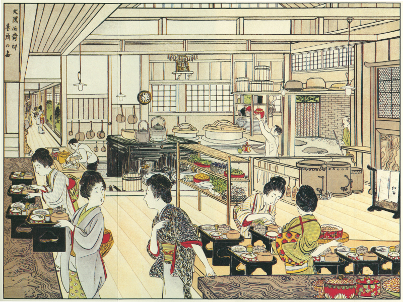
［＃改ページ］
○大隈伯爵家の台所（口画参看）
巻頭の口画に掲げたるは現今上流社会台所の模範と称せらるる牛込早稲田大隈伯爵家の台所にして山本松谷氏が健腕を以て詳密に実写せし真景なり。台所は昨年の新築に成り、主人公の伯爵が和洋の料理に適用せしめんと最も苦心せられし新考案の設備にてその広さ二十五坪、半は板敷半はセメントの土間にして天井におよそ四坪の硝子明取りあり。極めて清潔なると器具配置の整頓せると立働きの便利なると鼠の竄入せざると全体の衛生的なるとはこの台所の特長なり。口画を披く者は土間の中央に一大ストーブの据られたるを見ん。これ英国より取寄せられたる瓦斯ストーブにて高さ四尺長さ五尺幅弐尺あり、この価弐百五十円なりという。ストーブの傍に大小の大釜両個あり。釜の此方に厨人土間に立ちて壺を棚に載せ、厨人の前方板にて囲いたる中に瓦斯竈三基を置く。中央の置棚に野菜類の堆く籠に盛られたるは同邸の一名物と称せらるる温室仕立の野菜なり。三月に瓜あり、四月に茄子あり、根葉果茎一として食卓の珍ならざるはなし。下働きの女中、給仕役の少女、各その職を執りて事に当る。人も美しく、四辺も清潔なり。この台所に入る者は先ず眉目に明快なるを覚ゆべし。
この台所にては毎日平均五十人前以上の食事を調う。百人二百人の賓客ありても千人二千人の立食を作るも皆なここにて事足るなり。伯爵家にては大概各日位に西洋料理を調えらる。和洋の料理、この設備に拠れば手に応じて成り、また何の不便不足を感ずる所なし。この台所のかくまで便宜に適したるはストーブにも竈にも瓦斯を用いたるがためなり。瓦斯なるために薪炭の置場を要せず、烟突を要せず、鍋釜の底の煤に汚れる憂もなく、急を要する時もマッチ一本にて自在の火力を得べし。物を炙り物を煮るも火力平均するがため少しくその使用法に馴るれば仕損ずる気支なし。費用は薪炭の時代に一日壱円五十一銭を要せしが今は瓦斯代九十五銭を要するのみ。即ち一日に五十六銭の利あり。然れども瓦斯の使用は軽便と清潔と人の手数とを省く点において費用の減少よりもなお大なる利益あり。
文明の生活をなさんものは文明の台所を要す。和洋の料理を為さんものはよろしくこの新考案を学ぶべし。
［＃改ページ］
今日は正月の元日とて
天地乾坤自ら
長閑なる中にここにも春風の
浸みて来にけん。腹の中にて新年を祝する
胃吉と
腸蔵「オイ胃吉さん、おめでとう」胃吉「ヤアこれは腸蔵さん、去年中は色々お世話さまでしたね。また相変りませずか、アハハ。時に腸蔵さん、今日は正月の元日といって一年に一度の日だからお
互に少し楽をしたいね。私たち位年中忙しくってみじめなものはないぜ。
娑婆の人間は日曜日だの暑中休暇だのと一年中には沢山な休みがある。いくら忙しい奉公人でも盆と正月に
藪入があるけれども私たちばかりは一年中休みなしだ。私は一日に三度ずつ働いていれば自分の役が済むのにここでは
間食が好きで三度の
外にヤレ菓子が飛込む、
団子が飛込む、酒も折々流れ込むからホントに
溜ったものでない。それだから自然と仕事も粗末になって荒ごなしの物を
和郎さんの方へ送って
進げて毎度
剣突を
喰うがこれからはお互に仲を
好くしようではないか」腸蔵「それは私も大賛成さ。和郎さんは
消化すのが役、私は絞るのが役だから和郎さんの方でよく
食物を消化してくれれば私だって絞る仕事も楽だけれども、毎日のように消化れないものをよこすので時によっては和郎さんの方へ
突戻したり、時によっては下の方へ押流したりする事もある。荒ごなしどころか折々はまるのままで送ってよこす事もあるからツイ
喧嘩も始めるようなものさ。今朝の
雑煮餅だって随分荒ごなしだったゼ」胃吉「あれは
堪忍してもらいたい。今日は元日だから楽をしようと思っている
処へ朝の雑煮餅が飛込んだも飛込んだも十八枚飛込んで来た。それもね、玄関番の
歯太郎さんが
能く
噛砕いてよこしてくれればいいけれども、今朝なんぞは歯太郎さんが遊んでいてまるで
鵜呑だからね。その代りおかしい事があったゼ。歯太郎さんのお
内儀さんのお
金さんが餅へひっ付いて釣り上げられてモー少しで
喉の
孔へ落ちるところさ。カッといって吐き出されたから口の外へ飛出してやっと助かったけれども一時は大騒ぎだった。全体お金さんは前の方にいるから何の役に立たない。奥の方に坐っていなければ
食物を
噛む事が出来なかろうにねー」腸蔵「それがまったく
外見だからだよ。外見にお金さんを前の方へ置くのだ。
肝腎の奥の方はおゴムさんなんぞに任せきりだから歯太郎さんだって
碌な仕事が出来ない。仕事を大切に思ったら前の方はおゴムさんでも何でもいいけれども奥の方こそお金さんに手伝わせなくってはしようがない。正月そうそうお金さんもとんだ目に
逢いなすったね」胃吉「マア何にしろ今日はお互に遊びたいものだ。私たちだって
稀に休息もしなければ根気が
竭きていよいよ働けない。
娑婆にある大きな蒸汽機械も折々休息をさせて
大掃除もしなければ
塵が
溜まったり油が切れたりして
直きに機械が壊れてしまう。機械は壊れても取換える事が出来るけれども私たちばかりは
掛がえがない。随分心細いものさ」と夢中になって話しける処へ何やら
紅き水の上より流れ来るものあり。胃吉驚き「オヤオヤ何か来たぜ、妙なものが。ウムお
屠蘇だ。モミの
布片へ包んで
味淋へ浸してあるからモミの
染色が
一所に流れて来た。腸蔵さん
直にそっちへ廻して
進げるよ」腸蔵「イヤ
真平だ」
○食物が人の口に入れば、第一に歯の咀嚼を受け、唾液にて澱粉を糖分に変化せしめられ、胃に入りて胃筋の機械的作用と胃液の化学作用を受け、それより小腸に入りて腸液と膵液と胆汁の消化作用を受け、全く消化せしものは門脈を通じて肝臓に入り、ここにて消毒作用を受け、営養分となりて体中に吸収せらる。
○何人も折々は断食して胃腸を休息せしむべし。三度の食事時間が来りしとて腹の減らざるに強いて食物を摂取するは有害なり。
○屠蘇を紅き布に包むは害あり。白布かガーゼにすべし。
○雑煮を作る時は汁の中へ薄切の大根を加うべし。大根は化学作用にて餅を消化せしむ。
○何時にても餅を食したる後は大根かあるいは大根卸しを喫すべし。
人は気楽なもの、腹の中にてかかる
恐慌を起すとも知らず、
平生胃吉や腸蔵を
虐使するに
馴れけん。遠慮もなく
会釈もなく上の方よりドシドシ
食物を腹の中へ詰め込み
来る。胃吉と腸蔵驚くまいことか「ソラ来たぞ何だか堅いものが。これは
照ゴマメだ。石のようにコチコチしている。歯太郎さんが
嚼まないと見えて魚の形がそっくりしている。こんなものをよこされては溜まらんね。オットどっこい、また来た。今度は
数の
子だ。
乾固まって塩の辛い
奴を
碌に塩出しもしないで
拵えるから
消化そうと思っても消化れない。腸蔵さん、ホントに泣きたくなるね」腸蔵「元日から災難だ。オイ胃吉さん、危いゼ。上の方から黒い石が降って来た」胃吉「なるほど降って来た。これは黒豆だよ。よく
煮てないから堅くって石のとおりだ。
択りも択ってナゼこんな悪いものばかりよこすだろう。少しは手数のかからないものをくれればいいのに。オヤオヤまた来た。今度は柔らかい。
何んだろう、玉子焼だ。しかし何だか少し臭いね、プーンとイヤな
匂いがしたゼ。腐っているのではないか」腸蔵「腐りもするはずだ、正月のおセチにするって十日も前に
拵らえてお
重へ詰めておいたのだもの。せめて玉子でも新らしければ少しは持つけれども、
二月も前に
外所から貰った
到来物の玉子だ。それも
上海玉の
下等物で、
割た時は大概
卵黄が壊れていた。腐ったものは堅いものよりなお悪い。きっと例の虫がいるよ、よく
検めて
御覧」胃吉「オーいるともいるともウジャウジャいる。私はこの虫が大嫌いでね、虫を見るとぞっとして手も付けられない。中でも
虎列剌の虫や
赤痢の虫は一番イヤだ」腸蔵「この頃はペストの虫といって大層怖い虫があるそうだね。虫といえば去年の夏頃腸チフスの虫が水と一緒に流れ込んで来た時には驚いたよ。あの虫は腸のチフスという位で私へばかり
食ってかかってあんな
酷い目に逢った事がない。私も
和郎さんも
二十日ばかり泣き通したっけ」胃吉「あの時の事はまだ忘れない。モーモーこんな商売は
廃めようと思った。虫のいる
食物は私も手を付けるのがイヤだから、そっくり
進げるよ」腸蔵「イヤイヤよこされて
溜まるものか。どうぞ虫を殺しておくれ」胃吉「暇があると殺していられるけれども、
跡からドンドン
遣って来るもの。ソラ来た、今度は
牛蒡の煮たの。煮たというのは名ばかりで、
生も同様だ。ソラ
人参も来た。どっこい今度は焼豆腐か。この焼豆腐も少し怪しいよ。豆腐屋が売れ残りの豆腐を焼いたと見えてやっぱり虫が交っている。オヤ
蒲鉾が
遣って来た。蒲鉾というと魚の身で拵えたようだがこの蒲鉾は魚三
分に
芋七分、これも去年到来の
古物だね。腸蔵さん、こんな様子ではとても今日
楽をする事が出来ないゼ。中途半端に今頃ドシドシ食物が来るようではどんな目に逢うか知れない」腸蔵「食物だけで済めばいいけれども今に私たちの大嫌いなお酒でも飛込んで来たら百年目だ」胃吉「お酒が来たらモー仕事なんぞするものか」と
噂の言葉終らざるに腹中の天地
忽ち震動して上の方より押出し来る酒の洪水「ソラ来た逃げろ逃げろ」「津波だ津波だ」と胃吉も腸蔵も
一目参に逃げて行く。
○ゴマメは蛋白質五割九分、脂肪弐割一分ありて滋養多し。然れども極めて不消化物なり。
○数の子は蛋白質弐割、脂肪一分あり。これも不消化なり。
○黒豆は蛋白質四割、脂肪壱割八分、含水炭素弐割弐分あり。植物中最も滋養分に富むものなるが極めて柔く煮ざれば消化悪し。
○豆腐は大豆より製したるものにて滋養分多く、蛋白質七分六厘、脂肪三分六厘あり。最も賞用すべき安価食物なり。然れども消化は悪し。
○蒲鉾は上等品にて蛋白質弐割、脂肪七毛あり。
○焼豆腐、人参、牛蒡その他のお煮〆を煮るには魚類のスープを用ゆべし。
「モシモシ大原さん、大層お
魘されですね。どうなさいました、怖い夢を御覧になりましたか。モーお目覚めなさいまし」と年若き妻君は年賀の客の年頃三十二、三なる男が酒に酔いて
臥したるを呼起す。ウームと両手を
展ばして
漸く我に
還りたる酔余の客妻君の顔を見て
面目無気に起き直り「どうもこれはとんだ
御厄介をかけましたね。
御酒を戴いてあんまり
好い
心持になってツイうとうとと
睡てしまったと見えます。僕は御酒を飲むと
何処でも構わず寝るのが癖で大きに失礼致しました」と
衣紋を
繕い
袴の
皺を伸ばし
手巾を
袂より
取出して再び三たび口を
拭う。妻君は下女に命じて茶を一杯客に呈せしめ「お
就寝になるのは一向構いませんが大層お魘されでしたからお苦しかろうと思ってお
起し申したのです。夢でも御覧になりましたか」客「ハイ見ました、妙な夢を見ました。腹の中で胃と腸とが
対談をして
頻に不平を
溢している所を見ました。僕は学校にいた時分から校中第一の
健啖家と称せられて自分も大食を自慢にした
位ですから僕の胃腸は随分骨が折れましょう。胃は極度まで
拡張し、腸は
蠕動力を失っている位だと医者が申します。学生時代に一年中脳病で
苦んで思うように勉強が出来なかったのも全く大食の結果で、消化器を害すると必ず脳へ来るそうです。僕ばかりでありません、今の学生がよく脳病だ脳病だというのは大概胃病の結果でその胃病は野蛮的の暴飲暴食から来るのです。僕はそれがために
此方の小山君と同時に大学へ入りながら三度も試験に落第して同級生には残らず追越されてしまい、去年の夏辛うじてわずかに卒業し得た位です。それも今から考えてみると全く教師のお情けでしょう、試験の得点は落第点と
殆ど間髪を
容れず卒業者中最後の末位でした、アハハ。しかし持ったが
病でまだ大食は
廃められません。悪いと知りつつどうしても自ら制する事が出来ません。今朝なんぞは雑煮餅の大きいのを十八
片食べました」妻君「オホホ、
貴君が物を召上るのはホントにお
美事です。何を
拵えても貴君に食べて戴くと
張合があります。そのつもりで今珍らしい御馳走を拵えておりますからどうぞ沢山召上って下さい」客「イヤ、モー控えましょう。そんなに戴くと胃吉や腸蔵がどんなに怒るか知れません、だがしかし大層好い匂いがしますな、非常に
香しくってさも
美味そうな匂いが」と頻に鼻を
蠢かす。妻君笑いながら「貴君が今まで召上った事のないという御馳走です、好い匂いでしょう、あれは南京豆です、
只今南京豆のお汁粉というものを差上ます」客「ヘイ南京豆のお汁粉とは珍らしい、どうして拵えるのです」妻君「なかなか手数はかかりますけれども手数をかけただけの御馳走になります。失礼ながら台所へ来て御覧なさい。貴君も今に奥さんをお持ちなさるとこんな事を覚えておおきなさる方がお徳です」客「いかにも
後学のためだ、一つ拝見致しましょう」妻君「拝見ばかりではいけません、少し手伝って下さい」客「ハイハイお手伝を致しましょう」と仲
好き友達の家と見えて遠慮もなく台所へ立って行く。
台所といえば黒くくすぶりてむさ苦しきように聞ゆれどもこの家の台所は妻君が自慢顔に客を連れ込むほどありて
平生の
綺麗好きさこそと思われ、
拭掃除も行届き
竈も板の間も光り輝くばかり。その代り目の廻るほど忙しきは下女の役、一人は
頻に南京豆を
炮烙にて
炒り、一人は
摺鉢にて
搗砕く。妻君客を
顧み「大原さん、私どもでは毎日南京豆を色々の料理に使います。今まで
胡桃を使う代りに南京豆、
胡麻を使う代りにも南京豆、胡麻
和えという所も南京豆和えという
風にしますが南京豆の方が胡桃よりも淡泊で或る場合には胡麻よりもよほど
美味しゅうございます。もっとも南京豆の中でも粒の
極く大きいものや
円い
形状のものは
脂肪が多くって油を取るにはようございますけれども食用に適しません。少し細長い中位な粒ので大層美味しい種類があります。それを
先ず厚皮を
剥いて中の実ばかりこの通り炮烙で炒ります」客「なるほど、この匂いが今私の鼻を
衝たのですね。市中で売っている南京豆は厚皮のまま炒ってあるでありませんか」妻君「あれは
細い砂を
交て砂と一所に炒るのです。非常に時間がかかって料理用の間に
合ませんから
軽便法で剥いた者を炒りますけれどもこれも強い火で炒ると
外面焦がして中へ火が
通ません。弱い火で気長に炒るのです。よく炒れた南京豆を
冷まして手で
揉と渋皮は楽に剥けますがよく炒れないと剥けません。剥いた豆は御覧の通り
擂鉢へ入て先ず
摺木でよく搗砕いてそれから充分に
摺潰すのですがこれもなかなか骨が折れます。炒りようが悪いほどねばりついて摺れません。一つ摺って御覧なさい」客「イヤハヤ僕は
味噌をさえ摺る事が
下手ですからとても
駄目です」妻君「男の人は誰でも台所の事を軽蔑して
飯の
炊きようも知らんとか、味噌を摺る事も出来ないとかおっしゃるけれども人間として自営の道を知らんのはあんまり自慢になりますまい。戦争に行って
籠城したらどうなさいます、航海して無人島へ吹流されたらどうなさいます、高尚な学理は知っていても自分で自分を養う事が出来なかったら不自由ですね」客「そう言われては一言もない。しかしそれは追々覚えるとしてそれから南京豆をどうするのです」妻君「擂鉢でよく摺れたらお湯を適宜に加えて塩と砂糖で味を付けますがモー一層美味しくするのは牛乳を半分ほど加えます。あるいはコンデンスミルクやクリームをお湯で
溶いて加えてもようございます。見ていらっしゃい、下女が今上手に
拵らえますから」と一々その順序を示し、再び客を以前の客間に
誘て「サア大原さん、
漸く出来ました。
貴君はきっと沢山召上るだろうと思って大きな
丼鉢へ入れて来ましたから御遠慮なく何杯でもお
更りして下さい」と下女に命じて南京豆の汁粉を前に呈せしむ。客はいまだ胃吉と腸蔵に対して
憚る所あり「それでは少々戴きましょう、餅は沢山ですから汁だけでも」と一口二口試みけるが舌
打鳴らし「これは
美味い、実に美味い、炒ってある
故か割合に淡泊ですな」妻君「さようです、何の料理にしてもひつっこくありません。中の餅も一つ召上って御覧なさい、別製ですよ」客「なるほど、この餅も非常に軽くって何とも言われん味だ、これは何という餅です」妻君「それは
葛入餅と申して葛の粉少々と
糯米と一所に蒸して充分に
搗き
抜たのです」客「道理で
絹漉餅ともいうべき位です。あんまり美味しいので残らず平らげました」妻君「お更りをなさいまし」客「そんなに戴くと過ぎましょうけれどもあんまり美味しいからモー一杯」と遂に三杯までを傾けぬ、胃吉と腸蔵
如何に驚きけん。
○南京豆の汁粉は濃きほどよし。奥州辺の胡桃餅の様に南京豆餅と称して可なり。餅のなき時は白玉を用ゆるもよし。
○和物は本文の通りによく炒りて摺りたるものへ絞った豆腐を入れ、塩と砂糖を加えてよく摺り交ぜ、別に人参と蒟蒻あるいは蕪などを湯煮て漏して醤油と味淋にて味をつけ、柔になるまで煮て、冷めたる時南京豆と和えるなり。
○南京豆の豆腐は摺った南京豆一杯と上等葛一杯と水五、六杯の割にてよく交ぜ合せて鍋に入れ、火にかけて充分に煉り、四角な器に入れ冷し、これを葛の餡掛にしてもよし、酢味噌にしてもよし。
○葛入餅を製する時葛の粉にしたるものを蒸さずに餅の熱き処へ少しずつ交ぜながら搗きてもよし、また糯米の粉にしたるものへ交ぜてもよし。
○南京豆は相州産を良しとす。蛋白質弐割四分、脂肪五割、含水炭素壱割二分ありて滋養分多し。
珍らしき御馳走に客は腹の
膨るるまで
飽食せり「奥さん、あんまり
美味いので三杯も平らげましたが軽いといっても南京豆
脂肪に富んだものですから胸が焼けて気が重くなってモー動けません。困りましたな」とさも苦し気に見ゆ。妻君
笑を含み「お茶を差上ましょうか、随分よくお汁粉を召上りましたもの。お気が重ければモー一度お
就寝なさい。枕をお貸し申しましょう。
田舎では人にお餅を沢山御馳走してその跡で枕を出す
処もあるといいますが、そういう時には無理に
身体を動かさないで
静に
臥ていらっしゃる方がようございます。マア
御緩りとお遊びなさい、どうせ御用もないのでしょう」客「イイエ用事は大有りです。今日は
平生知った人の家へ残らず年始廻りに歩きたいと思うので」妻君「それは大層御勉強です。
良人なんぞは年始廻りがイヤだと申して近県旅行に伊豆
辺まで出かけました」客「僕も勉強して年始に廻る
訳でありません、少々
外に野心があるのです、というのは外でもないが多くの人の家へ
往って良い嫁を捜したいと思うので」妻君「オヤマア油断がなりませんね、
貴君はモーそんな野心をお起しなすったのですか。良人の話に、貴君は大食家で有名だけれども品行はお堅くって今まで一度も悪い噂を聞いた事がない、あれは感心だと申しておりました。急にお嫁さんが欲しくおなりですか、まだちっとお早いでありませんか。モー二、三年も過ぎてからでようございましょう」客「僕も急に欲しくなった訳でありませんが少し急ぐべき事情があるのです。僕がぐずぐずしていると国元から
押掛女房が
遣って来そうなので」妻君「そんなお
方がおありなさるのですか」客「
外でもありません僕の
従妹です。全体僕の家は分家で従妹は本家の娘ですが僕の学資を半分ずつ本家から助けてもらった恩もあり、もしやその娘を貰ってくれろといわれたら
断るに困ります。まだ別段親の口からも
叔父の口からも何という相談が来た訳でありませんが僕の親と向うの親との間にその下心なきにあらずで一昨年帰省した時、僕がそれを
察知したのです。それに僕もお情けながら大学を卒業して文学士とか何とか肩書の付いてみれば国元のような
片田舎では鬼の首を取ったように思うのです。ヤレ卒業祝いをするから帰って来いの村中一統の名誉だから一度帰れのと去年から
頻に催促が来ますけれども、うっかり帰ると
忽ち嫁の相談となってその従妹を押付けられるに違いないから僕も国へ帰りません。なるべく
此方で
好い嫁を貰ってその後に帰りたいと思います」妻君「それならばなお結構でありませんか。そのお方をお貰いなすったらよいでしょうに」客「それがね、特別に悪い女というほどでもありませんがなにしろ奥州の山の中で育った田舎娘です。教育もなければ礼儀も知らず、
身体はといったら僕よりも大きいほどの大女、赤ら顔で縮れっ毛で
団子鼻のどんぐり
眼と来ていますから何ぼ何でも東京へ連れて来て僕のワイフですと
人中へ出せません。国元の方から何とも言って来ない内に此方で早く
好い嫁を
極めてしまいたいのです。奥さんどうぞ世話をして下さらんか」と今の若き人には往々かかる事情の存するあり。
○海苔汁粉というものあり。そは餅を小さく切りこんがりと焼き湯に漬けて柔になし椀に盛りて大根卸しを懸け砂糖を少しく振り焼海苔を細く揉みてかけ醤油を少しく滴して食す。
○味噌餅は餅を柔く湯煮おき別に赤味噌を擂り酒と砂糖にて味を付け裏漉にして一旦煮立て餅の上へかけ椀の蓋をなし少し蒸らして食す。
事情に
駆られて婚礼を急ぐほど不幸なる者はなけん。さりながら今の世には聞く人もまたかかる事情を
怪まず。妻君は客の心を察し顔に「そうですねー
誰か
貴客に相応した娘さんがありますとちょうどいいけれども、誰かないかしらん。あの中川さんのお
妹子さんが去年の暮にお国から出ておいでなすったそうです。貴客はまだ御存知ありませんか」客「イエ一向知りません。中川君も大学以来の朋友で国に妹があるという事は聞いていましたが今度東京へ呼んだのでしょうか」妻君「ハイそうだと見えます。暮に
良人が中川さんへ参ったら中川さんがお引合せなすったそうです。お国は長崎で料理の事は大層進んでいる
処ですのにそのお妹子さんは神戸や大阪にお
在でよほど料理がお上手だそうです。良人はその時お妹子さんのお
拵えになった豚料理を御馳走になりまして非常に
美味しかったと帰って来て申しました。私にも是非そのお料理を覚えるようにと
命令られましたから暇の時
教わりに参るつもりです」と聞くより客は膝進ませ「それは耳よりです。僕の志願は料理の出来る女房を持って
美味いものを食べたいというのです、
外の慾はありません。僕の
楽みは、ただ食べる事ばかり。人間は三度の食事を美味しく食べるほど幸福な事はありますまい。衣食住といいますけれども衣服は木綿でも済みますし家も大概で我慢が出来ます。三度の食事は一番身に直接ですからこればかりは力を尽さなければなりません。西洋人は生活費の過半を
食物に
費すと聞きましたが、日本人は生活費の過半を無駄な遊びに浪費します。僕が女房を持ったら毎日相談して
美味いものを
拵えて二人おとり
膳でそれを食べるのが何よりの楽みにしたいのです」妻君「オホホおとり膳までおっしゃらなくってもいいではありませんか」客「マアさ、その
位な
意気組ですから料理法に長じた女房を持ちたいと思っていました。中川君の妹は僕の注文通りです。長崎や鹿児島では娘に料理法を仕込むのが親の役目だと聞きましたがその上に神戸や大阪で研究したのなら申分ありません。中川君は美男子だから妹子さんも悪くないでしょう」妻君「私はまだ会いませんけれども良人の話しでは
容色も
好いそうです。中川さんよりもっと
良い位だと申しました」客「それならなおさらだ、年頃は」妻君「二十一、二位だそうです」客「どうでしょうその妹さんが僕の
処へ嫁に来てくれましょうか。奥さん一つ僕の橋渡しになって先方の心を聞いて下さいませんか」妻君「大層お気の速いこと。中川さんは貴君のお友達ですからともかくも中川さんの
家へ
往ってその妹子さんに会って御覧なさい。お会いなすった上で是非貰いたいとお思いなすったら御自分でおっしゃりにくいでしょうから、私が橋渡しをしてもようございます」客「ハイ参りますとも。そんな事がなくとも、今日は
此方から中川君へ廻るつもりでした。では早速中川君の家へ出かけましょう。今の事は何分よろしく」と大急ぎにて
出でて行く。妻君送り出して
打笑い「ホントに罪のない人だ」
中川と呼ばれしは二年ほど前に大学を卒業し今は或る文学雑誌の
編輯に従事する人物。下宿屋
住居も不自由とて去年
新に家を借り下女を雇いて世帯を任せしがこれも何かに不便多く、国元より妹を呼寄せて女房の出来るまで家事を任せ
好き口あらば東京にて
嫁入させん下心。兄の中川は年始廻りより帰り来りて
衣服を着換え「お
登和や今日の豚料理はどうだね、
美味しく出来たかえ」妹「ハイ先日よりも良く出来ました。暮に小山さんとおっしゃるお方がいらっした時のは肉が悪い
故でございますか誠に不出来でしたが今日のは兄さんが
好い肉をお捜し下すったお蔭で
角煮なんぞは長崎で
拵えるように出来ました」兄「そうか、それは何よりだ。
余所で
頻りに
晩餐を食べて
往けと勧められたけれども
和女のお料理が出来ているだろうと思って
何にも食べずに戻って来た。そんなによく出来たら誰かを呼んで御馳走したいの。御馳走しても
張合のある人に食べさせたいが、エート、もしや私の
不在中に大原
満という人は年始に来なかったかえ」妹「イイエまだお見えになりません」兄「では今に来るかもしれない。その大原というのは同じ学校にいた朋友だが校中第一の
健啖家で、その男の物を食べるには実に驚く。
賄征伐を
遣る時には一人で七、八人前を平らげるという剛の者だ。
鰻の
丼なら三つ以上五つ位食べなければ承知せん位の大食家だ。あの男に
和女の拵えた豚料理を御馳走したらさぞ
悦んで食べるだろう。どうだね、御馳走は沢山あるかえ」妹「ハイ、もしやお客様でもあるかと存じて二、三人前は余分を拵えておきました。それに残りましても
皆んな二、三日は持ちますから」兄「それならいいがしかし大原にウムと食べられたら二、三人前で足りないかもしれん。少くとも五人前位用意しておかなければ安心が出来ない」妹「オホホ大変なお方ですね。定めしお
身体でも大きくっていらっしゃいましょう」兄「イイエ身体も大きくはない。
肥ってはいるがむしろ小男の部だ。その代り腹ばかり
太鼓のように
膨れている。ビールの
招牌にありそうな便々とした腹を持っていて普通の洋服では
釦が合わん仕立屋がズボンの仕立に閉口する位だ。その大きな腹は残らず胃袋だから驚くさ。
外の人の身体は五臓六腑の中に胃袋もあるというのだけれども、あの男の腹は胃袋の
周囲に外の臓腑が
寄食をしているようだ。何にしろあの男に豚料理を食べさせたいよ。早く来ればいいな」妹「もしや外で晩の御飯を召上っていらっしゃるといけませんね。呼びにお上げなすったら
如何です」兄「まだ下宿屋生活をしている人物だから今頃
家にいる
気支がない。
殊によったら小山君の
処へ寄ってそれからここへ来るかもしれない。オヤオヤ来たぞ、門の外にバターリバターリと重そうな足音が聞える。あれは大原に違いない。腹が大きくって速く歩けんから急ぐ時でも豚の歩くようだ」と噂を聞いてさえ
興を
催しければ妹は
如何なる人物ならんと好奇心より早く見たくなり窓の
格子戸へ顔を当てて「兄さん、きっとそうでございますよ」
牛歩
豚行の大原満は心に未来の想像を描きて嬉し顔に中川家の格子戸を
開けたり。まだ案内も乞わぬ
先きから主人中川
襖を開き「大原君、待っていたぜ。今日は君がきっと来るだろうと思って待っていたところだ。もしや来なかったら呼びに
上げたいと思った位だ。マア上り
給え」とその様子の元気
好さ、大原は心に期する事ありて
一入嬉しく、やおらと上に
登りて座敷へ通り「中川君、
先ずおめでとう。時に今日はどういう訳でそんなに僕を待っていた」主人「その
仔細はね、今度僕の妹が国から出て来た。これが妹だよ」と
談話半ばに先ず妹を紹介する。紹介されぬ先よりその人の顔を
孔の
明くほど眺めておれる大原は
平生の書生風に引かえて
俄に
容を正し
慇懃丁重に両手を突いて初対面の
口儀を述べ「ありがたい訳だね、君の
御令妹が御上京について僕を待っていたとは実にありがたい。即ち天意ここにありかな」主人「ナニ」大原「イイエさ僕も早く来ましょうと思ったけれども小山君の
処へ寄って遅くなった」主人「そうだろうと思ったよ。僕の妹は料理自慢だ。長崎辺の
風で女の子に料理法を充分に仕込むが妹は国の料理を習った
外に神戸や大阪で和洋の料理も少しずつ研究した。今日は幸い長崎の豚料理を
拵えたから誰かに御馳走したい、
折角御馳走するなら張合のある人に差上げたいというのだが物を御馳走して張合のあるのは君の外にないからそこで君を待っていた」大原「オヤオヤ少し
当が違った。ナニさ少し都合が悪いよ。僕は今小山君の処で南京豆のお汁粉というものを腹一杯食べて来た」主人「あれを
遣ったかえ。僕も毎度御馳走になるが少し食べておくと非常に
美味いけれどもなにしろ脂肪だから食べ過ぎると胸に持つね。あの妻君が君の食べるのを面白がって
無闇に
薦めたろう」大原「薦めた事も薦めたが僕も美味いから随分食べたよ。大きな丼鉢で三杯平らげた。
跡で気が重くなって立つ事も出来ない、ここへ来るのも漸く歩いた位だ」主人「ヤレヤレそれは
生憎だったね。折角君に御馳走しようと思って楽しんでいたに、妹もさぞ
本意なく思うだろう」大原「ところがね、外の人の御馳走ではモー一口も食べられんが御令妹のお手料理と聞いては腹が裂けるまでもこのままに引下がれん」主人「では
食るかね、相変らず
豪い勢いだ。僕もまだ飯前だから一緒に遣ろう。お登和や、早速ここへお膳を出したらよかろう」妹「ハイ」といって勝手へ
往き下女と共に大きな食卓を運び来る。食卓の上には
見馴れぬ料理皿に
堆し。大原先ず鼻を
蠢かし「ドウも
好い
匂だ、何ともいえん
美味そうな匂だ。僕は今まで折々豚を食べたけれどもあんまり美味いと思った事がない。豚は
不味いものと心得ていたが料理法次第でそんなに美味くなるかね」主人「美味くなるとも、牛肉の上等よりもなお美味い」大原「マサカ」主人「イイエ実際だよ」と熱心に弁論を始めんとする時妹のお登和小声に「兄さん
御酒をつけますか」兄「そうさ少しつけておくれ」と御馳走には必ず酒の伴うあり。悪い癖。
主人の中川は熱心になりて豚の弁護を初め「大原君、僕は日本人の肉食を
盛にするため豚の利用法を天下に広めたいと思う。豚の肉は牛肉よりも
価が
廉くって
巧に調理すると牛肉より
美味くなる。豚の肉は全く調理法次第だ。
価の点においても調理法次第で牛肉より
遥に高くなる。生の肉を買ってみ給え、東京辺では
極く上等で二十二、三銭位だろう。
腿の肉はズッと廉い、買い場所によると十銭以下だ。その腿がハムになると和製で一
斤三十銭から三十五銭さ。
亜米利加ハムは一斤五十銭位だが
仏蘭製の上等ハムになると一斤一円二十銭する。一斤一円二十銭するものは牛肉にない。西洋料理でも上等ハムの料理は牛肉料理より
貴いとしてある。同じ豚でもそんなに違うでないか、君が以前食べたというのはどういう
風に料理したか」大原「牛肉の煮込のように鍋の中へ豚の生肉を
打ち
込んで煮たのさ」主人「アハハそれこそ
言語同断乱暴狼藉というものだ。長崎辺では
昔しから豚の生肉に毒があるといって決して
直ぐ煮たものは食べない。西洋料理でも大概一度
湯煮てから使う。豚の生肉には例の寄生虫が沢山いる。それに生肉は脂肪が強いから沢山食べると
身体へ
腫物が出来る。お負けに消化も悪い。その代りハムにでもすると消化が良くって腸チフスの後に第一の肉食は上等のハムを与えるという位だ。豚の生肉を直ぐ煮て食べるほど毒な事はない。第一味が悪い、決して美味くない。豚の肉や
猪の肉は何の料理にするのでも先ず
大片を二時間位湯煮て
杉箸がその肉へ楽に
透る時を適度として一旦引上げてそれから煮るとも焼くともしなければならん。あるいはそぼろ料理のような小さく切ったものは塩湯で湯煮て油で
炒りつけてそれから二時間も煮抜くのだ。生肉を直ぐに煮るようではとても豚の味を知る事が出来んね」大原「そうかね、そんなに湯煮たり煮たりしたら味が抜けてしまいはしないか。白い
処なんぞは溶けて
亡くなるだろう」主人「白い
脂肪が溶けて消えるようなのは食用に不適当な下等豚だ。上等の肉の脂肪は煮るほど軽くなって溶けない。豚の肉の上等は三枚肉とも七段肉ともいって赤と白と段々になったところだ。知らない人は赤い処ばかりくれろなんぞと腿の赤身の一番悪い処を買って良い処を
捨てしまう。赤い処でも上等のロースなら外に使い
途があるけれども、白い処は煮るほど美味くなるのだ。もしや豚の肉を湯煮てみて赤い処は
硬くなり、白い処は溶けて湯がドロドロになるようだったら非常に粗悪な食料を与えた豚で食用にはならん。東京では折々そんなのを売っているからよほど吟味して買わねばならん。上等の食物で飼った豚はよく煮るほど赤い肉が
柔くなって白い肉も決して溶けない。全体東京辺の豚は乱暴だよ、二十貫もあるような親豚を屠殺して食用に売るから豚が硬くって味も悪い。先日小山君に御馳走した時はそれでしくじった。長崎辺で食用にするのは小豚ばかりだ、親は
種豚にするけれども食用にしない。小豚の肉が柔くって良いがモー一層美味いのは去勢した豚だ。近頃は西洋からヨークシェヤだのパークシェヤだの色々な豚の種類が来るけれどもあれは
皆んな支那豚を種にして
欧羅巴在来の種類を改良したものだ。どうしても豚の元祖は支那だから豚の種類も食用に適しているし
料理方も豚は支那風のが一番
味いね」と豚のために
気焔を吐く。
側より妹が「モシ兄さんお
汁が冷めるといけませんから早く召上りまし」
○豚の生肉には肉類の寄生物中最も恐ろしき旋毛虫および嚢虫あり。人もし半熟の豚肉を食すれば旋毛虫体内に発育して大害を招く。また嚢虫は人体に入りて絛虫と化す。
○豚の刺身を上等に製するは最初肉片の両側へ塩を塗り、鉄串にて肉に孔を明け、塩の中へ浸み込むようになし、本文の如く湯煮て後そのまま煮汁の中へ一昼夜漬けおき、翌日取出して煮醤油へ漬けるなり。かくすれば味一層よし。
○本文中各項に出ずる献立は新しき料理法を示さんとする主意にて無理なる配合多し。読者それ心して見るべし。
客の大原は腹中新に食物を
容るるの余地なけれども心に期する所ありて無理に
箸を
執り「なるほどこの汁は
美味い、色々野菜も交っているがこの豚は口へ入って溶けるようだね」主人「それは琉球の塩豚だもの。琉球の塩豚は有名なもので牛肉なんぞより数倍した御馳走だぜ。豚だ位に軽蔑されては困る」大原「イヤどうして軽蔑が出来るものか、琉球も豚は上等かね」主人「種が支那から来ているし
飼養法も進んでいるから琉球豚は上等だよ」大原「どうして支那豚はそんなに
良いだろう、やっぱり種類を改良したのかね」主人「
勿論古来から食用にしていて良い種類を繁殖させた結果もあろうが一つには地勢にあるそうだ。第一豚の元祖たる
猪の肉が
欧羅巴辺のは非常に
不味って支那のは非常に美味いそうだ。欧羅巴は土地が平坦でないから猪が常に筋肉を労してその肉が硬い。支那は地勢上猪までノソリノソリと
育から肉が美味い。豚は猪を家畜にしたものだ。欧羅巴の豚も最初は猪の通りに肉が
硬かったのを支那豚を輸入して今のように改良を加えたものだ」大原「なるほどね、一口に豚というが豚にも色々区別がある。この刺身のようになっているのも大層美味いがこれはどうしたのだ」主人「それは豚の刺身と称するが君のような下宿屋生活でも一度
拵えておくと五日も六日も持つから試してみ給え。訳はないよ。先ず豚の三枚肉の上等を買ってそのまま大きな鍋へ入れてよく
湯煮る。その
肉片の大きさによって一時間から二時間も湯煮ると杉箸がスーッと楽に透る、それがちょうど適度だ。その時一方の大きな
丼鉢へ上等の
醤油ばかり
注いで今の湯煮た肉を
直ぐに漬けておく。それが一日も過ぎると醤油が肉に浸みて
美い味になる。イザ食べようという時
小口から
極く薄く切って
溶き
芥子を添えるのだ。一つ試してみ給え、一番
軽便の豚料理だ。しかし僕の
家のは少し
贅沢にそれをまた一時間ほどテンピに入れて
蒸焼にしたのさ」大原「テンピとは何だ」主人「俗にいう軽便暖炉だ。しかし君らが使うにはカステラ鍋で沢山だよ、小さいから火が少しで済む。その鍋の中へスポリと入る位なブリキの皿のようなものを造ってそれを鍋に入れて
上下へ火を置けば牛肉のロースも出来るし大概な西洋菓子も出来る」大原「早速そのお刺身を
遣ってみよう。
此方の皿にある
細いものは大層サッパリとしているが何だね」主人「それは豚のソボロといって豚の嫌いな人にでも食べられる。本式にするとソボロ
俎板といって
立目の俎板で肉を
細く
截るが此方にその俎板がない。豚の肉を細く糸切にしてグラグラ
沸騰している塩湯へ少しずつ落してザット湯だったら
網杓子で
笊へ
掬い
上げてよく水気を切って今度は
外の鍋で油の中へ入れて
炒り
付ける。それから水一升に酒一合の割合で二時間ばかり煮て、
牛蒡と
糸蒟蒻と木くらげがあればなおいい。あるいは外の野菜でも時の物で構わん。野菜をやっぱり細長く切ってそれへ加えて砂糖と醤油で味を付けるのさ。
葱を
細に切ってヤクミにして食べると塩ゆでにしてあるから誰も豚と思わんよ。女に御馳走するならこれが一番だね」大原「僕も豚ではないと思った、実に美味くって頬が落ちる。これは全く
御令妹のお手料理だからこんなにおいしいのだね」と
柄になきお世辞を言う。娘も少し鼻が高し「どうぞその角煮を一つ召上って下さい」とこれが最も自慢の料理。
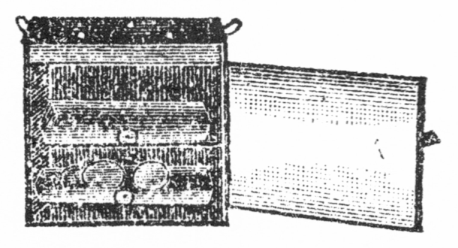
テンピの図
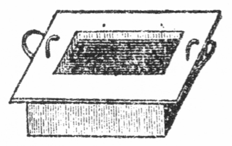
カステラ鍋の図
○琉球の塩豚にも色々の種類あり。その中で縄巻と称し、肉の周囲へ塩をつけ荒縄にてグルグル巻きたるが上等なり。
○琉球の塩豚を料理するは一晩位水に漬けて塩気を出し、一旦湯煮て薩摩汁の如く種々の野菜と共に煮るがよし。また刺身にもなる。種々の豚料理に用ゆべし。
○ソボロに用ゆる豚の肉は最初塩にて揉み、それを沸湯に投じてもよし。
○ソボロは汁が沢山あるほどに煮詰めてよし。外の野菜もなるべく小さく切るがよし。
○テンピは西洋食品屋にあり。壱円五十銭位なり。
○カステラ鍋は東京市浅草区蔵前片町瀬村正兵衛氏方にあり。壱円五十銭位なり。
○豚は生肉にて蛋白質壱割五分、脂肪三割七分あり。ハムにしたるものは蛋白質弐割四分、脂肪三割六分となりて滋養分牛肉に優る。故に長く煮てよく調理すれば滋養分は牛肉に劣らず。
○豚の糸切の塩湯煮にしたるを煮ていり豆腐へ交ぜ再び炒りてもよし。
手料理を人に
饗するものは先方の胃袋が堪うると
否とに
頓着なく多食せらるるを
快となす癖あり。主人の中川自慢顔に「大原君、その四角な大きな肉を試してみ給え
箸で自由にちぎれるよ。それが長崎有名の角煮といって豚料理の第一等、本式にすると手数も随分かかるが非常に
美味いものだ。一つ
遣ってみ給え」と
頻に
薦められ客は箸にてその肉をちぎり「なるほどちぎれる。これは美味い、これは非常だ。どうして
拵えるのだね」主人笑いながら「これはうっかり教えられん、伝授料が
要るよ。長崎でも同じ角煮といいながら
家によって
少ずつ
料理方が違う。僕の家のは支那人直伝の
東坡肉というのだ。今に君が家でも
持たら妹に命じて君の
御妻君に教えて進ぜよう」大原は失望の気味「イヤそれは少しお
門違い、僕は御令妹の調理された者を
食たいのが志願だね」御本人の娘も大原の心を察せず「お教え申すというほどに出来ませんが奥さんがいらっしゃいましたらお
互に
知た事の御交換をして戴きたいのです。小山さんにも先日願いまして南京豆のお料理を習いに出ますつもりです」と
何処までも
余所余所し。大原
張合なく「困りましたね、そうおっしゃっては。僕のような者の
処へ嫁に来てくれる人がありません」と
窃に先方の気を引いてみる。
生憎娘は何とも答えず主人が
串談に「アハハ来てくれる人があっても君の
大食を見たら
胆を
潰して逃げ出すだろう。お登和や、
豚饂飩が出来ているなら私におくれな」妹「ハイ、お客様にも差上げましょうか」と大原の様子を
窺えども大原は
打萎れて黙っている。今度はお登和が張合なく「誠に不出来でお口に合いますまいから」と謙遜の言葉も大原の耳には
怨言らしく聞え「イエ戴きます、何でも戴きます。
貴嬢のお手料理なら死ぬまで辞しません」と我が意気組を知らせるつもり。この時娘は料理と共に酒の銚子を持ち
来り「兄さんやっとお
燗も出来ました。料理の方で火を使いましたからお湯が
皆んな
冷めてしまって遅くなりました」と食卓の上へ置く。主人は深くも飲まぬと見えて小さな盃へ
半ばほど
注がせ「大原君、君はどうだね」客「飲むさ、酒が来ればまた食べられるからね。僕は酒を美味いと思わん。むしろ
不味くって我慢する方だが腹が張った時飲むと胃を刺撃して再び食慾を起す。僕の酒は食うために飲むのだ」主人「何でも食う事ばかり。アハハお登和や、一つお
酌をしてお
進げ」大原「
有難い。この酒ばかりは特別に美味いよ」主人「上等の酒を吟味してあるからね」大原「ナニそういう
訳ではない、酒のお蔭でまた食べられる。豚饂飩も結構だね」主人「まだこの外に豚と
大根の料理だの、豚とマカロニだの、豚とそうめんだの、豚料理は沢山あるから追々御馳走する事にしよう。折々遊びに遣って来給え」大原「毎日でも来るよ」とは御馳走を目的とするにあらず。しかるに娘は誤解しけん「ホントにお早く奥さんをお持ちになるとようございますね、私も遊びに上って色々なものを
拵えますのに」大原再び失望「どうぞモー奥さん奥さんと言って下さるな、情けなくなります」主人「情けないとはおかしいでないか、何が情けない」大原「情けない事があるのだよ」と到底我心人に通ぜず。
○豚饂飩は一旦湯煮た豚を小さく切り、湯煮た汁に味をつけてよく長く煮たる処へ饂飩を入れて再び少し煮るなり。汁はからき位にし寡きがよし。饂飩の上へ肉を盛りて出すべし。
○豚と大根も湯煮たる汁にて煮るがよし。しかし下等肉にて白肉の溶けたる汁は不可。
○豚とマカロニはマカロニを鍋にて湯煮る時下へ竹の皮かあるいは煮笊を敷かぬと焦げ附く癖あり。豚の湯煮汁にて湯煮て豚と共に味をつけて煮るべし。
○豚と素麺は豚饂飩の通り。
○マカロニとは西洋の干饂飩ともいうべきものにて中に孔あり。伊太利人は我邦の蕎麦の如くに好んで食す。西洋料理には種々に使うものなり。マカロニと赤茄子とを共に料理すれば味よし。西洋には赤茄子をマカロニの附物という。マカロニは伊太利を良しとす。
人の無情は
怨むに
由なし。大原はせめてお登和嬢の手料理を
飽食してその心を迎えんと「お登和さん、あんまりお手料理が
美味うございますからお
汁をモー一杯お
更りを願いたいもので」と苦しさを
耐えてお更りの催促。娘は
賞翫されるほど張合あり「ハイ何杯でもおかえ下さい。ついでにそぼろと角煮もモー一皿ずつ召上ったら
如何です。豚饂飩をお
更え下さい」大原「ハイハイ何でも戴きます。
貴嬢のお手料理とあるから格別の味が致します」妹「どう致しまして誠に不出来でお恥しゅうございます。国の母がおりますとモット美味しく
拵えますけれども」ととかく返事が横に
外れる。大原は
戻かしそうに「イイエ貴嬢のお拵えなすったのが何よりです」と言葉に力を
籠て言えど娘はよくも聞取らずして台所へ立って行く。主人の中川大原の言葉に答え「君、僕の母は料理が上手だよ。妹
如きものでない。母の手料理を君に食べさせたいね」大原「イヤ僕は御令妹のに限る」と言う
処へお登和嬢がお更りの品々を持ち
来る。大原手を
出して盆の上より受取り「これは
憚りさま、今度は最初よりも沢山ですね。少しお待ち下さい、もはや酒の刺撃力が利かなくなりましたから
甚だ失礼ですけれども少々御免を
蒙ります」主人「何をするのだ」大原「御令妹の前で甚だ
相済まんけれども折角の御馳走を戴くために今
袴を
脱いで帯を
弛める。
先刻から帯が腹へ喰い込んで痛くって堪まらない。帯を弛めるとまた二、三杯は食べられる」主人「驚いたね、腹の皮はゴム製に違いないが君のはもはや弾力を失て伸たら縮まらん。お登和や、あんまり沢山お盛りでない。もしや大原君の腹の皮が破裂すると大変だ。しかし大原君、君の腹の容積にも
限あるだろうが、よくそんなに入るね。一朝一夕に胃袋を拡張させようとしても到底そうはなれる者でない」大原「全く子供の内の習慣だ。僕の田舎では
赤児がまだ誕生にならん内から
飯でも餅でも団子でも
炒豆でも何でも不消化物を食べさせる
風だから大概な赤児は立つ事も
碌に出来ないで
茶漬飯を茶碗に一杯位食べるよ」お登和「オホホ」と思わず笑い出す。主人はおかしさよりも
気支わしく「それでは腹部ばかり
膨満して
身体が発達しまい」大原「
勿論さ、大抵な
小児は
脾疳という病気のように手も足も細く
痩せて腹ばかり垂れそうになっている。赤児というものはこういうものと僕は信じていたが東京へ来て始めて手足の肥った赤児を見た。それでも
御方便なもので十歳以上まで生長すると山の奥の寒村だから自然と山や谷を飛び歩くようになって手足も始めて発育する。その代り十歳位な小供でも東京辺の大人位食物を
喫するね。大きくなったら三倍ないし五倍だろう。女でも大概一升飯を平らげる。誰だっけ僕に話したよ、僕の地方へ来て農民が重箱よりも大きな弁当箱を腰へ下げているから家内中の弁当を独りで持って行くのかと思ったが食べる時見たら一人で平らげたと驚いていた。僕なんぞは国へ帰るとまだ少食の組だよ、僕ら位の年の者は雑煮餅の三十枚位平気だからね。外の家へ御馳走のお客にでも往ってみ給え、お
強鉢といって倒れるまで食べなければ承知しないから」と地方到る
処この
弊あり。
○小児の時胃袋を拡げたるが生涯の病となる。親たるものはよく注意すべし。
○我邦の習慣として小児が茶碗の中の飯を残すと勿体ないから食べておしまいと母親が強いて小児に容量以上の物を食せしむるは最も大害あり。牛乳が少しコップへ残りてもモー少しだから皆んなお飲みと強い附けるもその害は同じ。小児は正直なものにて食物胃に満つればイヤと言う。その上を強ゆれば必ず胃袋を拡張す。
大食の弊害は天下に満てり。国の
文野を知らんと欲せば先ずその人民の食物を検すべし。主人の中川も
慨然として「大原君お
強鉢の事は
予ねて話に聞いていたが実際そんなものか。しかしそれでよく生きていられるね、胃袋が破裂せんで生命を保てるね。そういう大食の人でも六十や七十まで生きられるかしらん」大原「生きるから妙だ。七十八十になってもまだ若い者に負けないほど食う人がある。その代り満身の営養分を胃袋へ消費してしまう。脳なぞは更に発育せん。智識も進まず思慮も出ず、脳力はまるで働かずに死ぬまで胃袋の御奉公をしてしまう。全体人は生きているために食物を喫するけれども大食の者は食うために生きておるのだ。あれで脳を使ったらとても生きておられんよ。よく注意して見給え、大食の人は必ず脳が鈍い。脳病に悩む人は大概胃を壊すからだ。第一僕が何より証拠ではないか。君らと同じように大学へ入って試験のたびに落第して三年も
後れて
僅に卒業し得たのは全く脳が鈍いからだ」と自分を
以て例となす。これほど
確な説はなし。中川も笑い出し「それほどよく知っているならチット食物を控えたらよかろう。脳の鈍いのはあんまり自慢にもならんでないか」大原「それがね、
飲酒家の禁酒と同じ事で悪いと知りつつなかなか
廃められん。自分でもよく知っているが食物に向うとどうしても制する事が出来ん。腹一杯に
飽食した後は気が重くなって
暫らく
茫然として脳の働らきは一時全く休止するのがよく分かるよ。それは全く全身の血液が胃袋へばかり
聚中して脳へ送るべき血液が空虚になるからだね。
譬えて言えば脳の機械へ
注すべき油を胃の方へ取ってしまうからだね」中川「サア大体においてはそうに違いないが、近頃研究したる最新の学説によると多食した
後に脳の鈍くなるのは食物の中毒作用というね。化学上の研究からその新事実が発見されたけれども妙なものさ。どんな食物でも人の体中へ入ると間断なく化学作用を起している。決して
空然と遊んでいるものはない。健全の胃へ適度の分量だけ入った食物は直ちに消化されるけれどもその以上の食物は胃の消化作用を受けない。受けないといってボンヤリとしていない。食物自身が一種の腐敗作用を起し中毒性の物と変じて直接に脳神経を刺撃する。それがために脳の働らきが鈍くなって気が重くなるような
睡くなるような
心持ちがするのだそうだ」大原「なるほどそうかしらん、少々気味が悪いね」中川「ところが君のように毎日食物中毒を起していては脳が
疾に消えて
亡くならなければならん。そこには御方便な事がある。人体の
喉に甲状腺といって大きな筋がある。今までは何の効用をなす筋だか分らないで不用な
贅物に数えられた。しかるに近頃の研究で甲状腺は全く食物の中毒作用を
防禦する大効能がある事を発見した。常に食物の消毒作用解毒作用をなして脳を保護する大忠臣だと解った。ちょうど今まで無用視された
副腎が
澱粉消化の大効用ありと知られたようなものだ。して見ると君が脳の全く自滅してしまわないのは甲状腺のお蔭かもしれないぜ」大原「ありがたい訳だな。お登和さん、こんなお話しを聞くと少々心細くなりましたからモー
晩餐はお
終いにしましょう。どうぞお茶を
頂戴」お登和
微笑み「差上げたくってもモー種が尽きました、残らず
貴君が召上っておしまいで。オホホそれでもお皿だけは残りました」と娘もなかなか
戯言を言う。
○食物が胃中にて脳の中毒作用を起したるものは甲状腺にて防禦すれども腸に入れて門脈へ流入する毒分は肝臓にて消毒および解毒さる。故に肝臓に疾患あると人は食物中毒に悩むものなり。
豚料理の食卓は
忽ち勝手へ運び去られたり。娘お登和が盆へ
載せて持来れるは
珈琲茶碗と小さき菓子皿「大原さん、食後のお菓子を一つ召上って御覧なさい。これは
林檎の
淡雪です」大原は苦しそうに
我腹を
撫で「モーどうも水も通りません」主人笑いを忍び「だがね大原君、これもやっぱり化学作用の一つで肉を食べた後に
菓物を
喫すると消化を助けるぜ。食物と食物とがお互に消化作用をする。
昆布と竹の子と一所に煮ると双方とも非常に
柔くなるようなものだ。餅を沢山食べ過ぎた時
大根卸しを喫すると
忽ち胸がすくのもその訳だ。
心太を食べて
黄粉を
舐めると心太が溶けてしまうし、牛肉を食べた後にパインナプルを喫すると消化が速い。試みに牛肉へパインナプルの汁をかけておくと肉が溶けて筋ばかり残るそうだね。
何んでも肉の後に菓物を喫するのはいいよ、一つ
遣てみ給え、その淡雪は口へ入れると溶けるぜ」と言われて、大原も一
匙口へ入れ「なるほど溶ける非常に
美味い。お登和さんのお料理だと思うと一層
美味しゅうございますが、これは林檎をどうしたのです」と段々直接に言葉を交えんとす。お登和はその
褒詞食物にありと信じ「それは
貴君が下宿屋でなさる事も出来ます。先ず林檎の皮を
剥いて小さく切って
心を
除って鍋へ入れますが水は少しも
要りません。水気が少しでも交ると早や早や悪くなります。水なしにお砂糖を少し入れて最初は
蛍のようなトロ火へかけておくとその
温気で林檎から汁が出て鍋一杯になります。その時段々火を強くして
暫らく煮ると林檎が
柔になって、それを汁と一所に
裏漉にしてゼラチンで寄せるのです」大原「ゼラチンとは何です」娘「西洋の
食用膠で、食品屋には
何処にでもあります。大林檎一ツへ薄いゼラチンならば二枚位厚いのなら一枚位を水へ
漬けておくと柔になって火にかけると直きに溶けます。その中へ林檎の裏漉しにしたのを入れてよく
掻き
交ぜてそれから
器ごと水の中へ漬けると寒い時には一時間位で冷えて固まります。林檎はフライにしてもお菓子にしても何の料理に使っても結構ですがこの淡雪が一番
美味うございます。ゼラチンと
交ぜる時レモンとか
杏の
液とかを加えるとなお美味しくなります」と御馳走よりも講釈が多し。大原今度は珈琲を飲み「これは色が薄くって味が濃くって大層妙ですな」お登和「それは玉子の
卵白でアクを
除りましたのです」大原「ヘイ随分
贅沢な珈琲ですな」お登和「贅沢のようで贅沢でありません。
外の事で玉子を割りますとその
殻をそっくり
保存っておきます。殻の中へいくらかずつ白みが残っていますから空気に触れないようにしておくと固まりません。珈琲を煎じる時一人前にその殻を二つか三つも交ぜてよく砕いて
掻廻しますと珈琲のアクがすっかりその殻についてしまって
漉さずに茶碗へ
注いでも黒い粉が出ません。第一味が淡白になって結構です」大原「なるほどいわゆる廃物利用ですな。注意一つで何でも役に立ちますね」主人「だから君が妻君を貰ったら僕の家へ稽古によこし給え。食物の廃物利用はまだ外にも沢山あるから」大原「またその事を言う。僕は泣きたくなるよ」と遂に
暇を告げて下宿屋に帰りぬ。今夜の夢には定めてお登和嬢を見ん。
○昆布と竹の子と煮る前に竹の子を皮附のまま昆布と共に長く湯煮て冷めるまで釜の中へ蒸らしておくと双方共に柔くなる。昆布なければ若布にてもよし。
○昆布は外の野菜および穀物類を消化させる功大なり。
○林檎のフライは林檎の皮を剥き心をとり薄く切り別に玉子と米利堅粉あるいはウドン粉へ塩と砂糖にて味附ける濃きころもを作り、それへくるみてフライ鍋にて揚げる。
○上等製の林檎フライは前文の品をブランデーと砂糖に一時間漬けおき、玉子の黄身と米利堅粉とを牛乳にて溶きかつねりて固くし、白身を泡立たせてそれへ交ぜるなり。油にて揚げる時最初は火を弱くして緩々揚げ後ち火を強くして卸すべし。
○珈琲のアクを抜くに玉子の白身を使って最初に珈琲の粉と交ぜて煎じれば殆ど透明な汁となる。
○ゼラチンを用ゆる代りに寒天を用うるもよし。然れども寒天は酸性なる故余り酸気の強きものは寄らず。
○寒天の酸性を中性にして用ゆる場合には少しく曹達を加う。しかし酸気のものには不可なり。酸気のものは曹達を沸騰せしむ。
思いつつ
寝ればや人の見えつらん夢と知りせば
覚ざらまじを、大原は
昨夜の夢の
現に
残て
独り嬉し顔に朝早く
臥戸を
出で
洗面場に
到てその帰りに隣室の前を
過けるに、隣室に下宿せる大学の書生二、三人
頻に大原の顔を
眺てクスリクスリと笑っている。大原足を
停め「ヤアお早う、諸君はナゼ僕の顔ばかり見て笑っています。顔に何かついていますか」書生の一
人「アハハついていますとも、絶世の美人がついています。しかもその名をお登和さんという美人が」大原
眼を
円くし「ナニお登和さん、どうしてそれを知っているだろう」書生「知っているから不思議でありませんか。コレお登和、
林檎の何とかを
拵らえてくれ、豚のお刺身が食べたいなんぞは安くありませんね」大原いよいよ驚き「それは全体どうしたのです」書生「どうしたにもこうしたにも昨夜の寝言というものはありませんでしたね。
宵から朝まで寝言の言い続け、コレお登和こうしてくれ、ソレお登和ああしてくれとお登和さんという名が百遍も出ましたろう。
貴君は
食気一
点張で女なんぞは振向きもしないと思ったら油断がなりません。そのお登和さんと言うのは何です、お嫁さんの候補者ですか」と言われて大原急に間が悪く「イヤどうもとんだ
処を聞かれましたな。そんな寝言を言ったかしらん」書生「言わなければ僕らが知ろうはずもない。よほどの御熱心ですな。貴君の顔の前にお登和さんという人の姿がブラ下っていましょう。
真直に白状なさらんとこの関門を通しませんよ」大原「ヤレヤレ少々驚いたね。ナーニ
昨日僕の友人の
家へ
往てその妹に御馳走されたのです。その事が寝言に出たのでしょう」書生「御友人の妹さんならお登和さんこうして下さいと他人らしく言うべきです。お登和お登和と女房らしく
呼棄になさるのは
内々その美人に野心があるのですね。そうに
違ありません。それなら打明けて僕らに相談なさい、女の事にかけては僕らの方が貴君よりよほど老功ですよ」大原「なるほど、それに違いない。ナニね、深い野心がある
訳でないがその人を僕の嫁に貰ったらちょうどいいだろうと思って今日は一つ
外の友人に橋渡しを頼もうと思っているのです。どうでしょう、出来ましょうか」書生「出来るか出来ないか僕にも分りませんが幾分か先方にもその心が見えるのですか。以心伝心
黙契の
中に貴君の心が通じているのですか」大原「イヤ一向通ぜん。どうか通じさせたいと思っても向うは電気の不導体の
如し」書生
打笑い「それでは急に橋渡しを頼んでも駄目です。先ずその人の心を
此方へ引寄せておかなければ効がありません。何か先方の
悦びそうなものを
遣って少しずつ機嫌を取るのですな」大原「何を遣ったらいいでしょう」書生「娘ならば先ず
半襟位かな」大原「半襟を買って持って行こうか」書生「そうなさい、それが一番です」大原「しかし僕は半襟というものを買った事がない。どんなものを持って
往って悦ばれるか訳が分らん。困りましたね」書生「では僕らがちょいと
小間物屋へ走って良いのを一つ買って
進げましょうか」大原「どうぞそうして下さい」と妙な処に援兵あり。
さりながら不意の援兵は
当にならず。書生連中二、三人
物好きにも大原の依頼を受けて小間物屋へ
赴きしが途中にて相談を始め「オイ君は大原のために上等の半襟を買って
遣るつもりか。全体大原が女に向って野心を起すとは
滑稽だね。僕の考えにはどうせ滑稽で
成立っているからこの半襟も滑稽的の物を択んだ方がいい。僕らは大原に対して
平生少し
遺恨があるぜ。ナゼというのに大原は三度の食事を我々の三、四倍も食う。大きな
飯櫃を一人で
空にして汁なんぞは五、六杯もお
更りをする。家の
内儀さんが
漏まいことか。この米の高いのに一人で四、五人前も食べられては勘定に合わない。といって
永年下宿していらっしゃるお客様だし、
副食物のお更りなら銭も取れるが飯の代を余計に貰う事も出来んといつでも
愚痴ばかり言う。内儀さんの愚痴がそれなりで済めばよいがその損失は
外の客の頭へかかって毎日の副食物がこんなに
不味い。つまり大原に対する損を我々の方で埋合せるに違いない。我々からして毎月大原の食料を幾分ずつ払っているようなものだ。僕はそれを知っているから何かの時返報をして遣ろうと思っていた。今日はちょうど幸い、半襟の
買入方は
一切僕に任せ給え、僕が一つ奇々妙々の進物を
拵えるから」と人の悪き書生先に立って小間物屋に入り「オイ番頭、八十ばかりの婆さんがかけるような半襟で若い人に
極く
不向きなのは何だ」番頭「ヘイさようでございますな、先ず黒のフラシ
天か何かで」書生「一ついくらだ」番頭「上等で六十銭位」書生「それがよかろう。それから、一番上等で一番大きな奉書の紙は一枚いくらだ」番頭「
大奉書は一枚三銭で」書生「
水引きの一番大きいのは」番頭「一本二銭で」書生「一尺もあるような
大熨斗は」番頭「一つ一銭五厘で」書生「よろしい、その大奉書二枚へ黒のハヤシ天とか何とかいうものを」番頭「フラシ天で」書生「フラシ天か、それを包んで大水引をかけて大熨斗をつけてくれ」番頭も妙な注文かなと思いつつその通りに造りて客に渡しぬ。書生もその
体裁の立派なるを見て満足し「これなら上等だ。代はいくらになる」番頭「ヘイ、お半襟が六十銭、大奉書が二枚で六銭、熨斗と水引で三銭五厘、
皆んなで六十九銭五厘になります」書生「サア代を
遣る。これなら八十位な婆さんにかけられて若い女には
不似合だろうな。若い女にも用いられると少し不都合だが大丈夫かな」番頭「お若いお
方にはとても向きません」書生「それで安心した」と品物を
携えサッサと下宿屋へ戻り大原にそれを渡して
大袈裟の
吹聴「大原さん、小間物屋へ
往ったところが今度新製の半襟で実に最屈強なものがありました。御覧なさい、これはブラッシ天というものです」大原「なるほど、しかしこんなものを若い人がかけましょうか」書生「それが渋い
処で、この頃は何でも渋いものが
大流行。
貴君はそれを御存知ありませんか」大原「イヤ一向知りません。代価は」書生「六十九銭五厘」大原「安いようですな」書生「安いけれども珍らしい処に
価値がある。マアこれを持って往って御覧なさい、向うの人がどんなに悦ぶでしょう」と言葉巧みに押し付ける。大原は世事に
疎し「どうかこれで向うの心を
惹きたいものだ」
心を
籠めし
贈物は書生の
悪戯に成りしとも知らず、大原満は奉書の包紙が
皺にならぬよう、かけたる水引が
揉まれぬようと
後生大事に大なる風呂敷へ包み、歩いても近き場所なるを贈物が大切とて車を雇い、心には
天晴れお登和嬢を悦ばせんと期して急ぎ中川の家へ
赴きたり。門に入りて
窃に
窺う家内の様子「ハテナ、今日はお登和さんの声がしないぞ、
何処へか
往たかしらん。イヤ
外へ
往く所もあるまい、台所にいるだろう」と
頻に気が揉める。主人の中川は狭き家とて人力車の門前に
停まりたるを知り、如何なる客が来りけんと自ら
立出でて格子戸を開き「ナンダ大原君か、
何故台所を
覗いている。早く入らんか」大原
漸く内に
入て座敷へ通り「中川君、
昨日は大きに御馳走だった。時にお登和さんは」主人「今
不在だ」大原「オヤオヤ何処へお出掛だね」主人「今日は小山君の所へ年始に
遣った」大原「それは残念」と失望顔。主人も不審に思い「何か妹に用でもあるのか」大原「イイヤそうではないが僕は昨日のお礼にお登和さんの所へ
土産物を持って来た」主人「土産物を。それはお気の毒だね、そんな心配は
要らんのに。僕が預かっておこう」大原「イヤ、小山君の
処なら僕も小山君の家へ往く用があるから向うで差上げよう」と自分では手渡しにせんつもり。主人の中川も大原の様子が
平生に
異れるを知り「大原君、君もいつの間にか大層変化したね。人に土産物を贈るなぞとよくそんな事へ気が付くようになったね。全体何を妹にくれるのだ」大原「半襟だ」主人おかしく「ウフフ君が半襟を買って来たのか、よほど妙だな。前代未聞の珍事だね。マア遊んで
居給え、今に帰って来るかも知れない」大原「そうさね、途中で行違いになっても残念だから待っていようか。時に中川君、お登和さんは東京で何処へか嫁に遣るつもりか」主人「
好い口さえあれば遣りたいと思うが、しかし僕が女房を貰わない内は困る。僕が貰ってから
彼を遣るつもりだ」大原「そんな事を言わないで早く遣り給え、今の内に」主人「だってまだ
貰い
人もない」大原「あるよ」主人「何処に」大原「何処にでもあるがね。こういう事は機会だから機会を外すとかえって良くない」主人「それは随分今でも好い口が出て急にくれろというなら
彼のためだから僕の不便を忍んで遣らないとは限らん。しかしまだ東京へ来たばかりで誰にも会っていないし好い口の出るはずもない。いずれ何処へか遣らなければならんから好い口の世話をしてもらうように今日は近づきかたがた小山君の処へ遣った。小山君の妻君はなかなか世話好だからね」大原「ウム、そんな
迂遠な方法を取らないでも
近路はいくらもある。小山の妻君が世話をしてくれる処なら何処へでも遣るかね」主人「何処へでもとは言われんが相当な処なら」大原「無論相当この上なしだ。マア僕もちょいと小山君の家へ
往てみよう。さようなら」と例の大風呂敷を
小腋に抱え、
劇てて
戸外へ飛出したり。主人留めもせずして送り出し「君は何だかおかしいね」
小山学士の家にては妻君とお登和嬢とが座敷にて
頻に料理談をなしいたるが妻君一々お登和嬢の説に感心し「なるほど
貴嬢のおっしゃる通り家庭料理の本意は原料の
廉い品物を
美味しく
拵えて食べるのと、棄てるような者を利用してお料理に使うのですね。今のお話の万年スープだの
鯛の頭のお料理なんぞは早速私も始めましょう。しかしお話しばかりではなかなか覚えられません、
恐入りますけれども何か一つ二つ料理をして見せて下さいませんか。稽古のためですから高い品物は無益ですし、安い品で台所にあるものはそうですね、
薩摩芋なら川越の上等が沢山買ってあります。里芋も御座います。そこに今朝魚屋が
章魚を持って来ましたから買っておきました。
乾物では
干瓢に
椎茸もあります。お豆腐は直ぐ近所で買えますし、そんなものの
中で何か
一とつお料理を教えて下さいませんか。薩摩芋は煮るとかお
汁にするとかの
外に美味しく食べる
工風がありますまいか」お登和「そうでございますね、ちょいとした事なら薩摩芋の
梅干韲が結構です。それから牛乳を入れたマッシ、寒天の寄せ物、
米利堅粉と玉子を入た
蒸物、お芋のフライ、
繊に
截った煮物、食後のお菓子で
茶巾絞りなんぞがよろしゅうございましょう」妻君「そんなに色々なお料理
方がありますか。それでは一つ薩摩芋のお料理を教えて下さいまし、失礼ですけれども台所へいらしって」と自ら立って台所へ誘う。下女は妻君の命によりて料理に必要なる道具を前へ持出したり。妻君先ず芋の大なるものを択び「お登和さん、何から先へ致しましょう」お登和「そうですね、何に致すにも
一旦先へ
湯煮ますから湯煮るように皮を
剥いて
截って下さい。私が今
此方のを
繊に截ります」と自分は
庖丁を取りて芋の繊を截り始む。その内に妻君と下女は芋を適度に切りて鍋に入れつつ妻君フト顧りみ「お登和さん、大層マア長い繊が出来ましたね。二尺も三尺も
何処までも切れないのが不思議です。よくそう
綺麗に
平に出来ますね」と
打驚く。お登和なお手を停めず「イイエ私は下手でございます。上手な人はモット綺麗にモット細く何処までも切れずに致します。全体薩摩芋より里芋の方が繊にすると綺麗に出来ます。オヤモーそちらのが湯だりましたか、それならば一度よく湯煮こぼして下さい。お芋のアクが
抜ます。エート先ず梅干あえを
拵えましょうか。そのお芋を少しばかり
裏漉しにして
摺鉢へ入れて下さい。それから梅干の種を
除ってやっぱり裏漉しにして一所に入れて下さい。それへお砂糖を
交ぜてよく
摺れば出来ます」妻君「お塩は」お登和「梅干の塩気で沢山です。それでモー梅干あえが出来ました。もっと上等にするには別にお芋をサイの目に切ってお塩とお砂糖で煮て、それをこの梅干あえに交ぜるとようございますし、
百合を煮て交ぜると大層美味しくなります」と一々原物に
就て教ゆるに妻君熱心に習いてその味を試み「なるほど良い風味ですね、この次は何に致しましょう」お登和「ゆでこぼしたお芋へ今度こそお塩とお砂糖で味をつけて下さい。それから裏漉しにして牛乳を交ぜて摺るとマッシといってキントンの
衣のようなものになります。茶巾絞りはお団子の位な大きさに茶巾で絞るのです。フライにするには
平たく押して玉子と米利堅粉の衣をかけてサラダ油で
揚げるのです。
林檎のフライも林檎を薄く切ってその通りに致します。寄せ物は寒天を煮てその中へ漉したお芋を入れて固めるのです。蒸物は少し
面倒ですがそれへ米利堅粉と玉子とを入れて全体ならカステラ鍋で一時間ほど
蒸焼にするのですがただお湯で蒸してもようございます」と
平生は安物と軽んぜらるる薩摩芋がお登和嬢のお蔭にて今日は上等料理に出世したり。
○梅干あえの梅干分量は見計らいにすべし。
○梅干あえを衣にして中へ栗、慈姑、蓮根その他種々の物を入れてよし。
○茶巾絞りの上に碾茶を交ぜたる芋を引筒にて押出しかけると体裁よき菓子となる。
○薩摩芋は蛋白質一分五厘、脂肪二厘、含水炭素三割、繊維弐分四厘ほどあり。この繊維は如何に調理するも人の胃腸に消化せられぬもの故裏漉にて取除くが必要なり。
○里芋は蛋白質弐分、脂肪二厘、含水炭素壱割五分、繊維七厘なり。
○芋のフライは生のまま大根卸しにて摺り卸し、米利堅粉と交ぜ、油で揚げるもよし。
○寄せ物の寒天を使う代りに西洋の食用膠ゼラチンを使えばなおよし。
○蒸物は漉したる芋を玉子と摺り交ぜ米利堅粉を加え味をつけて程好き固さとなし、それをカステラ鍋に入れて蒸焼にす。
妻君は料理に夢中なり「薩摩芋がこんなに
美味しくなるなら
直段の高い物ばかり買わないで毎日お芋料理を致しましょう。そのセンはどうなさいます」お登和「これは塩湯を
沸たたせてそれへこのセンを入れてザット湯煮て水でよく洗います。塩で締りますから切れません。今度は水を入れて塩とお砂糖で味をつけますが長く煮過ぎると切れてしまいます。その煮加減が少しむずかしいので」と自分で残らず
拵えて見せる。妻君感歎し「マア綺麗ですこと。お三やちょいと御覧、誰が見てもお芋と思えないね。
良人が旅から帰って参りましたら黙ってこれを出してみましょう。きっと
吃驚致しますよ。まだ
外にお芋の使い方はございませんか」お登和「
体裁をかえればまだ色々なものになりますが、湯煮て
裏漉しにしてお芋を一日
乾してお
餅を
搗く時お米と一所に蒸して搗き込みますと大層美味しいお餅が出来ます。それは上等の油で揚げて食べるのが一番です」妻君「そうでございますか、今に
寒餅を搗かせますから試してみましょう。
葛を入れたお餅は暮に搗きましたけれども、まだ外に変ったお餅はありませんか」お登和「大豆を生のまま
碾臼で
挽いてそれを二升に五
勺位な割で
海鼠餅に搗き込みますと乾きが悪うございますけれども、カキ餅にして焼きました時お砂糖入りのカキ餅よりもよく
膨れて軽うございます」妻君「そうですかそれも試してみましょう。お餅を
截る時
庖丁へ
截口が
粘着いて困りますが
好い法はありませんか」お登和「大きな大根を側へ置いて先ず庖丁でザクリと截ってはお餅を截りまた大根を截ってお餅を截るとお餅が粘着きません」妻君「それは好い事を
伺いました、
貴嬢はよくそんなに料理の事をお覚えですね。私なんぞは娘の時分少しも料理の事を心掛けませんでしたから嫁に来て急に困りました。何でも娘の時無益な事を
稽古しないで料理法を習っておかなければなりません。貴嬢をお嫁にお貰いなさるお方はどんなにお徳だか知れませんよ。失礼ですが貴嬢は東京でお嫁にいらっしゃいますか」お登和「どうなりますか分りません。兄や親の都合次第でございます」妻君「東京でお嫁にいらっしゃるとようございますね、いつまでもお近所にいてお料理の事を教えて戴きます。オホホ自分の勝手ばかり申して。貴嬢なんぞはどんな好い
処へでもお嫁にいらっしゃられますよ、ですが気心の知れない人の処へいらっしゃるよりお兄さんのお友達か何かで気心の知れた人の方がようございますね。
昨日貴嬢のお家へ大原さんという人がおいででしたか」お登和は名を聞いてさえおかしくなり「ハイあのお方は何かよく召上りますね」とさも驚いたように言う。妻君も共に笑い「あの人の大食は
名代です。しかしあの人は大食の外に悪い所が少しもありません。正直でおとなしくってそうして心が
極く
実体ですよ」とためにする所ありてか良き点のみを挙げぬ。お登和嬢は
悪き点のみを知れり「ですがあのお方は
幾度も落第をなすって去年やっと御卒業だったそうですね」妻君「ハイ、それはそうですけれども御自分から頭の鈍い事をおっしゃって
外の人の二倍も三倍も勉強なさるそうです。ああいう人の方が
後生畏るべしだと
良人も申しておりました。この節の才子といわれる人は
直ぐ物を覚えて直ぐ忘れて勉強という事をしませんから学校を出るとその先は進歩しません。大原さんばかりは極く遅い代りに死ぬまで進歩するだろうという人がありますよ」お登和「そうでございましょうかね」と容易に信ぜずして心に大原を軽んずる様子あり。折から表に「お
頼申す、今日は」と大原の声聞ゆ。
○薩摩芋を弐分四角長さ一寸位に切りサラダ油かあるいは鳥の油にて揚げ紙の上に置きてその油を取りたる後味淋、醤油、砂糖等にてよく煮たるものへ鳥のソボロをかけて出すは上品にて味好き料理なり。胡麻の油にて揚げたる時は臭みを取るため湯にて洗うべし。
○鳥ソボロは鳥の肉を細末に叩き味淋、醤油、砂糖等にてよく炒り付けたるなり。
○鳥ソボロの代りに海老ソボロにてもよし。製法は鳥に同じ。また玉子の黄身の湯煮たるを裏漉しにしてかけるもよし。
○薩摩芋あるいは他の芋類を多食して胸の閊えたる時は昆布を食すべし。あるいは昆布茶を飲むも可なり。昆布は芋類を消化せしむるの功あり。
大原の声を聞きて妻君は座敷の
方へ
赴けり。お登和嬢も続いて立ちぬ。さりながら妻君の今の言葉が少しく気にかかりて足も前へ進まず。もしや妻君が我身をあの人に世話せんとする心にはあらぬかと気味の悪きように覚えて台所の口に立ったまま
窃に座敷の様子を窺う。大原は携え来りし大風呂敷を大切そうに脇へ置き「奥さんお登和さんは
此方に来ておいでですか」と挨拶より先にその事を問う。妻君その様子の
劇てたるを笑い「ハイ来てお
在です、モシお登和さん」と振返りて呼びけるにお登和も
詮方なく座敷へ入りしが心に
憚る事ありけん、
余所余所しく大原に黙礼せしのみ。なるたけ遠く離れて坐を占めたり。大原は昨日の御馳走にてズット親しくなりし
量見「お登和さん昨日は誠に御馳走さま。僕は昨日のお礼にお登和さんへ差上げたいと思って
半襟を持って来ましたが今中川さんへ寄ったら
此方へおいでだということで急いで
遣って来ました。これがその半襟で」と
恭しく風呂敷包を取りて包み紙の折れぬよう大切そうに
披き、大奉書に大水引のかかりたるを
取出したるが
大熨斗の先の斜めに折れたるを手にて
撫で
展ばし「お登和さん失礼ですけれども」と
勿体らしく差出たり。お登和はいよいよ気味が悪し「イイエそんなものを戴きましては」と辞退して受けそうもなし。妻君大原の様子がおかしきに
堪えねど笑うにも笑われず「お登和さん、
折角のお
土産ですから」と大原のために言葉を添ゆる。大原はお登和嬢が
謙遜して受けぬと思い「中川さんにも今そう申して来ました。お受け下さらんと僕の
志が無になります。これはわざわざ
貴嬢に差上げるつもりで近頃新製の珍らしい半襟を択んだのです、どうぞ御受納下さい」と手を出してお登和嬢の方へ押し
遣る。お登和嬢はしり込して身を
退去る。妻君が仲に
入て
頻にお登和嬢を説きければ嬢も詮方なく「それでは戴きましょう、ありがとうございます」と
不勝無性に受けて脇へ置きしまま中の品を見んともせず。大原は
張合なさそうに嬢の顔を眺めている。妻君も
遂におかしさを
堪え得ず「大原さんが半襟をお
買なすったのは生れてから始めてでしょう、どんな品をお見立なすったか。お登和さん、
外のお
方でないからここでお見せなさいな」お登和は別段に見たくもなき様子にてただハイと包みたるままを妻君に渡す。妻君先ずその大水引と大熨斗に驚き、お登和のおらぬ時ならば早速悪口を
利き出さん場合なれどもお登和嬢の前にて大原を軽蔑するように見せては
後のため
悪しかりなんと
笑を忍び「お登和さん出して見てもようございますか」お登和「ハイ」と気のなき返事。大原は早くお登和嬢に品物を見せしめて
悦ぶ顔が眺めたしと心も窃に躍るばかり。妻君は定めて上等の
縮緬に花など
縫いしたる立派な襟ならんと思い、そうっと水引を抜き、大切に包み紙を
披きて中の品物を取出し「オヤ」と
一声叫びぬ。お登和もちょいと
覗きて驚きたる様子。大原心の
中に「なるほど非常の珍物だ、この人たちがこんなに驚くほどだから」と内々愉快に堪えず。
いかにも驚きたる妻君は
暫く大原の顔を見つめておかしさよりも
訝しさに堪えず「大原さん、この半襟は
貴君が
小間物屋へ
往ってお買いのですか」大原さてこそと大得意「イヤ、人に頼んで買ってもらったのですが渋いでしょう、この頃の新流行でしょう、随分珍らしいでしょう」妻君「オホホ珍らしいにも何にもお若い娘さんにこんな半襟を持って来て下さるとは古今無類の珍談です。どんな人に頼んで買っておもらいだか知りませんがきっとお
欺されなさったのですね。貴君、これは六十位なお婆さんがかける半襟です。
何処の国へ往ってもお若い娘さんがこんな半襟をかけられるものですか。どう間違えてこんなものを買ったのでしょう、とてもお登和さんのお用いにはなりませんよ」と説明されて大原は
俄に青くなり「それはどうもとんでもない事です。僕はお若い娘さんに
進げるからといって頼みましたけれども何で間違えましたろう。あんまり気を利かせてお年をとるまでかけられるようにと末を考えた訳でありますまいか」妻君「マサカ半襟一つを六十までかけられましょうか。折角のお土産ですけれどもこれは一旦お
引込ませになって
外の良いのとお
取かえなすったらいいでしょう」と忠告されて大原は面目なく「そう致しましょう。今度は
貴女に見立て戴いて上等のを買いましょう。お登和さん
御勘免なさって下さい、とんだ物を持って来て
相済みません」と今更
詫びても
追付かず。お登和は半襟を貰いたくもなし、この品を引かえられて再び上等の物を貰いなばかえって迷惑と「イイエこれで
沢山です。
貴君のお志を戴くのですから半襟はこれで結構です。私がかけませんでも外に
用る処が沢山あります。折角のお
思召ですからこれを
戴きましょう」と婆さん向の半襟を我手元へ引寄ぬ。大原は今の一言が何より
有難し「僕の志を受けて下さるとは
忝い。僕は半襟を差上げるのが目的でありません、僕の志を知って戴きたいのです」と漸く元気我に還りぬ。妻君耐えかねて遂に吹出し「とかくお話がトンチンカンでよっぽど妙ですね。大原さん、私は今お登和さんに教えて戴いてお芋料理を致しましたから一つ差上ましょうか。お茶菓子にもちょうどいい者がありますよ」大原「お登和さんのお料理とあれば何でも頂戴します。お芋はなおさら結構」とここにも志を見せるつもり。妻君は下女に命じて品々を持出さしめ「大原さん、それが
茶巾絞りといってお芋のお菓子です。どんな上等のお客にでも出せるそうです。上品な味でしょう。これはお芋の羊羹です。
碾茶を少し加えましたから
殊にお
美味いでしょう。まだ外にも色々ありますけれども
昼餐のお
副食物に差上げましょう。大原さんは別に御用もありますまいから
御緩りとお遊びなさい。私が今お登和さんに教わって
美味いお料理を御馳走しますから」大原いよいよ
恐悦「どうぞ願いたい、御辞退は致しません」妻君「オホホ貴君が御馳走を見て御辞退なすった事は一度もありますまい。その代り原料は
廉い品物ばかり、廉い物を美味しくするのがお登和さんのお料理法です。お登和さん、御迷惑でもおついでにモー二ツ三ツ教えて下さいませんか、
章魚を煮たいと思いますがどうしたら
柔になりましょう」と再び頼む料理の伝授。お登和は帰るにも帰られず。
同じ品物にても料理によりて味に
美悪の差あり。心なき人々は高き代価を払いて悪き味の物を喫す。料理法の進まざるは一家経済の大損失なり。お登和嬢は妻君の
頼に黙し
難く「
章魚とお
芋の
柔煮は随分
美味いものですがチットお昼の間に合いません。晩の
副食物ですね」妻君「晩でもようございます。晩までには宅も旅から戻りましょうから」と
良人の御馳走に供せんつもり。大原が
横際より「僕もお登和さんも晩までいて
御相伴を致しましょう」お登和は余計な事といわぬばかりに「それではともかくも
拵えておきましょう、大原さん
御免蒙ります」と逃げるように台所へ行く。妻君も客を残して
立て行く。大原
独り
茫然として座敷にありしが半襟の失敗にて心安からず。この上はせめて料理の事の手伝いでもしてお登和嬢の機嫌を取らんと自分も立って台所へ行き「奥さん、僕もお手伝いを致しましょう、何か僕に相応した御用はありませんか」妻君「そうですね、ちょうどよい事があります。
貴君はこの大根で章魚を丁寧にトントンと叩いて下さい」大原「ハハア章魚叩きですか、叩くとどうなります」妻君「大根でよく叩いてその大根を
削いで章魚と一所に
湯煮ると章魚が
極く
柔になりますとさ。お
箸で楽にちぎれるそうです」と今覚えたる料理の伝授。お登和は間違いのなきように再び説明し「奥さん、今も申した通り決して最初に章魚を塩で
揉んではいけません。章魚と
鮑は人によるとよく塩で揉む事がありますけれども塩で身が締まってどうしても柔くなりません。鮑のフクラ煮も決して塩をつけずに
糠でくるんで章魚のようにやっぱり大根で叩いてその大根と一所に煮ますが弱い火で気長に煮なければなりません。全体芋章魚と言うのは箸でちぎって見て
孰方が章魚だかお芋だか分らないように柔くなければ本式でありません」妻君「そうですかねー、章魚を煮るとき
小豆を交ぜると聞きましたがあれはどうです」お登和「小豆を交ぜて煮ますと柔くなるよりも溶けるので、
疣なんぞは
直きに消えてしまってその癖
心に堅い処が残る事もあります。
西京では
大豆を交ぜて煮ますし、大阪では
蒟蒻を交ぜて煮ますし、外の処ではお茶を交ぜることもあり、
白水で
湯煮る事もありますが章魚の形を崩さずに心まで柔く煮るのは大根で叩くのが一番です。処によると鮑を
蕎麦粉へくるんでおいて柔に煮る人もありますがこれもやっぱり大根の方がいいようです」妻君「それで里芋の方は
普通の煮方でようございますか。どうもこのお芋は堅くって困ります」お登和「イイエ里芋も箸でちぎれるようにしなければなりません。それには一旦里芋をよく蒸してそれから章魚と一所に味をつけて煮ます。その時醤油を先へ入れてはいけません、塩気で締まって柔くなりませんからお砂糖ばかりで長く煮抜いて火から
卸す前にお醤油を加えます。野菜を煮るのは何でもその通りで醤油を早く入れると柔になりません。お砂糖で煮抜て後から醤油を加えるのです」妻君「なるほどね、では里芋を蒸しましょうか」お登和「ハイよく蒸して下さい。蒸す方を長くして煮る方を短くしないとお芋の形が崩れます。里芋ばかりでありません。八ツ
頭でも
唐の芋でも長く蒸してザット煮るのです。西京で
名代の
芋棒なんぞもよく蒸してあるから柔いのです」と一々
懇に説明する。大原は大根を手に取って力一杯に章魚を叩きおりしがお登和嬢
振返りて思わず言葉をかけ「大原さん、それでは叩き
潰すのです、叩くだけにして下さい」大原「ハイハイ
畏りました」とお登和嬢に口を
利かるるは
小言にてもまた身に
心地好し。
○章魚は本文の外に酒にて柔く煮る法もあり。そは最初に塩を用いずして水にてよく洗い、小口より切り、沸立ちたる湯に入れ、箸にて手早く掻廻し、直ちに冷水へ入れ、笊に揚げ、鍋の底に煮笊を敷きてその上に列べ、水と酒とを半ばずつにして四時間ほど煮詰め、能く柔に煮えし時砂糖を加え、醤油を注して再び煮上ぐるなり。
○章魚の塩煮は前文の如く柔に煮たるものへ醤油を加えずして食塩を加う。
○里芋は皮を剥いて切って長く蒸すなり。蒸す時注意して列べざればネバリにて湯気通らぬ事あり。
○章魚は蛋白質壱割七分、脂肪四分五厘あれども柔に煮ざれば消化甚だ悪し。
○里芋の柔煮は大なる物と小なる物とを別々にすべし。大小を共に煮れば大は煮え足らず小は煮え過ぎて工合悪し。最初より粒の揃いたるを択ぶがよし。
大原はお登和の命に応じて
章魚を叩き終りしが今の小言が縁になりて自分からも口を利き「さてお登和さん、今度は何を致しましょう」お登和「そうですねー。奥さん、まだ何かお
拵えになりますか」妻君「何でも沢山拵えて戴きましょう。お昼の
副食物に
干瓢を煮ましょうか、しかし干瓢はなかなか急に
柔くなりませんね」お登和「イイエ塩で
揉むと直きに柔く煮えます。章魚や
鮑は塩で揉むと堅くなりますが干瓢は反対で大層柔くなります。大原さん、干瓢をよく塩で揉んでそれから水で洗って下さい」大原「ハイハイ」と
大悦び。妻君は下女に命じて近所の豆腐屋へ走らしめ「お登和さん、お昼の副食物にお
汁物がありませんから
餡かけ
豆腐を拵えましょう。餡かけ豆腐にも何か御伝授がありますか」お登和「別に伝授もありませんがお豆腐を
湯煮る時お湯の中へ上等の
葛を少しお入れなさい。長く煮ても決して
鬆が立ちません。
普通のお豆腐でも
絹漉のように柔くなります」妻君「オヤそうですか、私どもでは湯豆腐をします時
曹達か塩を入れます」お登和「曹達でも柔になりますがお豆腐が崩れて味も悪うございます。湯豆腐にするのでも何にするのでも葛を入れるのが一番です」妻君「その
塩梅では餡の方にも
好い事がありましょうね」お登和「餡は最初
昆布と
鰹節で
煎汁をお拵えなさい。それへお砂糖とお醤油で味をつけて葛を引きます。お
役味には
山葵と
芥子とをよく混ぜて出すのです」妻君「それは
美味しゅうございましょう。全体
何処のお料理です」お登和「これは西京風の餡かけ豆腐です」と語る
側にて大原が「お登和さん、塩で揉んだばかりで干瓢がモー柔くなりました」お登和「それでは水で洗ってお鍋へ入れて煮て下さい」と自分こそ台所の主人役、その
中に下女が豆腐を買い来りければ妻君は餡かけ豆腐を拵える。この時勝手口より顔を出す牛肉屋の御用聞き「
今日は何を持って参りましょう」妻君「やっぱり
平日のように上等のロースを一
斤持って来ておくれ」男「ヘイヘイ」と帰り去る。妻君
此方を向き「お登和さん、宅では牛肉が好きですから毎日牛を配達させますよ。牛肉をシチュウにしたのが一番好きでね」お登和「オヤそれではロースをシチュウになさいますか」妻君「ハイ」お登和「西洋料理屋のシチュウのようにお
美味く出来ますまい」妻君「出来ません。ナゼでしょう」お登和「シチュウにする肉はバラーといって
肋の
処の肉でなければ
美味しくなりません。バラーは
直段の
廉い処で内ロースの半分
価位でしょう。ロース肉はシチュウにすると
筋張ってかえっていけません。ロースでシチュウを拵えるのは高い直段の肉をお買いなすってわざわざ
不味くなさるのです」妻君「そうですかね、私は何にするのでも上等の肉がいいと思って牛肉はロースばかり買いました。惜しい事をしましたね」お登和「ロースばかりお使いでは直段が高くって
御損です。シチュウには牛の舌をお買いになってタンシチュウをお拵えなすっても沢山出来てお
徳です。何の料理でもその材料が適当しなければ
好いものがかえって悪くなります。お魚のスープを拵えるに少しでも身を入れると味が悪くなります。骨ばかりにして
綺麗に身を
除らなければ美味しいスープが出来ません。オヤ何だか
焦臭い、大原さん干瓢が
焦付きますよ」大原「ホイ
失敗った」
○湯豆腐を作るには鍋へ湯を沸かし、葛を少し溶き込み、湯玉の立つほど沸き立つ中へ豆腐を入れ、暫く煮ると豆腐が動き始めて浮き上らんとする時掬い揚げて皿へ盛り出すべし。その皿には湯を少しく入れておく。汁は鰹節の煎汁と醤油を煮立て大根卸しを添ゆ。
○バラー肉をシチュウにするは沸立ちたる湯へ肉を入れ、ホンの少しの塩を加え二時間ほど煮て先ずジャガ芋と大根と少々の湯煮た人参なぞを加え、三十分ほど煮て球葱かあるいは白葱を加え塩と胡椒とバターにて味をつけ、また三十分ほど煮て葡萄酒を少し加え、米利堅粉を溶き込みてその汁を濃くす。一晩置いて翌日用ゆるには用ゆる時米利堅粉を溶き込むべし。葡萄酒を加うる時赤茄子のソースを交ぜれば味一層よし。
○上等製のシチュウは肉を一旦油にて炒りつけドビグラスといえる肉汁にて長く煮るなり。
○昆布だしは汁の味を佳くするのみならず、また植物質の消化を助くる功あり。
妻君はお登和の忠告によりて急に下女を顧み「
和女すぐ牛肉屋へ
往って今のロースはバラーにしてくれろとそういっておいで、その肉が来たらお登和さんにシチュウを拵えて戴いて宅が帰りましたら晩に食べさせましょう。きっと驚きますよ」大原「僕もお
相伴を」お登和「ですが
美味いシチュウは今日の間に合いません」妻君「そんなに長く煮るのですか」お登和「イイエ長く煮過ぎても肉が
硬くなって味が抜けますし、
煮方が足りないでも
柔になりません。ザット三時間位煮てちょうどよい時に火から
卸すのがシチュウの一番むずかしい処ですけれども美味しい味を出させるには今日煮たものを一夜
冷しておいて明日召上る前に温めて出しますと肉の味と
汁の味とよく調和して
極く美味しい処が食べられます。やっぱり
鯉の
濃漿のような
訳で」妻君「アラ鯉こくもそうですか」お登和「鯉こくもその日に食べると詰まりません。今夜よく煮てそのお鍋を地の上へ卸して一晩冷しておいて明日になってモー一度煮なければ極く
好い味が出ません。全体西洋料理でも極く上等の御馳走は二日も三日もかかって拵えますし、支那料理はなおさら七日も八日もかかるものがあります。直ぐ煮て直ぐ食べては大概なものは美味しくありません」とこの説明に大原少し張合抜け「御馳走を拵えるのは随分面倒ですな。日本料理で非常に長くかかるものは何です」お登和「そうですねー、お多福豆を本式に煮ても最初から三日位かかります」妻君「あの大粒な
蚕豆ですか、
曹達を入れて煮ると柔くなると申しますがホントですか」お登和「曹達で煮たのもよくありますがあれでは曹達の匂いがして味が抜けて形が崩れて
一向美味しくありません。先ずあれにするには
西京の
真葛が
原の豆が一番上等です。大阪の
尼が
崎辺の
一寸豆もようございます。上州沼田辺の豆も大きいそうですが新豆の
乾したのなら一昼夜水へ漬けます。ヒネならモット長く漬けないと大きく膨れません。それをザット一日ですね、少くとも十時間以上深い鍋へ重い
蓋をしてゴトゴト
湯煮るのです。
湯煮った時その豆を
冷水の中へ入れて洗うのが秘伝だそうです。水で洗って今度はお砂糖と極く少しの醤油と水を沢山入れて、その上へ竹の皮を鍋の内側だけに切って蓋にしますが豆の空気に触れないためです。それから鍋の蓋をして強い火ではいけません。といって弱過ぎてもいけません。火加減が大層むずかしいので、ちょうど適度の火で煮るのが先ず七、八時間でしょう。その途中でもなるたけ蓋を取らないようにしないと豆へ空気が触れて皮が
裂けます。それから醤油はお吸物へ入れる位な
心持でホンの少し入れないと長く煮ますから詰まって塩からくなります。よく煮えると皮も身も同じような柔さになってどんなに美味しゅうございましょう。それを火から卸して一晩おいて明日から食べ始めると寒い時なら四、五日は
持ちますから煮る時
面倒でも毎日の
副食物になります。私も真葛が原の豆を沢山持って来ましたら今度煮て差上げましょう」妻君「どうぞ是非」大原「僕も頂戴に出ますよ。しかしお登和さん、そんなに料理の秘伝を人に教えては
何処からかお
小言が来ませんか」お登和「来てもようございます。秘伝秘伝といって隠すのは狭い心、私は何でもないような秘伝を習うために沢山の金を取られた事も毎度あります。しかしこういう事はお
互に教え合って
我邦の料理法を進歩させるのが人の道ではありませんか」妻君「そうですとも」と大賛成。野蛮の世には何事にも秘伝多し。秘伝は文明の大禁物。
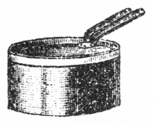
シチュウ鍋の図
○本文の法にて煮たるものは最初樺色にて一日二日を過ぐると次第に黒味を帯び来る。
○一旦煮たるものを二、三日過ぎて再び煮返せば長く持ち豆もいよいよ柔くなる。
○ヒネの固き豆は本文の時間より一層長く煮るを要す。
○蚕豆を煮る時昆布と共に煮れば双方共に柔くなりて味よし。ただしこれは普通の新豆を煮る場合なり。もっともお多福豆に加えてもよし。
○鯉は蛋白質壱割九分、脂肪一分ありて滋養分多し。鯉の味噌汁を産婦に飲ましむれば乳の量を増すと称するは鯉も味噌汁も共に滋養多ければなり。
台所にて料理の
手伝をなしたる大原はお昼の御馳走を例の如く
飽食せり。お豆腐の
餡掛け、薩摩芋の
梅干韲、同じくセン、同じくフライ、同じくマッシ、自分が少し
焦付かせたる
干瓢なんどいずれも美味ならざるはなし。さりながら大原の
悦びはお料理の味よりもお登和嬢と共に御馳走を喫せしにあり。なるべくなら晩にもこの
楽みを再びせんと「お登和さん、
貴嬢も
御緩りと遊んでいらっしゃい。晩までに
此方の小山君もお帰りになりましょうから」と
頻に嬢の去らん事を
気支う。お登和は一刻も早く立去りたし「イイエ、家にも用事がありますからお
暇を致します。奥さん、
大にお
邪魔を致しました。どうぞ私どもへもお遊びにいらしって下さい」と妻君の
引留るを辞して遂に我家へ戻り
行ぬ。失望せる大原「どうでしょう奥さん、お登和さんは僕の処へお嫁に来てくれましょうか」妻君「そう
貴君のように性急な事を言っても出来ません。それに貴君はあんな
半襟なんぞをお持ちなすってかえって人を馬鹿にしたようなものです。
柄にない事をなさるから御自分で事を
毀すようなものです」大原「イヤあれは大失敗、全く僕が
悪戯をされたのです。実は寝言にお登和さんの事を
口走って隣室の書生さんに聞かれたのが原因で、好意か悪意か親切ごかしにあんなものを買って来てくれて僕を
玩弄物にしたのです」妻君「道理で
上包の
拵えからおかしゅうございましたよ。半襟位をあんな大きな奉書へ包んで
頭なしの水引や
熨斗をつけたのは茶番めいています。お登和さんのようにおとなしい人でなければ馬鹿にされたと思ってどんなに怒るかしれませんよ」大原「それを怒らない所が僕に対してよほど温情を抱いているのですね、品物よりも僕の志を受けると言った所は
尋常一様の言葉でありませんね」妻君「オホホ貴君も罪がありません。お登和さんの方では温情どころか冷眼を以て貴君を視ておいでです。私も内々気を引いてみましたけれどもお登和さんのお心には貴君の事をあんまり好ましいともお思いなさらんようです」大原「それはチト失望ですな。何とか外に名案はありますまいか」妻君「お登和さんの
口振では兄や親の都合次第でどうなるか分らんとお言いでしたから先ず中川さんに話して中川さんが御承知なされば
強いてイヤともおっしゃいますまい」大原「強いてイヤとも言うまいなんぞは
甚だ
心細い。それでは一つ
貴女から中川君にそう言って下さいませんか。是非お登和さんを大原に
遣れと無理にも説き付けて下さいませんか」妻君「それは私よりも
良人が帰りましたらば良人に言わせた方がいいでしょう。お友達同士ですから小山が中川さんに御相談したら中川さんも早く御承知なさいましょう」大原「なるほどごもっとも。小山君は何時頃お帰りでしょう」妻君「晩までには戻ります。暮の二十八日に出かけたのですから今日は必ず帰ります」大原「早くお帰りになればいい。何だか待遠ですな。僕は新橋まで迎いに行きましょうか」と心のみ
頻りに急がるる。
夕暮に及びて当家の主人は旅先より帰り来りぬ。
待兼ねたるは妻君よりも客の大原、早く我が頼み事を言出さんと思えども主人の小山
携え来れる大荷物を
披くに
忙しくて大原にまで手伝いを頼み「大原君、君もそっちの縄を
釈いてくれ給え、僕は今度
到る
処の名物を買い込んで来たよ。最初先ず三島から
豆相鉄道へ乗かえて
修善寺の温泉へ
往ったが修善寺名物の
椎茸を沢山買って来た。しかるに椎茸の産地へ行って初めて驚いた事がある。今まで僕らが東京で上等の椎茸と思っていた笠の大きな色の薄赤いのは最下等の種類だね。最上等のはここへ持って来た
寒子の
蝶花形といって肉の厚い笠の小さいのだ。この上等品は秋から冬にかけて発生するのだが
悉く横浜へ出して支那へ輸出してしまう。
伊豆一国から毎年二十万円位の椎茸を輸出するそうだ。
春子というのは沢山発生して
価も
廉い。それが向うでは東京廻しといって最下等品だ。その代り春子の
出盛りは一升五、六銭で買えるようになる。寒子は一升四十銭位だ。しかるに
乾した椎茸を目方にかけてみると寒子の一升と春子の六、七升と同じだから正味の
直段は違わない。見給え、これが寒子の生椎茸だ。肉が厚くって表に蝶花形が現われているだろう。
松茸と同じように開かないのが上等だ。これを料理して食べると実に
美味いぜ。それから
天城山の
山葵も買って来た。山葵は
天城が第一等だね。天城の山葵は卸したものを醤油へ入れても粘着力が強くって容易に散らない。箱根の山葵は直ぐに散る。同じ山葵でもそういう違いがあるそうだ。修善寺から
熱海へ出て名物のポンスを買って小田原と大磯へ寄って来たが小田原の
梅干も三樽買って来た。小田原の
紫蘇巻梅干は梅の実も肉が厚くって種離れがよくって皮が薄くって格別だけれどもそれを巻いた紫蘇が小田原の特産だそうだ。東京へその種を
播いてもあんな上等の色の紫蘇が出来ないというね。この
柚餅も大久保家伝来の名物だ。ここに
磯松風という小田原の菓子がある。これは非常に上品で高貴の人の
賞翫を受けるそうだ。その
外に箱根の
自然薯煎餅、小田原の
蒲鉾、しおから、
牛蒡の砂糖漬なんぞは
皆んな小田原で買ったのだし、大磯では
虎子饅頭の外に近頃新製の小饅頭も買って来た。この
曲物は塩見の
甘酒、竹の皮へ包んだのが踏切のけわい
団子といって
家こそ
不潔いけれども大磯第一の名物だ。僕はモー少し猶予があれば片瀬へ寄って
竜の
口饅頭を買って鎌倉で
力餅を買って、浦賀へ廻って日本一の水飴を買って、金沢で
藻ズクを買って来ようと思ったがそうは廻り切れなかった」とこの人は諸国の名物を買うのが道楽。大原も
土産物の
饒多なるに
一驚し「小山君、君はこんなに色々の物を買込んでどうするつもりだ」小山「これには少し理由がある。中川君の妹のお登和さんという人が長崎じこみの料理自慢だから僕は一品ずつ中川君の家へ持って行ってお登和さんに食べさせたい」大原飛立つばかりに「ウムそのお登和さんお登和さん、僕はお登和さんの事で君の帰るのを
先刻から待っていたよ」とこの機に乗じて我が
心事を語り
出ずる。妻君が二人の前に晩餐の御馳走を持出し「
貴郎、今日お登和さんがいらしって色々のお料理をなさいましたから先ずこれを召上ってそれから大原さんのお話をお聞きなさい」大原「小山君、味の
善い物は
皆なお登和さんの料理だ。少々不出来なものは奥さんの手になったのだし、
干瓢の
焦臭いのは僕が手伝ったのだ」と例の如く腹帯を
弛めてかつ
食いかつ談ず。小山も笑いを含み「だが大原君、その大食を見てはお登和さんも愛想が尽きるだろう」妻君「オホホ、モー
疾くに尽きているのです」
○熱海のポンスは柏屋にて発売す。
○小田原の梅干は美濃屋および枕流亭にあり。塩辛柚餅等も同様なり。
○柚餅は枕流亭が本家なり。
○磯松風は菓子屋佐野屋にあり。
○自然薯煎餅は宮の下末広堂にあり。
○蒲鉾は小田原伊勢善および日比藤有名なり。
○ケワイ団子はケワイ坂鉄道踏切の側にあり。
○浦賀の水飴は西浦賀田中和泉屋にあり。今は盛に外国へ出輸す。
○水飴は半ば有益なる葡萄糖に変化したる糖分六割と糊精一割六分と少量の蛋白質を含み、滋養分甚だ多く、最も小児と老人の食物に適す。西洋にてはマルチエキスとて大に水飴を賞用し、砂糖の代りに牛乳へ交ぜて小児に与う。
○下等の水飴は砂糖を交えて製する故小児に害あり。
愛想の尽きたるお登和嬢を大原のために取持たんは甚だ難事ながら親友の
情誼とて小山夫婦も大原の心を
憐み、ともかくも中川の
同胞を説き付けて充分に力を尽すべしとその夜はお登和嬢の手に成れる料理を
飽食して大原を帰し、翌日主人小山が土産物の品々を
携えて中川の家を
訪えり。中川も妹にかぶれてや食物道楽に心を奪われ、今日も妹を
対手に御馳走の研究をなしいたるが小山より心を
籠めたる土産物を
貰いしが何より
悦ばしく「小山君、僕もこれから心がけて諸国の名物を
聚めようと思う。名物に
美味いものなしというけれども決してそうでない。その土地に適したるもので外の土地に出来ないものが沢山あるからね。
椎茸の話で思い出したが九州や四国から出る
乾海老がその通りだ。内地廻しというのは最下等品で上等品は
皆な支那へ輸出する。乾海老の上等なのは尾がクルクルと巻き込んで決して長くなっていない。それは
湯煮る時に生きているから湯の
中で小さく巻けてしまう。支那人は尾の巻いた海老でなければ決して買わんよ。死んだ海老を湯煮たのは尾がダラリと長くなっている。それが内地廻しになるのだね」小山「アハハ大概そんなものさ、うっかり物を買うと悪い品物ばかり押付けられる。しかし君の家にはお登和さんがあるから非常に徳だね。僕のワイフも追々お登和さんに料理法を仕込んでもらわなければならん。
昨日は大分教わったそうだ。僕も
昨夜章魚の
柔煮や
薩摩芋料理を
賞翫したが
直段の安い品物を美味く食べるのは実に経済主義だ。お登和さんを女房に持つ人は非常の幸福さね。時にそのお登和さんの事について少し相談がある。ドウセ
何処へかお嫁に
遣るのだろうから知らない人へ遣るよりもどうだねあの大原君に遣っては。大原君は非常の熱心だよ。昨日も僕の帰りを待っていて懇々と僕に頼んだよ」と親しき仲とて言葉に飾りなし。中川は
先クスリと笑い「大原君か、道理で昨日も妙な様子だと思った。
跡で聞けば妹に不思議な半襟を持って来てくれたそうだ。随分
滑稽さね。大原君だって別段に悪い点もないが
何にしろあの大食では恐れる」小山「大食だけがあの男の
疵だ。その大食は自分でも害のある事を知っているからお登和さんが側にいて追々
矯め直して行けば必ず直る。大食家でも二、三年洋行して西洋食事に慣れると日本へ帰朝した時普通の人ほど食えない位に胃が小さくなる。だから大原君も習慣の付けようで大食が直るよ。大食が直れば脳の働きもモー少し良くなる。僕は大原君を後生
畏るべき人物だと思う。あの通り正直で
律義で自分から脳の鈍いのを
言立て
外の人より二倍も三倍も勉強するからああいう人が末に
至って大成するよ。それに第一誠実で、親切な心があって無邪気で物堅いから
良人に
持ては女の幸福だね。
才子肌の人や
豪傑気取の人物は決して幸福な良人でない。そういう人物に限って自分の家庭を不幸悲惨の地位に置く。それでは社会に立って何の仕事が出来るかというに今までの不規律な乱世時代には
僥倖の成功もあったろうけれどもこれから先の進歩した社会には才子や豪傑ほど無用な者はない。これからは品行方正で誠実に勉強する人物でなければ世に立つ事が出来ん。大原君の如き人物こそ最も望みが多い。僕は公平に考えてお登和さんのために適当な良人だと思う」と言う
処一応の理なきにあらず。中川も幾分か心の動きけん「そうさねー、僕も妹の事については随分心を労しているがさて容易に
極められん問題さ」と
頻に思案する如し。
この問題の本人たるお登和嬢は最前より台所にありて何かコトコト
御馳走の
支度に
余念なかりしが
漸く手の
隙きけん座敷に
出で
来りて来客に
挨拶しぬ。小山は
好き折とて
直ぐに
話頭を向け「時にお登和さん、突然と妙な事をお尋ね申しますが大原君のような大食家を段々少食にするという方法は何か料理の道に名案もないでしょうか。今も中川君と話しているのです。大原君の
疵は大食にあるがその大食は何とか
矯正する事が出来そうなもの、大酒の人を禁酒させるのは困難だけれども大食の人を少食にするのは何とか
工風がありそうに思いますがどうでしょう」と先ず
余所事らしく話しかける。お登和も余所事に聞きけん、別に顧慮する所もなく「そうでございますねー、別段に工風という事もありませんが、段々と料理法を御研究なすって物の味をお覚えになれば自然と少食におなりでしょう。全体大食をなさる方は物の味が解らんので何でも
彼でも沢山お
腹へ詰め込めばいいという風ですからいわゆる暴食なのです。大食のお方は必ず暴食です。一々召上る物を味わってこれはどういう風に料理してある、これは何の原料で
拵えてあるとその味を食べ分けるようになると舌で物を召上るのですからそう沢山は食べられません。大原さんが物を召上るのは舌で
味うのでなくって口でお呑みなさるのです。一々味って物を食べる人には決して大食や暴食は出来ません。その証拠には料理人に長命な人が沢山あるので分ります。料理人が大食をしたら何ほどでも食べられましょうけれども自分が物の味を知っているとかえって
無闇な
乱暴食が出来ません。自然と注意して食物を択ぶようになります。東京で有名な赤堀老人も八十八歳、
生間流の大家の
西村門弥さんも八十四歳でお二人ともお達者です。長崎でよくこういうことを申します。
美味しい御馳走はその前を
駆けて通った位に食べなければ味がないといいます。それはホンの少しばかり食べておくのが一番美味しい処でそれより多く食べるとかえって味を消すという意味です。誰でも味の解らないお方が大食や暴食をなさるので、大原さんは牛肉鍋の五、六人前も
平らげるとおっしゃいますがそんなお方に限って牛肉は背の肉が良いか
腿の肉が良いか、
肋の肉はどんな味だか、舌や尾はどんなものだか少しも御存知ありません。牛肉だといわれて馬肉を出されてもやっぱり
美味い美味いと召上るようなお方が大食や暴食をなさるのです。物の味をお覚えになれば大原さんも自然と少食におなりでしょう」と嬢の意見は小山に取りて上なき味方。小山は
悦んで中川を
顧み「ねー中川君、お登和さんの御話によっても大原君の大食は矯正する事が出来るよ。大食をさえ矯正したら大原君は実に得難い人物だゼ。何となればあの位誠実な心を持っている人は今の若い人に珍らしい。
昨日もよほど不思議な半襟をお登和さんへのお土産に持って来たといって僕の家内が
頻に笑っていたがそこが大原君の
貴い処だ。もし女の
機嫌を取る事が上手でお登和さんの気に入るような上等の半襟を買って来るような人だったら決して油断がならない。大原君は人の悪い書生に
欺されたのだそうだ。人を欺す者よりも欺される人の方が貴いではないか。ねーお登和さん、大原君のお土産には
赤心が
籠っていますよ。十円二十円のお土産をくれる人があっても赤心の籠らんものは貴くありませんが大原君の赤心は昨日の半襟に充満しています。
貴嬢もよくその事を御存知でしょう」と語る処
偽りならねばお登和嬢もなるほどと思い「ホンにそう申せば大原さんは実意なお方で」と少しずつ
風向が直って来る。
小山はこの風向を利用して大原の事を
吹込んと熱心に「中川君、僕が
殊に大原君の誠心実意に重きを置く
所以は大原君も僕らと同じく文学界に立つべき人だからである。文学者に一番必要な資格は誠心実意でないか。いかに文章が巧みでも筆の先で鬼神を泣かしめる力があってもその精神が欠けていたら何の役にも立たん。口で品行論を唱えてもその身が不品行であったらばどうして人を感化し得るだろう。筆で道徳論を書いてもその身が不道徳をしては誠心実意
何処にある。いやしくも文筆を以て世に立つものは社会を感化するという心でなければならん。
世道人心に
裨益するという精神でなければならん。それを今の世には悪くすると大間違いの心がけがある。
世人の気に入るように文を書くという人もあるが、世人の気に入るのは
幇間の仕事と同じ事だ。恋愛小説を書いて青年男女に
媚びようとするのは幇間が
旦那を取り巻くと
異る処はない。巧みだと評せられて文筆の能事おわれりと思うのも大間違い。巧妙の点を求めたらば俳優の演劇にも巧妙はある。
軽業師の曲芸にも巧妙はある、文筆の巧妙も軽業師の巧妙もその点ばかりは甲乙がない。
然らば何の点が文筆に貴いかというのに精神を以て人を感化する力がなければ文学は社会の
贅沢物だ。即ち世人をしてありがたいと感激せしむる分子がなければ何の役にも立たん。筆の先で文章を書く
量見では決して世道人心を裨益する事が出来ん。精神を以て書いたものでなければならん。国民の子弟を教育すべき教科書事件の騒動を考えてみ給え。いかに文章辞句が巧妙でも
収賄詐欺不徳無道の人の手に成ったものや検定されたものがどうして健全なる国民を教育し得るだろう。僕が教科書を
編纂すべき任に当ったら、先ず第一に誠心実意忠良無二の精神ある人物を択んでその人に托するね。しかるに今や天下の文学者を見渡してそういう人が
何処にある。頭は鈍くとも技倆は劣るとも誠心実意の点は大原君より外に名指すべき人がない。して見ると大原君は実に文学界で貴むべき人だ。将来に大事業をなすべき人だ。それに今の文学者は多く我慢の癖がある。自分の
過ちを遂げ非を飾りたいという癖がある。それから
嫉妬偏執の癖がある。他人の善事はあくまでも攻撃
排陥して何でも悪く言わなければ気が済まんという癖がある。社会の事物を評するのが全く感情任せで道理の判断に拠らないという癖もある。
独り大原君に限ってその癖がない。自分の脳髄の鈍い事を言立て他人の事は何でも
褒る。学校にいた時分も自分の解らない疑問は誰の処へでも聞きに来る。自分より下級の人にでも尋ねる。あれは文学者に最も得難い美質だ。あの美質があるから僕は将来の大成を期している。大原君が常に心の礼という事を唱えていたが君も覚えているだろう。今の内は社会に制裁がないから
幇間的文学や
軽業的文学が
跋扈しているけれども他日社会が規律的に
整頓して
文字を読まず精神を読むという時代になったら大原君の如き人が最も
尊崇を受けるだろう。僕も及ばずながら大原君を助けてそういう人にしてみたいと思う。家庭に
在りては
良主人、社会に立っては好紳士として文学者の感化力を
我邦は申すに及ばず、世界八
隅へ波及せしめたいと思う。それにはどうしても
良夫人を得させなければならん。その良夫人はお登和さんを
措いていずくにか求むべきだ。どうだね中川君、僕の主意が解ったかね」と大原のためにまた
勉めたりというべし。
小山のかくまでに
勉めし
甲斐ありて中川の心も漸く大原に傾けり「なるほどそういってみると大原君も馬鹿に出来んね。心の礼の説は僕も今に至って感心している。しかしこういう事は僕の
一量見に行かんから先ず本人の心を聞いてそれから国元の親たちへも相談しなければならん」小山「それはごもっともだが君とお登和さんとが御承知なさればお国の方はどうでもなるだろう。モシお登和さん、コレさお逃出しなさらんでもようござる。モシモシ」と呼べどもお登和は台所へ引込て再び
出で
来らず。
程なく
晩餐の用意出来たりとて下女が
大なる食卓を持出し来る。小山は座を開き「これはこれはまた御馳走になっては相済まんね」中川「妹の料理を一つ
味ってくれ給え。先日君に御馳走した豚料理は原料が悪くって不出来だったがその後上出来の時は暴食先生の大原君に食べられて君に差上げないのが
遺憾千万。今日は豚料理でないよ、妙な
折衷料理だが、君、このスープを一つ試み給え。これは万年スープと僕が名を付けた新
工風のスープだよ」小山「万年スープとはどういう訳だ」中川「これは朝鮮にある牛頭スープから思い付いたので、朝鮮人は
何処の
家でも台処に大きな鉄釜があってその中へ牛の頭を一つ入れて外の野菜でも鳥の骨でも何でも
打込んで一年中下へ火を
焚いている。そうして毎日そのスープを飲むが牛の頭は一年に二、三度より取かえない。しかし毎日煮ているからスープの味は非常に
佳くって滋養分も多い。僕のはそれを折衷して牛肉の骨付という一番
廉い処を買って大きな鍋へ入れて
火鉢の上へかけておく。その中へ鳥の骨も入れれば野菜は何でも入れる。スープを煮出すのだから上等の処は
要らん。
葱を
切ても
人参や大根を切ても頭と
尾の捨てるような部分を
掃溜へ捨てないでスープの中へ入れる。そうして火鉢の火の
明いている時は夜でも昼でも掛け通しておく。全体日本人の家では
何時でも火鉢に火が起っていて
鉄瓶がチンチン
沸騰っている。あれは不経済の極点で、西洋人の家では三食の外にストーブを焚く事がない。といって日本風の家では客が来ると火を出し茶を出すから火を
絶す事も出来ん。そこで無用な火気を利用するためにこの万年スープをかけておく。客が来て茶を出す時には湯沸しで直ぐ沸くから少しも困らん。それに大根や人参の頭と尾を掃溜に捨てるのも惜しい事だ。スープにすれば味も出るし滋養分も出るから即ち廃物利用主義でこの万年スープを案出したのだ。最初原料を入れてから毎日火へかけて四、五日目位からスープが非常に
美味くなって、これを食べると普通の牛肉スープや鳥スープはモー食べられんね、その代り野菜の分量が骨や肉の分量より多くなり過ぎると味が悪い。僕は十日目に一度原料を取かえる事にした。夏になると牛肉や鳥肉を廃して魚の骨を捨てずに万年スープを作るが魚のスープには魚肉を少しでも入れてはいかん。骨ばかりに限る」と一々講釈付きの御馳走。客はスープを
喫しながら「なるほど妙な味だ。僕は牛肉や鳥肉でばかりスープを作らせるが高いものに付くよ」中川「それでは
贅沢過ぎて味も悪い。僕の家では
球葱スープだの
豌豆スープだのと野菜ばかりのスープも出来るよ」と相変らずの料理自慢。
良ありてお登和が西洋皿へ御馳走を盛りて出で来る。小山急に振返り「モシお登和さん、今のお話しはね」と語り出さんとするにお登和嬢皿を食卓の上に置きて再び台所へ逃げて行く。
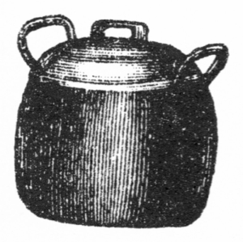
スープ鍋の図
○球葱スープは球葱の大なるもの六個を細に刻みたらば深き鍋にバターを大匙三杯位溶かし葱の鳶色になるほど炒りつけ、水に漬けたるパンの割りたるものと塩と胡椒を加え水を沢山注し、十五分間余り強からぬ火にて煮たる後青味を何なりとも入れて出すべし。
○右の球葱の場合に日本葱の上等を使いてもよし。
○水を注す代りに牛かあるいは鳥のスープを注せば一層味よし。
○豌豆スープは仏蘭西豌豆の乾したるものは一夜水に漬け、生ならばそのまま洗いてザット湯煮、一度湯煮こぼして次に水とホンの少しの塩を加え二時間ほどよく煮、豌豆の柔になりたるものを掬い揚げ、摺りつぶして裏漉にし、漉したるものを前の汁に入れ、塩、胡椒、バターに味をつけ再び煮立てて用ゆ。これも水の代りにスープを用ゆればなおよし。薄く小さく切りたるパンを五つ六つ浮かせて出すもよし。
○赤茄子スープは夏ならば生の物、冬ならば鑵詰の物を四十分間煮てバターを交ぜ、曹達を極く少し入れよく掻廻し別にスープかあるいは牛乳を沸してこの中へ注ぎ込むなり。壜詰のトマトソースを用ゆれば便利あり。
○葱および球葱は脳を養いかつ消化液を分泌せしむるの功あり。日本葱は蛋白質一分五厘、脂肪二厘、含水炭素四分八厘を含む。球葱は蛋白質一分六厘、脂肪一分、含水炭素八分三厘を含む。
○葱の臭気は一種の揮発油硫化アルリールあるによる。
○豌豆は蛋白質弐割弐分、脂肪二分、含水炭素五割あり。滋養の功蚕豆に亜ぐ。
○赤茄子は蛋白質八厘八毛、脂肪一厘、含水炭素三分六厘ありて九割余は水分なり。
食卓の上に置かれたる皿は主人の手に
拠りて客の前へ
薦められたり「小山君、これは牡蠣のフライだ。僕の家のは別製だから一つ試み給え」客は早速
賞翫し「なるほど格別の味がする。これは
生牡蠣を
揚げたのだね、生牡蠣は衣がつかんで油へ入れると
刎ねて困るがどうすると揚がるね」主人「それは何でもない。最初生牡蠣を
乾いた
布巾の上へ
載せてよく水を切って深い皿へ玉子の黄味ばかり
溶て牡蠣をその中へ入れて
掻き廻すのだ。それからパン粉へ転がして油へ入れると決して刎ねんよ。日本流の
天麩羅ならばそれから衣をつけて揚げれば楽に出来る。これは西洋のサラダ
油で揚げたのだから味が軽い。
揚物にはサラダ油が第一等だね。サラダ油のない時には三宅島から出る純粋の椿の油で揚げると
殆どサラダ油に劣らん。一つ試してみ給え」客「早速家でも遣ってみよう。実に軽くって油で揚げたように思えんね」と
頻に
珍重する処へ下女が新しき料理を持ち来る。小山古き皿を
押遣りて新しき皿を引寄せ「これは何だね」主人「それも牡蠣料理だ、牡蠣料理中第一等の
美味いものでオイスタークリームという。本式にすれば水一杯と牛乳一杯とクリーム一杯とを鍋の中で沸かして塩と
胡椒とバターとを入れて
米利堅粉を水で溶いてそれへ入れてかけ汁を
拵える。それから牡蠣を外の鍋へ並べてテンピかカステラ鍋の中へ入れて熱い火で十分間焼て牡蠣から出た汁を前のかけ汁と交ぜて焼た牡蠣へかけるのだ」客「少々面倒だね、そのクリームとは何だ」主人「牛乳の濃いのさ、全体なら牛乳を平たい皿へ入れて一晩ばかりおいて上の
凝結を取るのだが、食品屋へ行くと
鑵詰にして売っているよ。しかし本式にせんで略式にすれば先ず鍋の中へ少し水を入れて牡蠣を五分間ばかり煮立てると牡蠣の甘い
液が水へ出る。その時一旦牡蠣を
掬い
上て汁の中へバターと塩と胡椒と牛乳を加えて米利堅粉を溶てその汁を濃くした処へ前の牡蠣を入れてまた五分間煮立てるとそれでモー出来るよ」客「なるほどね、家へ帰ったら略式で遣ってみよう。牡蠣は実に滋養になって美味いがしかし時によると中毒する事があるというね」主人「五月の牡蠣は産卵期だから
卵巣へ毒質を
持ていて食べると中毒する。五月でなくっても悪水の注ぐ水で発生した牡蠣は往々中毒する。下水の流れ込むような処で取ったのは食うべからずだね」客「そうかな、気を付けなければならん。外国では牡蠣が高いから上等の御馳走だそうだね」主人「
亜米利加でも
欧羅巴でも最上等の御馳走さ。亜米利加では日曜日に牡蠣を食べると極まっているよ。この外に牡蠣料理は沢山あるがまた今度差上げるとして牛肉のビフステーキが出来たから一つ遣り給え」客「ドウも色々御馳走だ。このビフテキは大層
柔で結構だが僕の家で拵えさせると肉が
硬くっていかん」主人「どういう肉で拵える」客「ロースで」主人「アハハハ、それだから硬いのだ。何でもロース肉に限ると思ってわざわざ
直段の高い処を買って不適当な料理にするがロース肉はロースにする時ばかり適当なのでビフテキには不適当だよ。ビフテキにするのはランといって腰の処の
価の
廉い三十銭位の肉が柔くって適当だ。もし肉が新し過ぎて硬かったら酢を二、三時間かけておくと直きに柔くなるよ」客「そうかね、今までは損ばかりしていた」と料理法に無智識なるは最も家庭の不経済。
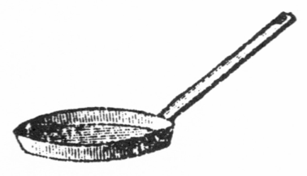
フライ鍋の図
○クリームの鑵には上面の両端に小さき星形あり。その処へ太き釘を当て槌にて打ち小孔を開け、その孔よりクリームを鉢へ注ぐべし。注ぎ終りし時は細き竹釘あるいは木釘を二本作りその孔へ差し込みおくべし。
○クリームの上等は生の牛乳を平たき器に入れ、一日冷たき処に置き上に浮きたる濃き脂肪の凝結を取りて使うべし。それがクリームなり。
○ビフテキは最初に肉を三十分間サラダ油に漬けおきフライ鍋にバターを敷き幾度も肉の両面を焼き塩胡椒をかけ用ゆ。日本風の鉄網の上にて塩胡椒を振かけ幾度も裏返しつつ焼くが味よし。
○牡蠣は蛋白質壱割四分、脂肪一分五厘ありて、貝類中滋養分多きものに属す。かつ他の貝類に比して消化良き故最も賞用せらるる。
家庭の経済は原料の
廉き品物を
蒐めて味
佳き料理を作るにあり。客の小山一々感心し「このビフテキの
側にあるキントンのようなものは大層
美味いが何だね」主人「それはジャガ
薯のマッシといってよく
湯煮たジャガ薯を
裏漉しにして牛乳を加えて塩と砂糖で味をつけたのだ。ビフテキには是非ジャガ薯を添えなければならん。ビフテキは中が
生焼で
截ると血が出る位だから牛肉中に
潜伏する
真田虫の原虫がよく死なん。そこでジャガ薯を一所に食べるとその虫が死ぬという事だ」客「そういう訳で薯を添えるのか。僕は野菜ならば何でもいいと思ったがジャガ薯に限るね」主人「牛肉の血を
絞って
肉漿にする時にも必ずジャガ薯を食べるのはその訳だ。君今度の御馳走は長崎有名の
角煮だからよく味ってくれ給え」客「色々御馳走が出来るね」主人「品数は多いがその代り分量が少いよ。いくらでも食べられるだろう。西洋人の家で御馳走になってみ給え、品数が多くって分量の少いことお
雛様のお膳の如し。それにビフテキでもシチュウでも肉が少くって野菜が多い。日本の西洋料理屋ではお客が日本風の暴食連だから肉の分量が少いと
小言を言う。だから肉沢山の西洋料理が出来る。こんな野蛮的の西洋料理は亜米利加へ
往っても欧羅巴へ往っても見られんそうだ。
魯西亜料理のスープへ骨まで盛って来る処が少し野蛮じみて日本風に似ているかもしれない。西洋料理の原則は生理学上から割出してある。働く人と働かぬ人と夏と冬とは少しずつ違うけれども
種々な点を平均したその標準は体量五十
基瓦即ち十三貫目余の人は一日に二千カロリー、十九貫目の人は三千カロリーの食物を取らねばならぬとしてある。カロリーは君も知っての通り熱量の単位で食物が体温を保持する割合から定めたものだ。大きな
鶏卵一個は八十カロリーだから鶏卵ばかり食べるなら十三貫目の人は一日に二十五を要する。十九貫目の人は三十七を要する。しかしそれでは人体に必要なる化学成分が不適当だ。食物の成分として十九貫目の人は一日に
蛋白質百十八
瓦即ちおよそ三十
匁、脂肪が五十六瓦即ち十四匁、含水炭素が五百瓦即ち百二十匁にその余は水分とこう
極めてある。日本人は通常十三貫目位の平均だから一日に蛋白質二十匁脂肪九匁含水炭素八十匁位が適当だ。蛋白質と脂肪は
重に肉や乳にあって含水炭素は野菜や穀物にあるから肉と野菜の分量もその割合で定めなければならん。日本風の西洋料理でビフテキ一皿といったら殆ど西洋の三人前は肉があるね。それだから多く食べられん。僕の家のは何でも少しずつだから残らず食べられる。その角煮というのはね、先ず
略式で話そうか。豚の三枚肉を
杉箸が通るほどに
湯煮て一寸四角に切って水一升に酒一合
味淋一合位な割で五時間ほどよく煮て火から卸す一時間も前に醤油を多く入れて
煮詰めるのだ。肉が箸で自由にちぎれなければ角煮の価値はない。悪い食物で飼った豚は白い処が溶て赤い処が
硬くなって角煮にならん。最上等の豚でなければこういう風によく出来ない。側に
溶芥子が添えてある、それをつけて食べ給え」客「ウーム不思議だ。頬が落ちはせんか。少し不用心になったぜ」とこれもなかなかの食道楽。
○ジャガ芋は一時間位よく湯煮てその湯をこぼしたる時直ちにバターを入れ芋を転がしながら暫く火の上にて炒り付けたるもよし。また日本風に塩と砂糖にて煮たるもよし。ジャガ芋は甲州産を良しとす。
○医学博士ケルネル氏は日本人のために日本風の献立表を蛋白質と脂肪と含水炭素の割合にて左の如く定められたり。即ち強壮なる男子の食物は、一日に飯米およそ四合、沢庵七切、朝の副食物が味噌汁へ小さき蕪菁の実三個を入れたるものと煮豆が小皿一杯、昼食が小さき八つ頭芋一個と蓮根が長さ三寸ほど、慈姑が六個の煮たるもの、晩が牛肉のスキ焼五十匁葱一本とつく薯のすりたるもの中皿一杯。これにて蛋白質が二十二匁ほど、脂肪が六匁ほど、含水炭素が百十匁ほどとなる。強壮なる男子にてもこれ以上を食するは過分なり。
○ジャガ薯は蛋白質二分三厘、脂肪三厘、含水炭素二割あり。
○肉漿とは牛の血肉と称する処を肉絞り器械にて絞りその血を強壮剤として飲むなり。病後の快復期あるいは虚弱の人に最も功あり。
○肉漿を作る時は先ず血肉を極めて薄く截り、寄生虫類を殺すため鉄網の上にて両面を少しく焼き、熱き内に手早く器械に入れて一つ一つ絞るなり。上等の血肉なれば一斤より一合余を得べし。これに塩を加え、牛乳を交えて飲むべし。また少しく湯煎にして温め飲むもよし。
○血肉は一斤弐十八銭、肉絞器械は上等にて六円五十銭なり。
○牛肉の血の紅き色は多く鉄分なり。菓物の紅き色桃杏イチゴ等は皆な多く鉄分なり。故に人体に功あり。
略式の
角煮は聞き得たり。この上は本式が知りたしと客の小山「中川君、角煮を本式にするのはどうだね」主人「本式は随分面倒だよ。全体この角煮は
宋の
蘇東坡が
工風した料理だといって支那人は東坡肉と号するが、最初は今いった通り
杉箸の通るまで
湯煮てそれを
冷却しておく。それから別の鍋へ
胡麻の油と砂糖とを半分ずつ入れて火の上で煮立てるが油と砂糖はなかなか
混和らない。それを混ぜるためホンの少しばかり酒を加える。多く加えると油がパチパチ
刎ね出して大変だ。そこがなかなかむずかしいので、上手に酒を加えると油と砂糖が
互に溶け合って
鼈甲色に透通ったものが出来る。それを長崎で
色付油という。しかし
焦げ
過ぎると黒くなって苦くって役に立たん。その色付油の中へ豚の皮ばかり小さく切って
炒り付けて火から
卸して冷却してからその皮を出してしまう。今度はその色付油を深い鍋へ移して水一升に酒一合の割で水と酒を加えてその中へ湯煮た豚の肉の四角に切ったのを入れる。それからの煮方は略式の通りだが出来上ったら火から鍋を卸して地の上へ置いて一旦冷却してイザ食べようという時に再び煮て出すのだ。今日
拵えたら今夜一晩地の上へ置いて明日再び温めて食べるのが一番
佳い味になるね」と
込入りたる手続に客は失望し「そんな面倒な事はとても出来ん。先ず略式から試してみよう」と角煮を喫しおわりし時お登和嬢が
二の小皿を持て出で来りぬ。客の小山今度は逃すまじと「お登和さん、どうも色々御馳走さまです。モー
先刻のお話は申上ませんからいらっしゃい。今日の御馳走はいずれも珍らしゅうございますが、
殊に角煮は頬が落ちそうでした」と
頻に礼を言う。お登和も張合ありて心嬉く「このお皿のは
昨日奥さんにお話し申した
西京のお多福豆です。三日前からかかって今日やっと出来上りましたから一つ召上って下さい」と一つの小皿を前に置く。小山がいまだそれを
賞翫しおわらざるに別の小皿を食卓の上に
載せ「これも昨日奥さんにお話し申した
百合の
梅干和です」客は一々箸を着くるに
忙しき処へ今度は下女が持ち出す大きな皿、主人が取次ぎて説明し「小山君、パンの食べ
様は多くバターをつけるばかりだが僕の家ではこういう
風にする。これは薄く小さく切ったパンを少し焼いておいて、鍋へ牛乳を沸かして塩と砂糖とバターを入れて
米利堅粉かあるいは
葛を
溶てそれへ加えて汁をドロドロにした処を火から卸して玉子を入れて
掻き廻すとかけ汁が出来る。その汁を焼きたての熱いパンへかけたのだ。
遣ってみ給え」客「色々ドウも忙がしくって食べ切れない」と頭を挙ぐる
暇もなきにお登和嬢が台所へ
往きてチョコレートと
蜜柑のジャムを持ち来たる「小山さん、これはココアでなくって上等のチョコレートへクリームを加えたのですから召上って下さい。蜜柑の方はジャムの
下拵のようなもので皮ごと薄く切って一晩水へ漬けてその水で沢山のお砂糖と一所に始終掻き廻しながら一時間ばかり煮詰めたのです」と一々講釈の付いた御馳走、小山も応接に疲れたり「なかなかお講釈が沢山で一度には覚え切れません。いずれ家内を稽古に出しますからよろしくお教えなすって下さい」と御馳走に
飽きず講釈に飽きぬ。
○支那料理の東坡肉は一寸四角に切らず、大きなる肉を皮付のまま煮て客の前へ出し箸にてちぎりとるが御馳走なり。皮付の豚肉は横浜にて発売す。東京にては豚を剥がして馬具屋へ売る故皮付肉なし。
○豚の上等なる脂肪肉は蛋白質が百分中一割四分余、脂肪が二割八分より三割七分ほどあり、その余は水分なり。
○蚕豆の上等は百分中に蛋白質が弐割八分余、脂肪が一分三厘、含水炭素が四割九分、繊維が一分二厘、余は水分なり。その下等は胃のために極く不消化なる繊維が九分余もありて蛋白質は寡し。
○百合は百分中蛋白質三分三厘余、含水炭素二割四分なり。
食物を喫するを知りて食物を
味う事を知らざれば共に料理の事を談ずるに足らず。食物を味う事を知りて料理の法を知らざれば共に生理の事を談ずるに足らず。人のこの世に生存するは毎日の食物を摂するがためなり。食物は生存の
大本なるに
世人の深く注意せざるは
怪むべし。この家の主人中川は
平生食物論を研究すると見えて
頻に
長広舌を
揮い「小山君、モー一つ僕の言う事を聞いてくれ給え、西洋料理にも今のような生理の原則はあるが
素人に解り
難い。支那料理の原則たる五味の調和という事は誰にでも応用が出来て自然と化学的作用に適合しているね。即ち料理には必ず甘いと
鹹いとの外に
辛いと
酸いと
苦いという五の味が備わらねばならん。日本人の食物は多く二味か三味で成立っているが僕の家では注意して必ず五味を調和する。今差上げた料理の中に甘いと鹹いのは勿論、
胡椒や
芥子の辛いのがあり、梅干や蜜柑の酸いのがあり、百合や蜜柑の皮の苦いのがあって五味になる。梅干を使わない時は
酢の
物を
拵えるとか百合のない時には
款冬の
薹とか
鮎のウルカとか必ず苦味と酸味を膳の上に欠かないのが五味の調和だ。普通の人の食物は単調単味に過ぎるようだが五つの味が
互に化学作用をすると消化も
好し
心持も好い。これはどうか世人に勧めたいと思うね」客「なるほど、それも至極よかろう。時に御馳走の話しはモー沢山だが
先刻の話しはどうだろう。大原君の方では非常に急いでいるがこの場で返事を聞く訳にならんかね。御当人や
親御さんたちの御心持は後で聞くとしても君だけの心を聞きたいね。君は絶体的に大原君へ
御令妹を遣る事には反対せんか。先刻僕が説明した大原君の真価を承認したらむしろ進んで賛成すべきだがどうだね君の心は。もし御本人がイヤと言わず、親御さんたちが御不承知でなければ君は別段に異存を言わんかね」主人「それは別に異存も言わんが、今妹を取られると僕が少し困る」客「それは君の勝手というものだ。御令妹の心も御両親のお心も君の心によって決すると思うが、御令妹は君次第、御両親も君次第といったら君はどうするね。大原君の処へ往ったがよかろうというか、それとも
止したらよかろうというか、マサカ君が止せとは言うまいね」主人「止せとも言わんが少し待ち給え。僕だってよく考えてみなければならん。妹が生涯の大事件だからね」客「だからさ、ここで考えてここで決断したらよかろう。先刻も言った通り、
良人に持つべき第一の資格は誠実なる心の人に限る。今の内こそ不誠実な人でも才子だとか学者だとかいわれて社会に相当の仕事をしているけれどもモー少し社会の文明が進歩したら誠実な人より外に社会に立つ事は出来んぜ。政治界でも実業界でも何の仕事でも誠実な人を
貴ぶようになるが
殊に文学界では誠実な精神の
籠ったものでなければ人が決して読まんという事になる。我々の責任としても社会の文明をその程度までに進めなければならん。未来の事を想像したら大原君の如きは最も有望の人物だ。今あの人を失っては後に至って君も後悔する事が出来るだろう。よくよく僕の言葉を考えてこの相談を
極めてくれ給え」と
頻に勧告して帰り去りぬ。主人は
跡にて黙考する事久し。物思わし
気に側へ進みたるお登和嬢が「モシ兄さん」
○支那にては五味を配合する中にも春は酸味を主として夏は苦味を交え、秋は辛味を加え、冬は鹹味を多くす。甘味は四時通用なり。これも自ら学理に適いたる養生法というべし。春は逆上の気ある故に酸味を以て引下げるなり。夏は胃の働き弱る故に苦味を用い、秋は気の鬱ぐ時故辛味にて刺撃し、冬は体温を保つために塩分を要す。
狭き家とてお登和嬢は小山の談話を
尽く聞きたるなり「モシ兄さん」と呼かけたる一語は
如何なる心の先駆なるか。大原を嫌いて
嫁入の事を拒まんとするか、それとも小山の説明に大原の
真価を悟りて自ら心の進みけるかと兄の中川は妹の心を測り兼ねて重くるしく「ハイ、何だえ」と返事する。お登和の言出す事は少しく案外なり「兄さん、今のお話を聞きますと
世中に誠実な人は
滅多にないようですがマサカあんなでもありますまいね。大原さんばかりが誠実で
外の人は
皆んな不誠実というような事はありますまい。私にはどうも小山さんのお話がよく解りませんよ」と誠実の問題に疑問あるなり。兄は
無邪気なる妹の心中さこそあるべしと
頷き「なるほど、
和女はまだ世中の事を知らんからそう思うのも無理はない。しかし段々社会の事を経験すると分るが、今の世人に一番欠乏しているのは誠心実意だ。といって今の世人が誰も彼も悪意邪念を持っている訳ではないが昔しからの習慣上不誠実という事に
馴れて知らず知らず悪徳を平気で行う。和女が今まで人に逢って見ても悪人らしい人は一人もあるまい。親しく
交際うと誰でも善人に違いないがさてその善人が社会に向ってする事はどうだというのに物を約束してもなかなか
当にならず、事が起ると他人の迷惑を顧みないで自分の勝手ばかりしたがるし、商売人の品物を買っても確実と信用すべき者は
殆どなし、公共事業に従事する者が更に公共の利益を図る心がない
有様だ。外の事はともかくも女の身として観察しても、まだ結婚しない男子は妙齢婦人の機嫌を取ろうと思ってさも親切らしく熱心らしく愛情を
濺ぐような顔して、一旦その人と結婚した後は酒道楽や女道楽勝手次第自分の妻や子に対して一片の温情がない人も沢山ある。自分の一身を修め自分の一家を
斉える事も出来ない人が一国の政治を論議するなんぞと
大な顔をしているし、自分の家庭を神聖高潔にする事も出来ないで青年男女を教育すると威張っている先生もある。文学界の人は
殊に何事も感情任せで
蝸牛角上の
争いをしているから文筆を以て天下に貢献するような仕事は出来ず、実業界は道義全く地を払って更に信用の重んずべき事を知らん。一々世中の事を点検してみたら誠実という分子は殆どないね」とこの人もまた世に慨する所あり。妹は
初て驚ける如く「そうしてみるとあの大原さんはそれほどに貴いお方でしょうか」中川「先ず貴いといわざるを得んの。あの男が学校にいる時分
頻りに心の礼という事を主張して支那や
我邦の礼式は虚礼なり実礼にあらず、西洋の礼式も虚実
相半ばしている、社会の文明を進めるのは心の礼を世間の人に教えなければならん、心で人を貴び人を敬し人を愛し人を
憐むのが人の道だ、しかるに今の世人は口で人を貴んで心で人を
賤むという
風がある、
譬えば学生の事にしても教場で教師の前へ出ると先生先生と尊重しているが寄宿舎へ帰ると教師の事を、
彼奴は
依怙贔負ばかりしてしようがないなぞと
彼奴呼わりをする人がある、これこそ心の礼を知らん事で人間の悪徳だと大層そういう事を攻撃した。大原ばかりは朋友と話す時にも教師の事はいつでも誰先生と尊敬していうし、
独語にも先生先生という。最も感心な事は朋友の事をも決して
呼捨にしない。私だってあの男の噂をする時には大原がこうだと呼捨にする癖があって困るが大原は私の事を人に話すにも中川君がこうしたという風だ。あの男に化せられて学生の風儀が大層好くなったから教師もそれを愛してお情けに卒業させたのだろう」妹「お情けの卒業は少し困りますね」
兄はここに至りて大原の事を弁護せねばならぬ場合となれり「お情けの卒業はありがたくもないが、しかし私も近頃に至って始めて心の礼という事に感服したよ。以前学校で大原の説を聞いた時分はナンダそんな
迂遠な事を言って何の役に立つものかと軽蔑したが社会へ出て今の世人の有様を見ると実に心の礼の欠乏しているのに驚くね。先年或る高等官が大病に
罹った時、私の友人の学者連が二、三人で病気見舞に
往ってその帰りにここへ寄った。その時の話しに驚く。あの人はモー
駄目だ、今度こそごねる、あの人が死ねば
何某がその職を
亜ぐだろう、その時は
此方も位地を進めてもらえる、今日はついでにその人の処へ行って御機嫌を
伺っておこうと一方の病気見舞は一方の御機嫌伺いと
変じた。それが学者とか先生とかいわれて社会の先覚者たるべき人物だから
酷い。何のために病気を見舞うのだ。病気全快を祈る心で見舞うのでない、早く死ねばいいという心で病気の見物に行くようなものだ。心の礼を知らぬにも
程がある。私はその事に
呆れてその人の見舞に往かなかった。どうせ病人に逢えないのにその
家人をして応接に忙殺せしむるのも気の毒だから私は御見舞に出ないけれども先生の御全快を祈って
窃に
衷心を
苦めておりますと見舞状を出しておいた。その高等官は
幸にして全快したけれども私の方の心の礼と外の人の形の礼とをいずれが
悦ばしく思ったかしらん。世間の事は多くそんなものだ。
外の社会も定めしその通りであろうが文学社会には
殊に心の礼がない。未熟な青年
輩が老成の大家に向って
讒誣罵詈の文字を並べたり、
独り天狗になって他人を攻撃したり、こういう人は殆ど先輩や
長上を尊敬するという道も知らん。近頃の文章にはよく「世間という
奴とかく
云々」というような文字が見えるが罪のない世間にまで
奴呼わりをしないでもよさそうなものだ。ヤレ自然の美だ
風韻だのと大層
高尚らしい事を唱える癖に今の文士は
極く下品な卑しい
忌味な文章を書きたがる。文士の筆として世間という奴という如き文字を
綴るのは心の礼がないばかりでなく筆の礼も知らない。その外
面のあたり人に
媚びて退いて人を
誹るとか、
表面で尊敬して
裏面で
排撃するとか社会の人に心の礼のない事は歎ずるに余りあり。大原君をして何の仕事をなさしめずともこれから社会に向って心の礼という説ばかり主張させたら国家のために大利益がある。あれは決して軽蔑すべからざる人物だ」お登和「そうおっしゃれば
昨日の事を考えてみてもあの不思議な
半襟を持って来て下すった処は心の礼が充分に籠っているのですね」兄「そうだとも。男が女に向っても形の礼より心の礼を
重じなければならん。子が親に向っても妻が
良人に向って心の礼がなくっては如何に形ばかり神妙にしても役に立たん」お登和「それで大原さんは今何をしていらっしゃいます」兄「今は原書を
反訳して
書物屋へ売ったり雑誌へ投書したりしている。劣等生だから売口は悪いけれども他日あの男が心の礼を天下に主張する時代が来たら外の優等生や先輩の不誠実家は
忽ち
屏息するに至るだろう」妹「してみると末はなかなか有望なお方ですね」兄「ウム、だから
和女が
強いてイヤと言わなければ大原と親類になってもいい」と兄妹の相談はここに至りてほぼ決しぬ。
形に礼ある人は今の世になお求むべし。心に礼ある人を尋ねなば
滔々たる天下
幾干かある。形の礼も軽んずべからず、
然れども心の礼のなお一層重き事を思うべし。いわんや心にも礼なく形にも礼なく
放埒不覊にして長上を軽んじ先輩を
侮る如きは人の道を外れたる
禽獣行のみ。禽獣行の人は家庭の良主人となすに足らず。女の身を寄せんには誠実の心の男子に限るとここに至りてお登和嬢もまた大原を軽んぜず。兄の中川は妹の身の大原に
嫁して幸福ならん事を信じ、四、五日過ぎて後我意を大原に通ぜしめんと親友なる小山の家を訪いて小山夫婦にその事を物語れり。夫婦も世話
甲斐ありとて悦びしが不思議な事には大原がその後一向顔を見せず。小山は
頻に親友の身を案じ「中川君、僕が君の家へ往った
翌日必らず大原君が返事を聞きに来るだろうと思っていたが一向来ない。その後昨日になっても今日になってもまだ来ないからどうかしはせんかと思って心配している。
昼飯を食べたら大原君の下宿屋へ尋ねて行こうかと今も家内に話していた処だ。君も一所に往ってみないか」中川「ウム
往こう。この話の
有無にかかわらず大原君は僕らの親友だから
情誼として尋ねなければならん」小山「それでは昼飯の
支度をさせよう。お
徳や、ちょいと昼飯の支度をしておくれ」妻君「ハイ、ですが中川さんにはうっかりした物を差上げるとお笑い草の種になりますから困りましたね」主人「ナニ構うものか、どうせ知らないのだもの。知らないからお登和さんに教わって料理法を覚えなければならん。何でも差上げて悪い処は中川君に指摘してもらう方がいい」妻君「それに
生憎今日は南京豆の煮たのがあるばかりで外に何の料理も出来ていませんし、魚屋もまだ来ず、家にあるものは
鶏卵位ですから鶏卵で何か
拵えましょうか。中川さん失礼ですが玉子はどうしたのが一番いいでしょう」中川「そうですね、妹は色々な玉子料理を拵えますが僕はよく知りません。しかし玉子は
真誠の半熟が一番消化も良し、味も良いようです」主人「半熟に
真誠と
虚偽があるかね」中川「あるさ、真誠の半熟は非常にむずかしいもので
我邦では医学博士の鈴木幸之助君が熱心なる研究の末に
漸くその方法を発明された。米国では十年以前から行われている。今までの半熟というのは
白身ばかり半分固まって黄身は少しも煮えておらん。あれでは白身の半熟で玉子の半熟でない。白身も黄身も共に半熟にならなければ真誠の半熟といわれんが
昔しから温泉で
湯煮るとその半熟が出来る事は人が知っていた。修善寺や熱海の温泉でそういう半熟の玉子を客に出して温泉の効能だと誇っていた。研究の結果によると全く温度の加減にあるので温泉の薬力ではない。奥さん一つ試めして御覧なさい。弱い火へ湯を掛けて玉子を入れるのですがその湯の中へ指先をちょいと入れられる位の温度にして三十分から四十分間位湯煮ると白身も黄身もちょうど良い半熟になりますよ。寒暖計で測れば摂氏の六十八度より低からず七十度より高からず即ち華氏の百五、六十度という温度です。こうして湯煮た半熟はその味の
佳いこと玉子の嫌いな人でも
悦んで食べられます。とても普通の半熟や湯煮玉子は比較になりません。かついつまでも腐敗せんで暑中でも三日持ちます。今日拵えたものを明日食べるには五分か十分温めればいいのです。
極く便利だから
遣って御覧なさい」と一々特別の料理法あり。
○卵の平均成分は百分中蛋白質一割四分、脂肪一割余、鉱物質一分五厘、水分七割四分なり。
○黄身の成分は百分中蛋白質一割六分、脂肪三割余、鉱物質一分三厘、水分五割二分なり。
○白身の成分は百分中蛋白質二割余、鉱物質一分六厘、水分七割八分なり。
○本文の外に一の軽便なる半熟法あり。先ず湯を沸立たせ、玉子を割れざるため辷べらせるように入れて三十秒ほど置き直ぐ火より卸して火気のある温き処に五分間置くなり。多くの玉子を湯に入れんとする時は笊のままがよし。
小山の妻君は
教に従って深き鍋を火鉢に載せたるが玉子の箱を台所より客の前に持ち来り「中川さん、おついでにどうぞ玉子の
選定法を教えて下さい。全体玉子はどういうのが良いのでしょう」中川「そうですね、玉子の
良否を択ぶのは必要な事ですが日本人は
平生食物問題に不注意だから玉子屋が
善いのも悪いのも
皆んな
混ぜて売っていますし、買う方も構わずに買います。西洋では色々区別があって
直段の
高下はその大小によらずして品質の良否によるそうです。先ず大体からいうと玉子の皮がテラテラ光って
光沢のあるのは古い証拠で、少しも光沢のないちょうど
胡粉を薄く塗ったようなのが新しいのです。玉子は古くなるほど胡粉のようなものが
除れて段々光って来ますから光ったものを買ってはなりません。それから皮の
薄紅いのと白いのがありますね、薄紅いのは
肉用鶏の
産んだので白いのは産卵鶏の産んだのですから白い方が
遥に上等です。西洋では白い玉子と紅い玉子とは白い方が直段も高いそうです。よく気をつけて御覧なさい。紅い方は大概皮が厚くって白い方が薄いものです。皮の厚いのは
滅多に産まない肉用鶏のですから石灰分が多いのです。薄い方は沢山産むから石灰分が少いのです。それから同じ大きさでも
重量が大層違って十二
匁のもあり十四匁のもあります。軽いのは品質が悪いのでかつ必ず古いのですから重いのを買わなければなりません。してみると光沢のない白い玉子で重いのが一番上等なのですけれどもモー一層上等なのは受精しない玉子です。受精しない玉子は味も大層良いし、保存期も大層長いそうです」と説明ここに至りて聞く人に解しやすからず。主人の小山不思議そうに「受精しない玉子とはどういう
訳だ」中川「
雄鶏と交尾しないで
雌鶏ばかりで産んだのさ」主人「いよいよ不思議だ、雌鶏ばかりで玉子を産むかね」中川「産むとも、ヒョコヒョコ産むよ。その代り
母鶏に抱かせても
孵化らない。試みに雌鶏ばかり飼っておいてみ給え、雄鶏がいなくとも玉子を産むよ」主人「それなら雄鶏を飼う必要はない、食用にする玉子が欲しければ雌鶏ばかり飼った方が受精せんで上等の玉子を産む訳だね」中川「ところがそうすると妙なもので雌鶏が段々気が荒くなって遂には玉子を沢山産まなくなる。雄鶏がいれば外敵が来てもコーコーと
啼いて知らせてくれるし、
餌を
漁る時にも雄鶏が先へ見付けて雌鶏に食べさせてくれるし、万事に保護を受けるから雌鶏も安心して身体を養い生殖の事に全力を尽す事が出来る。雄鶏がいないと雌鶏が自ら外敵も防がねばならず自ら餌も漁らねばならん。物に驚きやすくなって気が
忙しくなってその方へ身体の精力を向けるから自然と産卵力が減じて来る。雄鶏と一所に置いても寒中は雄鶏の交尾力が
寡いから雌の産む玉子は多く受精していない。受精していないから味も良し、長く腐敗せんので、世人は寒玉子といって寒中に産むから良いと思うけれども寒中に産んだために良いのでない、寒中の玉子は受精していないから特別の効能があるのだ」主人「なるほど妙な訳だ。受精した玉子と受精せん玉子と
外部から見て解るかね」中川「
外面からでは解らんが割ってみるとよく解る」主人「では割ってみよう。お徳や小皿を二、三枚持っておいで」とむずかしき玉子の検定法が始まれり。
世人の多くは毎日鶏卵を食する事を知れどもその品質の良否を択ぶ事を知らず、大小を問えども新古を問わず、新古を問えども実質を問わず、実質を問えども受精したるや
否やを検するもの
寡し。これ
平生食物問題に不注意なるの
致す所にあらずや。客の中川は側にありける鶏卵を
執りて小皿の上へ割って落し「小山君、よく見給え、玉子を皿の上へ割ってみて
黄身がこの通り
中高に盛上っていて白身も二段か三段に高くなっているのは新しい証拠だ。こういうのは皮の光らない玉子に限る。皮の光ったのを割ると黄身も白身もダラリとして横に拡がる。それは古い証拠だ。そこでよく見給え、黄身の上に鳥の
眼位な
円い小さな
線があるだろう。俗に黄身の眼というがこれは玉子の胎盤だ。ソラ見えたろう、これだこれだ、奥さん、お分りになりましたか、色が薄いからよく見ないと分りませんよ。この眼が黄身の
真中にあって眼の近所に何にもありますまい。こういうのは受精しない玉子です。モー一つ割ってみましょう。オヤ今度も受精しない、今頃の玉子は受精しないのが多いのです。春になると大概は受精しています。今頃の玉子でも一つや二つは受精しているのもありましょう。モー一つ割らせて下さい、ソラ今度こそ受精しています。これは眼の処へ
透明ったドロドロのようなものが
附着いていてそれが黄身の白い
紐と連結してあります。エ、分りませんか。どんな玉子でもこの通りに黄身の両端から白い筋が出ていましょう。これは黄身を両方の皮へ繋いで
釣っている紐でカラザというものです。この紐で両方の皮へ釣っているから黄身がいつでも真中にいるのです。受精した玉子は今御覧になったドロドロのようなものが眼と紐とを繋いでいます。これが受精した玉子で受精しない方は眼の近所に何にもありません。双方をよく見比べると分ります。よほど違いましょう。誰でも毎日のように玉子を割りますが注意しなければ知らずにいます。一度こうやって双方をお見比べになると今度玉子を割った時、これは受精している、これは受精していないという事が
直ぐお分りになりましょう。何事も注意次第です。
殊に食物を取扱う人は注意が
肝腎です」と実物について丁寧に説明する。主人夫婦も始めて
会得し「なるほど妙だね。二つ並べて見ると受精したのと受精せんのはよく分るけれども今までは無我夢中に玉子を割っていたから
頓と気が付かなかった。中川君、玉子の黄身に色の白いのと赤いのがあるがこれはどういう
訳だね」中川「それは食物と
飼養法と種類とで違う。
西洋鶏は黄身の色が白い、西洋人は黄身の白いのを好む。日本人は赤いのを好むようだが在来の玉子が黄身の赤い
故だろう。
柵飼にすると黄身の色が白い。
放飼にすると赤くなる。牛肉のような
餌を
遣ると黄身が白くなる。穀物を与えると赤くなる。黄身の色の白と赤とは滋養分に関係はない」主人「それでは皮の白いのが黄身も白くって赤いのが赤い黄身だという訳かね」中川「イヤそうも
極まらん。幾分かその
傾はあるようだけれども一定しておらん」主人「それでは玉子の
雌雄をどうして
別けるね、俗に細長いのが
雄で
円いのが
雌だというがそうかね」中川「イヤそれは俗説で長いのと円いのは卵道の構造によるのだ。玉子の雌雄を知る事が出来たら
母鶏に抱かせたり
孵卵器へ
納れたりする時非常の利益だけれども今の知識ではまだその鑑別法が発見してない。
亜米利加では大金を懸賞してその鑑別法を
募っている。もしも
名法を発見したら亜米利加から十余万
弗の懸賞金が取れるぜ」主人「では毎日その鑑別法を研究しようか」
○鶏卵の胎盤は軽きもの故受精せざる時は必ず浮いて黄身の上部にあり。受精してカラザに繋がるれば上部へ浮かずして側面にある事多し。
○白身は鳥の身体となり、黄身は食物となる。孵化後の雛も一両日間は肛門の内に黄身を納れあるなり。これ雛が自由に食物を摂取し得るまでの兵糧と知るべし。
客の中川ここに至りて慨然と嘆息し「小山君、君も知っている通り僕は平生風流亡国論を唱えて日本人の
似非風流は亡国の
基と主張するが玉子の話についてもいよいよその事を
想い起すね。今の青年
輩は
動ともすると実用なる科学智識の研究を閑却してヤレ詩を作るの歌を
詠むのあるいは俳句を案ずるのと無用な
閑文字に
脳漿を
絞っているが、そんな事は専門家に
委すべき事だ。詩人とか歌人とか俳人とか一身をその専門の業に投じた人のする事で、文明の道に進むべき多忙多事なる青年輩の
為すべき事でない。
素人がいかに脳漿を絞っても専門家を
凌駕して天下後世へ伝わるほどの名句が出来るはずもないのに、無用な事へ心を労してそれがために実用の智識を
等閑にするのは最も憂うべき事だ。そんな暇があるなら玉子の雌雄鑑別法でも研究して全世界の養鶏家へ大利益を与えるような
工風をしたらよかろう。日本人に発明の出来ないのは
能わざるにあらず
為さざるなりだ。無用な似非風流に脳力を費して実用な事に心を向けんからだ。遠い昔の芭蕉や
其角の句は
諳誦していても毎日食べる玉子はどれが新しいか古いか知らんような
迂闊な心掛ではどうしてこの文明世界へ進む事が出来よう。僕は世人の気楽なるに驚くね」と文学者の口よりかかる説の
出ずるは幾分か世運の進歩せし
兆ならん。主人の小山も同感と見え「いかにもそうだよ、書画や
骨董の鑑定に長じて千年以前の物も
立どころに真偽を弁ずると
威張る人が毎日
上海玉子の腐りかかったのを食べさせられても平気でいる
世中だもの。古い書画を鑑定する智識と毎日の食物を鑑定する智識といずれが人生に
必用だろう。世中の事は多く本末軽重を誤っているからおかしい。女にしてもその通りだ。僕の妻君なぞは
珊瑚の玉と
明石玉とを鑑別する事は大層お上手だが魚屋の持って来た
鯛は
房州鯛か三浦鯛か新しいか古いかという事はよく御存知ない。同じ
大さでも房州の鯛と三浦の鯛とは
直段が半分以上も違うからね」と妻君にまでとんだとばっちり。妻君
打笑い「だから私も中川さんやお登和さんに教わって色々な事を覚えるつもりです。中川さん、玉子のお話のついでに、どうしたら玉子を長く保存しておく事が出来ましょうか教えて下さい」中川「玉子の保存法ですか。第一には新しい玉子と古い玉子と一所に置いてはいけません、一つでも古い玉子が交って腐敗し始めると直ぐに外の新しいのへ伝染して
皆んな腐ります。それから一つ一つ別々に離してお置きなさい。箱の中ならば
籾の中へ横に
埋めておくのです。第二は決して
竪に置いてはいけません、必らず横にしておくのです。竪にすると今お目にかけたカラザという
紐が黄身の重みで切れますから早く腐ります。第三に一番長く保存する法は地を掘って下へ灰を敷いて玉子を一つ一つ離して横に置いてその上へ灰をかけておくのです。
産みたての玉子を中の黄味が動かないようにそうっと横に持って来てその中へ置いて少しも手を付けずにおくと一年過ぎても腐らんといいます」妻君「早速そうしてみましょう。夏になると玉子が腐ってしようがございません。オヤモー十一時だよ。あんまりお話に実が
入って御飯の支度が遅くなりました。今お割りになった玉子で
田毎豆腐でも
拵えましょう」と台所へ立って行く。
○鶏卵の尖りたる部に小さき気孔あり。生活力の存する間はその気孔より呼吸しおるもの故他に腐りたる鶏卵を置けば直ちにその腐敗したる空気を吸入して伝染す。故に横に離して置くより縦に離すの必要あり。また取扱う時手にてこの気孔を押ゆれば生活力を失いて孵化せず。鶏卵は常に胴の側面へ指をかけて取扱うべし。
昼餐の支度はなかなかに手間が取れたり。ちょいとしたる御馳走ながら客が料理に
委しき中川とて妻君も
如何ばかり心を労しけん。ややありて持出し来れる
膳の上には品数多く
列べられたり。主人の小山
先ず
椀の
蓋を取りてお毒見にとその味を試み「ウム、これは
美味く出来た。中川君、この
田毎豆腐を
遣ってみ給え」中川も
箸を
執りて椀の中を
覗き「田毎豆腐とは始めて聞いたが、オヤオヤ豆腐の中に玉子が入れてあるね。田毎の月という訳か。味も大層結構だ、どういう風に
拵えるのだ」主人「先ず
餡掛豆腐の変体さね。四角に
切た豆腐の
真中を
匙の先でくり抜いてその中へ玉子の黄身のザット
湯煮たのを落してそれをそうっと
沸湯で湯煮て別に
葛の餡を拵えて掛けるのだが今日のは豆腐も
柔に煮えているし餡の味も
佳い。お徳や、今日のは別製かえ」妻君「ハイ別製でございます。やっぱりお登和さんの御伝授で餡掛豆腐の製法を先日教わりましたからその法を用いて今日はお豆腐を湯煮る時お湯の中へ葛を
溶いて入れましたからそれでお豆腐が柔いのです。餡の拵らえ
方もお登和さん直伝です」主人「道理で
美味いと思った。この半熟玉子を遣ってみよう、なるほどこれは格別だ。白身も黄身も同じような半熟になって味の佳いこと非常だね。中川君その南京豆の煮たのを
試てくれ給え、それは僕の家の独得の料理だよ」中川「今一つ二つ試みて感心したのだ。よくこんなに柔く煮えるね、味も大層結構だが奥さんこれはどうします」妻君「それは最初南京豆の厚皮を
除って渋皮のままザッと湯煮て
擂鉢の中でその豆を米を
磨ぐように磨ぎますと渋皮が
剥けます。それからまた湯に入れて三十分間ほど煮ては
漏しまた三十分煮ては漏し一時間半位に三度
湯煮漏すとアクが除れます。その次にまた一時間ほど湯煮てお砂糖を入れてまた二時間煮て今度は塩で味を付けて三十分ほど過ぎると火から
卸します。これもやっぱり昨日煮たものを今日温めて食べるのがよいようです」中川「なるほどね、早速お登和に遣らせてみましょう。
此方のお皿のは南京豆の
和物ですか、
胡麻和よりも非常に結構です。これは
炒った南京豆をお摺りなすったのですね。お小皿の
人参はどういう料理です」妻君「それは人参の
酢煎で、人参を
極く薄く
短冊形に
截って酢と
味淋と砂糖と塩でよく煮たのです。中川さん、
良人が先日
貴君の処で伺ったと申してお料理のたびに必ず
酸いものと
苦いものを拵えろと申しますが酸いものはまだ出来ますけれども苦いものには困ります。先日
八百屋が
蕗の
薹を持って来ましたから一度に沢山
蕗味噌を拵えておきました。お
猪口の中にあるのがそうですから一つ召上って下さい」中川「蕗味噌は結構ですね。私どもでは湯煮て
三杯酢にしたり、
佃煮にしたりしますが蕗味噌はどうします」妻君「先ず蕗の薹を湯煮ておきまして全体なら白胡麻ですが私どもでは胡麻の代りに南京豆を摺鉢でよく擂って味噌を交ぜてお砂糖で味をつけてその中へ蕗の薹を入れて鍋でよく煮たのです。一度拵えると十日位持ちますから世話がありません。苦いものは胃のお薬だそうですね」中川「さようです、健胃剤を蕗の薹から製す医者もあるそうです。オヤまた御馳走が出来ましたか、モー沢山です」妻君「どうぞそのお
椀とお取かえ下さい。これは大根のフロフキです。お登和さんに大根を柔に煮る法を教わりましたから湯煮て沸上った時塩を少し入れましたから大層早く出来ました。フロフキの餡が胡麻味噌の代りに南京豆のお味噌ですからそれを一つお試し下さい」と妻君も幾分か自慢顔。
○南京豆は蛋白質二割四分、脂肪五割、含水炭素一割二分、繊維四分あり。
○白胡麻は蛋白質二割、脂肪五割一分、黒胡麻は蛋白質一割九分、脂肪四割四分にていずれも南京豆より蛋白質の割合少しく劣れり。
○人参は蛋白質一分二厘五毛、含水炭素七分四厘、繊維一分一厘等にて殆ど九割は水分なり。
○食用大根は京都聖護院産および名古屋宮重および方領産を良しとす。上等品にて蛋白質一分八厘、含水炭素二分七厘、繊維七厘、水分九割四分なり。
○味噌の上等は蛋白質一割五分、脂肪五分余ありて滋養分多し。三年を過ぎたる古味噌の最上等品にて製したる味噌汁はその功牛乳に優る。
小山の妻君は再び台所に退きてやがて西洋皿に
鶏肉のカツレツを盛りて出で来れり「中川さん、このカツレツは誠に不出来でお
愧しゅうございますが
貴君に一つ本式の料理法を
伺いたいと思います、私どもがカツレツを
拵えますとどうしても白く出来ません。真赤に黒くなってそれで肉へは火がよく通りません。どういう
訳でしょう」と
素人のカツレツには往々この
弊あり。中川その肉を試みて思案し「それでは
鶏の肉を
湯煮ずに
直ぐお
揚げなさいますか」妻君「イイエ湯煮ません」中川「湯煮ないと火が通りません。最初に鶏の肉を三十分ばかり湯煮ておいて、それを
先ず玉子の黄身でくるんで
米利堅粉をつけて、モー一度玉子の黄身でくるんで今度はパン粉へ転がして塩と胡椒を
撒いてそれをバターなり何なりで揚げるのです。湯煮てありますからザット揚げれば直ぐ出来て赤くも黒くもなりません」妻君「オヤそうでございますか、
良人は鶏の肉が好きで毎度拵えますがいつでも小言を言われます」中川「小山君は鶏の肉が好きかね、それならば僕が今度君に無類
飛切という鶏の肉を御馳走しよう、
如何なる金満家も贅沢家もまだ滅多には試みない鶏料理を差し上げよう」主人「是非願いたい、何という鳥だね」中川「それはその時に説明しよう。奥さん、色々どうも御馳走でした。オヤまだ何か出ますか、ナニ
蜜柑の葛掛、これは妙ですな。
山葵の
匂いと辛味があっていわゆる五味の調和ですか」妻君「五味だか何だか分りませんが、それは先ず塩とお砂糖で濃い
葛湯を拵らえてそれへ摺った山葵と蜜柑の実ばかりとを入れて
掻き
交ぜたのです。上等にしますと三寸位の山葵なら一合の
沸湯を
注いで、固く
蓋をしておく事が一時間、そうすると山葵の辛味がすっかりお湯へ出ます。その湯を沸かして葛湯を拵らえて蜜柑の外に
林檎を小さく切って加えるとようございますけれども急ぎましたから略式に致しました」と当座の御馳走ながら妻君がお登和嬢に笑われまじとて心を
籠めたる苦心の料理。中川も一々
賞翫して自分の主張せし五味の調和説が迫々行われんとするを
悦び「小山君、支那人の五味調和説も段々研究してみると西洋の生理学に暗合しているから妙だね。生理学上で食物を消化するのは五つの
液だ。第一が
唾液、第二が胃液、第三が
膵液、第四が
胆汁、第五が腸液さ。その
中で唾液と膵液と腸液の三種が米や麦のような澱粉質を消化する。胃液と膵液と腸液との三種が肉類のような蛋白質を消化するし、膵液と胆汁との二種がバターのような脂肪分を消化する。唾液は口から出てアルカリ性だから
鹹い味だし、胃液は
酸いし、肝臓から出る胆汁は
苦い。膵液と腸液はどんな味だか知らんけれどもとにかく五種の液が消化する処へ五種の味を喫するのは自ら暗合しているね。この原則で見ると肉類は
重に胃で消化され穀物は重に腸で消化されるから日本人のような穀食人種は腸の長さが平均三十尺あって西洋人よりもよっぽど長くかつ太いそうだ」主人「日本人の中でも大原君の腸なんぞは特別に長くって太いだろう。大原君の腹の
太鼓然たるは胃袋が大きいばかりでなく腸も特別に大きいのだ。胃腸
跋扈して腹中の天地を横領するかなアハハ、時にその大原君はどうしているか、そろそろ出掛けてみよう」と客を促して共に大原の下宿へ尋ね行きぬ。
○鶏肉は平均蛋白質壱割八分ないし弐割、脂肪が九分ないし壱割、その余は水分なり。
○鶏肉は屠殺したるものを直ちに調理しては味悪し。冬ならば三、四日の後、夏ならば一両日の後を可とす。
○鶏その他鳥類の病死せるものあるいは腐敗に近きものは眼の中に水液を含み、嘴の中ねばり、羽抜け易くして肛門ゆるみ水気を含む。用ゆる者はよく注意すべし。
○鮮しき鳥は前文の悪兆なく眼の球に光沢あり。
○陸上の鳥類即ち鶏鳩鶉鴫雉の類は消化良し。海鳥即ち雁鴨鵞水鶏の如きは陸島に比して消化悪し。
大原満の大食家も時ありて失敗する事あり。彼は今下宿屋の楼上に
病の床に
臥して
起つ事
叶わず。
平生の元気も失せて
呻吟してありける処へ親友の小山中川の二人尋ね来りければ
徒然の折とて
大に
悦び枕に
臂をかけて
僅に
頭を
揚げ「これは御両君、よくこそおいで下された。僕は
疾うから御両君の家へ上らねばならんのだが、何を隠そう大失敗をやらかして一時は
殆ど死ぬかと思った。実はこういう
訳さ。先日小山君の家で晩食の御馳走を戴いてその帰りに外の友人の家へ寄ったらちょうど僕のような大食家が二、三人
聚まって
鰻の
丼の
競食会をしていた。その時僕を大関に見立てて下宿屋へ呼びによこしたが
不在で残念だといっていた処で是非僕にも仲間入をしろ、ナニ
晩餐を食べた
後でも明日の分を繰上げると思えば何でもない是非
御相伴しろと
強いられたので僕も
鰻飯は大好物なり、平生ならば三つや四つ何でもない方だから少々
胃吉と
腸蔵に気の毒だったけれども苦しいのを我慢して
大丼を一つ半
平らげた。すると
跡で非常に
喉が
渇いて何か
酸いようなものが欲しくなった処へ桃の
缶詰が出たから僕一人で殆ど半分ほど平らげた。もっとも鰻に
生梅は食合せて悪い、梅干も良くないと聞いているが桃ならばよかろうし、それに一度煮てあるからと思って沢山食べたが帰って来るとその
夜半から腹が痛み出して
吐くやら下すやら
七顛八倒の
大苦み、一時は殆どこれ切りになるかと思った。早速近所の医者を呼んで一時の苦痛は療治してもらったがまだなかなか
本復せんでこの通り
臥ている次第さ。その時僕は
食合せという事が医学上でどう解釈されると医者に尋ねたら、世俗でいう食合せという事は何の理由もない、全く暴食の結果で激烈なる
腸胃加多留を起したのだと答えたが、どうも僕にはまだ
疑があるよ。何となれば今まで随分
晩餐の二度
食なんぞを
遣っても平気だったもの。あの時に
限てこんなに遣られたのは何か外に原因がありはせんかと思う。中川君、どういうものだろう」と病中の
無聊にかかる研究心を起せしと見ゆ。中川は何事にも一応の
理窟を組立つる
癖あり「イヤ、食合せの
禁忌という事は必ずあるべき事だ。今の西洋医者はとかくその事を
軽蔑する者が多いけれどもそれはまだ医学が充分に食物の化学作用を研究し尽さないからだ。
譬ばパインナプルが牛肉を溶解する力ありとすればそれと反対に
或る植物が或る肉類を不消化にするという作用もなければならん。現に酸類は牛乳を凝結せしめて不消化にする例もある。まして近頃の研究によれば鰻には激烈なる毒性がある。動物試験の結果鰻の毒質を他の動物の血液中に注射すれば
忽ち死ぬという事が分った。鰻の毒質は
蝮蛇の毒質と類似している。
亜米利加の医者は鰻の血清を取って蝮蛇に
咬まれた人の毒を療治するそうだが好結果らしいというね」大原「そんな
大毒なものを今まで人間が平気で食べていてよく中毒を起さなかったね」中川「それは鰻の毒質が人の胃液で解毒されるからだ。これも試験の結果でその毒は人の胃へ入れば無毒になるがもしも人の血液中へ注射するとやっぱり中毒を起すそうだ。その位な激毒だから普通の場合には人の胃中で解毒されるけれども梅とか桃とかの酸類と化合したら一種の中毒作用を起すのかもしれん。牛乳を
沸てその中へ梅や桃の液を
滴すと牛乳中の脂肪が水分と分離して白い
固形になる。それと似たように鰻の毒分へ何か化学作用を起すのに違いない。だから僕は
我邦の医者に
勧めて食合せ物の化学作用を研究させたいと思うね」大原「なるほど、してみると僕のは鰻の中毒かもしれない」と世には往々未研究の事実あり。中にも食物の化学作用は最も未研究の問題なり。
○鰻は蛋白質壱割八分、脂肪壱割一分、鉱物質一分一厘、その余は水分なり。
○鰻の毒物はイヒチトキシーンと称して鰻の血液中にあるものなり。鰻と鮭は魚類中最も消化悪きものなり。
○鰻と生梅とは最も怖るべき食合せの禁忌なり。これ一は生梅あるいは不熟の李等には時として青酸といえる大劇毒のあるに因る。青酸毒は一滴を吸入しても人をして昏倒せしむ。青酸中毒は速に食物を吐出せしむるが肝要なり。
○鰻の蒲焼は裂きたる鰻を一旦蒸し、蒸したるものをタレをつけながら火の上にて焼き、その後再びザット蒸し、またザット焼きて出せば上等なり。
○鰻の骨はスープにしてタレを製するもよし。焼きて鶏に与うるも功あり。夏日はこれを薫して蚊を追うにもよし。
智識の進歩するは物を研究するにあり。
然れども
我邦にはいまだ研究道楽の流行なし。
殊に毎日の食物は人類生存の
大本にして最も研究を要すべきに世人の多くその事に不注意なるは惜むべし。大原満の失敗も
必竟ずるに食物上の無智識より起れるなり。「中川君、僕はモー
懲々したからその後は
一切固形物を食わん。毎日ソップを配達させてソップと牛乳ばかり沢山飲んでいるがなかなかまだ快方に向わん。一度腸胃を壊すと急に
癒らんものと見えるね」中川「イヤ急性の
腸胃加答留は
摂生法次第で直きに癒るが流動物ばかり飲んでいてはいよいよ悪くなるね」大原驚き「
何故、何故流動物が悪い」中川「何故といって流動物は胃のために
極く悪い、不消化な固形物よりなお悪い。何となれば水分は胃で吸収されない。かえって胃から必要な場合に水分を分泌する位だから水分を多量に飲むと胃の中へ停滞して俗にいう茶腹が張ったように腹がダブダブする。あれは水分が胃の中へ溜まって外に
往く処はなし、
独りで困ってマゴマゴしているのだ。そうすると水分の
重量で胃袋を引下げるようになるから胃の
下垂症やら
胃拡張やらアトニー症という病気を起す。今の医者が胃拡張の病人に不消化物を禁じないで
湯茶だの牛乳だのスープだの酒だの
麦酒だのと水分の多い飲料を禁じるのはそのためだ。ビールを沢山飲んで腹の
膨れるのは水分のために胃拡張を起したのだ。胃の養生をするといって朝は牛乳ばかり沢山飲み、昼はスープにお
粥のようなものを飲み、晩も牛乳やら
珈琲位で済ませておく人もあるが必ずそれがために重い胃病を起して困難する事になる。無病健全な人でも毎日流動物ばかり多量に飲むとそれがため胃の筋肉の力を弱くしてアトニー症という胃筋無力の病気を起す。胃拡張はアトニー症の一部だ。大原君は
平生暴食の結果で立派なアトニー症を起しているに違いない。以前の病名でいえば慢性胃拡張筋無力といって胃袋の皮が
弛んでいるに違いない。そういう胃には流動物が一番毒だ。流動物は水分が胃に吸収されないのと水分が多くして営養分が少いから営養の不足するのと二つの理由で胃のために悪い。それを毎日流動物ばかり飲んでいては益々胃を悪くする訳だ。幾日待っていても癒る
気支がないよ」大原「イヤハヤ驚いたね、僕は養生のために我慢して流動物ばかり飲んだ」中川「アハハ、大間違さ。かえって流動物を飲むのが一番の不養生だ。今の言葉に我慢して飲むというが我慢するのは腹の工合が悪いからだろう。
跡でイツまでもダブダブして飲んだ物が腹へ溜まっているように感じるだろう。その通りに溜まっているのに、我慢して毒な者を飲むに及ばない」大原「それではどういう食物がいいだろう」中川「固形物で消化の良い物を択び給え。指の入る位な湯で
鶏卵を三十分も
湯煮て白味と黄身の半熟になったものとか、柔い飯をよく
嚼んで食べるとか、牛乳が飲みたければパンへ浸して食べるとかし給え。牛乳ばかりガブ飲みにするのは健全な人にも良くないよ。水分が腹へ溜まってダブダブするし、お負けに
先刻話した通り腹の中で酸類に逢うと
凝結って消化が悪い。牛乳は何か外の料理にして食べるか、パンへ浸して食べるに限る。僕は決して牛乳ばかりガブ飲みをした事がない。全体君のような病人には医者が
食餌箋を
拵えてくれるといい。我邦の医者は食餌療法という事に極く
無頓着で医者自身すら豚の
生肉を煮て食べるような始末だけれども西洋の医者は薬物療法と相並んで食餌療法を実行する。薬ばかり飲ませても食物が病気に不適当であったら療治も
行届くまい。僕は
大に食餌療法の実行を我邦の医者に勧告しようと思うね」
○牛乳は普通蛋白質三分六厘、脂肪四分二厘、乳糖四分七厘あり。慢性腸胃病には禁ずるをよしとす。肺結核、腎臓病並に心臓病には偉功あり。
○牛乳を多量に飲むべき必要あらば弐合の乳を一合に煎じ詰めて用ゆべし。牛乳は食後一時間に飲むを好しとす。これ胃が最も好く牛乳を消化せしむる時なり。
○牛乳の良質なるは純粋の日本種なり。その蛋白質五分余に達す。
○牛乳は朝と昼と夕と三度に搾りたるものを検査するに昼搾りたるものが脂肪蛋白質の含有量最も多く、夕刻搾りたる者はこれに亜ぎ、朝のものが最も少し。
○牛乳は何人も常に用い殊に小児を育つるに必要の物なればその質の良否は委しく検査せざるべからず。牛乳を用ゆる人は必ずフェーゼル氏の検乳器を用意して時々検査を怠る勿れ。
○フェーゼル氏の検乳器は医療器械店にあり。一組一円七十銭なり。
○フェーゼル氏の検乳器即ちラクトスコープにて牛乳を検査するには先ず細き硝子管を牛乳中へ入れ数字の四と印したる処まで牛乳が昇りたらば四立方センチメートルと心得て管の上端の孔を押えながら抜き出し検査器へその牛乳を注ぐべし。器中の下部にある黒き横線は忽ち隠れて見えざるべし。それへ少しずつ水を加えて振盪し、乳汁の薄くなりて黒線の一、二と数え得るに至らばその乳汁の達したる盛目を見よ。三の処まで達して黒線が読み得るならばその牛乳は百分中の三だけ脂肪量を含むなり。四まで達せし時黒線が見ゆるに至らば四プロセントなり。即ち牛乳の濃きほど多くの水を要して高く昇る訳なり。百分の三以上を飲用に適したる者とす。それ以下は粗悪乳なり。悪き牛乳を五合飲まんより良き牛乳を三合飲むが優れり。日本種の牛乳は脂肪量百分の五以上あり。牛乳にて小児を養う者は必ず先ず牛乳を検査せざるべからず。市中には往々百分の二以下の粗悪乳を売るものあり。
大原は中川の話しの耳新しきに感歎し「中川君、僕も今日の場合に食餌療法を実行したいと思うがモー一層
委しく話してくれ給え」中川「僕も医者でないから委しい事は知らんが西洋の医者の食餌箋を一つ二つ手帳へ記してある。マア出して見よう」と
懐中より手帳を取出して
仔細に
検め「ウイグル氏の胃アトニー症食餌箋というものがある。普通の人は三度の食事だけれども胃病の人は少しずつ
幾度にも食べるといいから五
度の食事にしてある。先ず朝の八時がレグミーゼココア百五十
瓦にクリーム五十瓦と、一瓦は日本の二分六厘ばかりだからココア三十七
匁にクリーム十二匁ばかりだ。午前十時が
鶏卵半熟一つと
焼パン二十瓦即ち五匁、
昼食がよく叩いたビフステーキ百瓦即ち二十五匁、砕きたる
馬鈴薯二百瓦即ち五十匁、
飴二十瓦即ち五匁、午後四時がココア百五十瓦とクリーム五十瓦だから朝の通りさ。午後七時がタピオカ二百五十瓦飴十五瓦でその外にパン五十瓦牛乳二百瓦ブランデー十瓦を一日の
中に適宜に用いるのだ。それで全熱量が千六百十カロリーになる。普通の人の食物は十三貫目の人に二千カロリーを要するが病人だから少し減じてあるのだ。大原君解ったかね」大原「少しも分らん」中川「解らないかね。僕の家へ来ればココアでもタピオカでも西洋食品は何でもあるけれども普通の家には滅多にないから西洋の食餌箋は日本人に不適当だ。されば
我邦の医者が平生食餌箋を
拵えておいて胃病の患者には何の食物、熱病の患者には何の食物、快復期には何の食物と日本流の食物を指定してくれれば
極く都合がいいけれども多くは無頓着で、食物の事を尋ねると不消化なものはいけません、牛乳を沢山お飲なさいという位な事だ。同じ豚でも生肉は非常に不消化だがハムにすると非常に消化が
良い。
薩摩芋も
大いのを食べると胸が
焼るけれども
裏漉しにして梅干で
和えると胸へ持たん。同じパンでも種類によって三十一時間体中に留まるものもあれば
黒麺麭のように十四時間で体外へ出るものもある。同じ品物でも料理法によって消化が違い、同じ牛乳でも飲み方によって消化が違う。病人が牛乳を沢山ガブ飲みしたら胃液や外の酸類で
凝結して胃を悪くするに
極まっている。だから医者はよく食事法を病人に教えなければならん。単に不消化物が悪いという位では訳が分らん。胃病の人には不消化物よりも流動物の方が毒になるし、熱病の人には固形物を厳禁する場合もある。西洋の食物は何でもカロリー表が割出してあって鶏卵の半熟は八十カロリー、
人参が二十五匁で四十カロリー、
蓬蓮草が二十五匁で百六十五カロリー、ジャガ芋が十二匁で六十三カロリー、
雛鳥のササ身が二十五匁で百六十四カロリー、
犢のカツレツが二十五匁で二百五十カロリー、焼パンが十二匁で百五十六カロリー、バターが八匁で二百二十カロリー、砂糖が二匁五分で四十カロリーというように西洋料理の一品一食を直ぐに体量表と比較して一日に
幾品幾皿を食べなければならんという勘定が出る。日本食事は一向まだ研究がしてない。味噌汁一
椀に飯三杯は
幾カロリーになるか滅多に
知ている医者もあるまい。それだから食餌療法が我邦に行われん。大原君だって下宿屋生活ではなおさらこの食餌箋通りなものを作る事が出来まいから僕も家へ帰ったらお登和にタピオカの料理でも拵えさせて
進げようか」とこの一語に大原ムクムクと起き上り「ウムお登和さん、是非願いたい」と
俄に嬉し顔。側にいたる小山が「大原君
悦び給え、中川君がお登和さんの事を承知されたよ。君の本望は達したよ」と聞いて大原立上って
雀躍し「ありがたい、モー病気全快だ」
○人参は蛋白質一分二厘五毛、脂肪三厘五毛、含水炭素七分四厘、繊維六分八厘、他は水分なり。
○ホウレン草は蛋白質二分三厘、脂肪二厘七毛、含水炭素一分六厘五毛、繊維五厘七毛、鉱物質一分三厘、他は水分なり。
○ジャガ芋は蛋白質二分三厘、脂肪三厘、含水炭素弐割、繊維一分、鉱物質一分、他は水分。
○犢は蛋白質壱割六分五厘、脂肪壱割五分八厘、鉱物質四分七厘、他は水分なり。
○パンは日本製にて蛋白質五分五厘、脂肪二厘、含水炭素五割五分、繊維一分九毛、鉱物質七厘三毛、水分三割七分三毛なり。
○外国製のパンは蛋白質壱割四分三厘、脂肪一分五厘、含水炭素六割七分六厘、繊維なし、鉱物質一分四厘、水分壱割五分二厘にてその滋養分日本製の品に三倍せり。
○バターはその八割余が脂肪なり。
○バターには牛乳より製したるものと豚脂の如き動物性脂肪と落花生油の如き植物性脂肪を混じて製したるものと二種あり。牛乳製を上等とす。
○味噌は上等の鹹味噌にて蛋白質壱割五分四厘、脂肪五分九厘四毛、含水炭素壱割一分三厘、繊維四分七厘二毛、鉱物質壱割四分、余は水分なり。
○米飯は平均蛋白質が三分一厘六毛、脂肪が五毛、含水炭素三割二分二厘七毛、繊維二厘七毛、石灰分一厘七毛なり。
○普通の品と大さとにて計算すれば味噌汁一杯に飯三杯はおよそ三百五十カロリー位に相当す。
千金の薬も愉快といえる感じに優るものなし。今までは起きも得ざりし病人の大原が本望成就と聞きて床の上に端座なし「小山君僕は深く君の恩を感謝する。中川君はお登和嬢を僕の処へくれると承諾されたのだね。実にありがたい。中川君、一たび承諾された以上は後に再び変更する事はあるまいね」中川「大丈夫だ」と笑いながら言う。大原は夢でなきかと疑うばかり「だがしかし中川君ばかり承諾されても御本人のお登和嬢が何と言われたろう。最初の
風向では少々心細かったが御本人も承諾されたろうか」中川「ウム、妹も別段に異存はない様子だ」大原「別段に異存はない様子だなんぞは少々
不確だね。御本人が進んで僕の処へ来たいと言う位でなくっては不安心だ」中川「アハハ、なかなか御念の入る訳だ。しかし僕や本人が承知しても一応国の両親へ通知してその上に事を
極めなければならん。国から返事が来た後に万事を相談しようが君もまだ病中ではあるし、気を付けて
緩々養生し給え」大原「イヤモー全快だ、全くモー何の事もない。
先刻までは
身体の工合も悪くって起きるに
懶かったが今の話しを聞いて病気が
何処へか飛んで往った。気分も平日の通りだし、腹も急に減って来て平日のような米の飯が食べたくなった。自分ながら不思議のようだね」中川「アハハ現金なものさ。それがいわゆる精神感動だね、
俄に戦争がその土地へ始まったために腰の抜けた大病人が我れ知らず立って逃出してそれなり病気が
癒ったという事もある。精神感動ほど人の身体に偉大の働きをするものはない。胃腸が悪いの身体が弱いのといって食物養生ばかりしていても自分の精神が不愉快だとやっぱり何の効もない。少し位な不消化物を食べても精神の愉快な時には忽ち消化してしまう、僕の議論は何が一番良く食物を消化するかといったら胃液よりも腸液よりも愉快な精神の働きだという説だね、その様子なら君はモー大丈夫だ。あまり暴食せんように注意したら程なく全快するだろう。そこで大原君、僕は近い内に日を期して君と小山君御夫婦とを招待して上等の御馳走を差上げたいと思う。珍無類の御馳走だ。如何なる
贅沢家も金満家も容易に口にする事が出来んほどのお料理だ。
平生はなるべく安い原料を
美味く食べる工風にして身分に過ぎた贅沢をせんが、その代り僕の家では毎月一度ずつ無類上等の御馳走を拵えて一家団欒して食べる事に極めている。それでも料理屋へ
往って高価な
不味いものを食べたり、
飲酒会へ往って高い割前を取られるよりも
遥に廉く上って家内一同で楽しめる。世間では主人公
独りが料理屋へ往って無駄な贅沢をして妻君は家で香の物や茶漬で
飯を食うという悪い風もあるが、我々文学者の責任としてあんな野蛮風を社会より消滅させて一家の人が共に悦び共に楽むという美風を養成させなければならん。その主義で僕は毎月一度出来るだけ上等の御馳走を拵えるのだ。その時は君も遣って来給え」大原「往くとも明日でもいい」中川「まだ支度もあるから一、二週間の後だ。ではマア気をつけて養生し給え。小山君、モー行こう」と暇を告げて立上る、大原は最早平日の如き元気にて床を離れ室を出でて玄関まで送り来り「中川君よろしく」中川「よろしくとは」大原「お登和さんにさ」中川も小山も「アハハ」
○胃腸病の食品としては最初の内刺身粥パン半熟玉子等を良しとす。恢復期に向えば柔く煮たる肉類および野菜を加えて可なり。
○胃拡張の病人には牛乳を禁ずべし。麦飯は最も速に胃中を去るもの故アトニー症によし。しかし麦の蛋白質の五割三分は吸収せられずして体外へ排泄せらる。
○胃潰瘍には刺撃性の食物を禁ず。肉漿は最も良き滋養品なり。烏賊、章魚、海老、蟹は総ての胃病に禁ずべし。
○便秘者に菓物野菜牛乳等を与うべし、煮たる杏は最も便通に功あり。
○痔疾には一時に多食するを禁ず。また芥子、胡椒、葡萄酒、珈琲、蜂蜜未熟の菓物柿等を禁ず。
○心臓病には温熱性食物を禁じ全く寒冷の食物を取らしむべし。刺撃性の食物は尽く禁ずべし。濃く煮詰めたる牛乳および肉漿は最も良き食品なり。珈琲は禁物なり。無病の人も珈琲を暴飲して心臓病となる事あり。西洋には珈琲心臓の病名もあり。
○腎臓病には牛乳を最良の食品とす。禁忌は心臓病に同じ。
○熱病は総て固形物を禁ずべき事多し。
○産蓐熱には衰弱を防ぐためスープ、珈琲、葡萄酒等興奮性食物を与うるを良しとす。
○ジフテリヤもまた前者と同く葡萄酒、珈琲の如き興奮性の食品を与うる事多し。
○脳病には総て興奮性食物を禁ず。温度高き食物もまた禁ず。
○淋疾には刺撃性食物を禁ず。殊に胡椒、芥子の類は厳禁すべし。
○胡椒、芥子、山葵、唐辛子の類は刺撃性食物にして大概な病人に悪し。
○酒類、茶、珈琲および肉スープは興奮性食物なり。病によりて斟酌すべし。
○柿、銀杏、竜眼肉、罌粟の如き菓物は収斂性食物にして便通を秘結せしむ。
○杏、林檎、覆盆子、桃李の類は清涼性食物にて便通を促す。
○水瓜、冬瓜、芹、独活の如きは利水性にて小水を促す。妊婦の初期には禁ずべし。
○牛蒡、蕪根、豆類の如きは醗酵性食物にして胃の悪き物は醗酵を促す。妊婦は多食すべからず。
○黒鯛は消化良なれども毒性あり。妊婦および梅毒患者の禁忌とす。
それより数日を過ぎ、大原満と小山夫婦は中川の招きによりてその家に会しぬ。大原の愉快限りなし。先の日はお登和嬢の御馳走を飽食したれども心中に懸念する所ありていまだ嬢の温情に浴せず。今日は嬢の手料理に
飽かんよりもむしろ嬢の温情に飽かん。未来の我が妻、外に得難き良夫人と心はあだかも
春風に包まれたる
如し。春風は庭にも来にけん、梅花の
香馥郁として
室に
入る。室は
綺麗に掃除されたり。床の間の掛物、
花瓶の
挿花、置物の工合なんど高雅に見えて
一入の趣きあるは書生上りの中川が
嗜に
非ず。これもお登和嬢が才覚なるべしと何を見ても大原は嬢の徳を
懐い嬢の才を賞す。やがて
大なる食卓は客の前へ運び
出だされたり。四角に見えたる食卓ながら横に板を
抽き
出して支えの腕木を
箝めければ
忽まち長方形の大なる食卓と変じぬ。大原はこれも珍らし「ハハア
平生は四角に小さくなっていて大勢の時にはこう長く
抽出せるのだな、これは非常に便利だ。今にお登和嬢と結婚したら早速こういう物を造らせなければならん」と今は何物をも
等閑に見ず。
食卓掛の白き布は下女によりて掛けられたり、
硝子のバター
器塩壺ソース
芥子の
器なんど
体裁好く卓上に配置せられたり。西洋風のナイフとフークとスプーンとが五人前だけ並べられたる側に杉の割箸が一本ずつナイフの側に置かれしこそ不思議なれと大原は
窃に小山にその
由を問う。小山も
仔細を知らずして主人に質問し「中川君、今日は正式の御馳走と
承ったが
食卓の御様子では西洋料理の御馳走らしい。しかるにこの割箸はどういう訳だね」中川「アハハ、それは不審に思われるだろうが今日の正式は西洋料理にもあらず、支那料理にもあらず、僕の一家の正式だ。もっとも順序と料理法は西洋風を土台として和漢の料理を加えたのだが、割箸を添えた事については僕も大に議論がある。日本人は西洋人と違って少年の時から箸の使用法に熟練している。西洋人には
真似の出来ない一種の技術を持っている。西洋料理を食べる時にもフークで物を
挿すより箸で挟んだ方がよほど楽だ。しかるに日本人が西洋料理を食べる時にはわざわざ独得の技術を捨てて調法な箸を使わずに不便なフークを使うのはその意を得ない。僕は折々西洋料理屋へ
往って箸を
所望するよ。先日も料理試験のため妹と一所に
或る西洋料理屋へ行った時
鱚のフライが出たから給仕に箸を一膳ずつ貸してくれといったら妙な顔をしていた。箸を借りて僕が妹と共に平気な顔でフライを食べ始めると
外にいた日本人の客や給仕はクスクス笑っていたが一組の西洋人の男女が不思議そうに僕らへ注目した。外の客も多く鱚のフライを食べている。しかるに小骨が多くってなかなかフークの手におえん。中には尾へ手をかけてむしり始めたものもある。西洋人すら随分困難していた。僕らだけは箸のお蔭で骨は骨、肉は肉と綺麗に
取捌いて食べたから西洋人も感心した様子だ。日本人は便利な機械を使っていると思ったろう。西洋料理屋の食品は肉沢山の野菜少で日本化せられているが、
食法に箸を使わんのは日本化していない。僕は食法を日本化して以来は西洋料理に箸を用いさせる事にしたい。何ほど便利だか知れないぜ。僕はこの事を天下の西洋料理屋へ勧告したい。西洋料理屋はともかくも
素人の
家で西洋料理を出す時に何を
苦んで箸を
閑却するか。僕の家では西洋料理に箸を出すのを正式としておくのだ」と随分
風変りな正式。
台所の用意も充分に整いけん。今日はお登和嬢も出で来りて食卓に着きぬ。大原はなるべく嬢と並んで坐りたし。さりながら嬢と中川は向う側にあり、客の三人
此方に並んで
坐せり。
結句この方が嬢の顔を見られて都合好しと大原は
強ちに
悔まず。席定まるや、下女は西洋皿にパンを
載せて出で来り、一々法の如く食卓の上に置く。大原は何の思慮もなし「モシモシ女中さん、御面倒だがね、僕のパンは焼いてトウストにして下さらんか。中川君、僕は
何時でもパンを焼かせて食べるよ」と西洋料理屋へ行ったつもり。中川は別に
咎めず「そうかね、それならば焼いて
進げるがいい。しかしこのパンは
昨日製したのだよ、古いから焼かずに出したが新らしければ
勿論焼いて
進げるさ」と主人の説明を客の小山が不審顔「中川君、古いから焼かぬ、新しければ焼くとはどういう
訳だ。僕の家では新しいパンをそのまま食べて古くなったのを焼いて食べるよ」中川「それは
大間違、西洋人は新しいパンを胃に毒だといって昨日製したものでなければ食べない。新しいパンは水分が多くって
鬆の中へ水分が充ちているから胃中へ入った時胃液が
滲入しないで消化が悪い。古いパンは水分が蒸発して鬆の中が乾燥しているから口では
唾液を滲入させるし腹では胃液腸液を滲入させるから消化が良い。だから新しいのは焼いて水分を蒸発させる、古ければ焼くに及ばんではないか」と
仔細を聞いて大原急に下女を呼止め「モシ女中さんそれなら僕も焼かずに食べよう。何でも僕らのする事は間違った方が多いね」と今度は深く
慎みて主人らが
為さんようを
窺う。下女はやがてスープ皿を持出して客の前に置けり。大原以前に
懲りてや手も出さず、主人の中川が笑いながら「大原君、
冷めない内に早く
遣り給え。これは外形が西洋風で内容が長崎風で鯛の頭のスープだよ。長崎で鯛の頭といえば非常の御馳走だ。
殊に
眼の肉と
嘴の肉は第一番の上客に差上げるとしてある位で鯛の全身中第一等の美味だね。これは鯛の頭を水から煮て一日煮通さねばならん。朝から火にかけたら晩まで煮抜くのだ。頭の外に骨があったら入れるとなおいいけれども少しでも身を入れてはならん。身を入れるとまるで味が悪くなる。塩で味をつけるから鯛の
潮汁に似て味は十倍も
佳い。
贅沢な人や金満家は毎日鯛を食べて三浦鯛に限るなどというけれども鯛の一番の味は頭にある事を知らんで用いない人もある。鯛の身を何の料理にしても頭のスープほどに
美味いのはないね。西洋料理のスープは三百以上の種類があるけれども、上品で味の
好いのはこの鯛スープに優るものが
寡い。西洋人もまだこの味を知らん。日本人では長崎の贅沢家を除くの外あまり知るまい。原料は安いもので味は最上等のものだ。そのつもりでよく
味ってくれ給え。眼の肉と嘴の肉も少々ずつ入れてあるよ」と説明されて客もその味を感じ、小山の妻君が研究顔に「この取合せ物は
何んでございます」お登和嬢「それは
仏蘭西のそうめんと
三つ
葉が入れてあります」大原
舌打鳴らし「アア美味い」とチュウチュウ音をさせスープを
歃る。
○鯛は蛋白質弐割二厘八毛、脂肪七厘五毛、鉱物質一分三厘六毛あり。
○鯛の上等なるは背の色紅くして肥えかつ胴の円きものなり。これに反し色が紅き中に黒みを帯び、平たく細長きは下等なり。
○鯛その他の魚類を用ゆる時は先ずその腮を検すべし。赤くして鮮なるは新しき魚なり。曇りたる色は古き魚なり。
○鯛には活腐れとて夏日には生きながら肉の弛敗して食用とならざるものあり。これ恐らくは鯛が一種の病気に犯さるるならん。
○鯛の腹を裂き、四角に曲りたる鉤あらば縄釣にて捕りたるものなり。鯛は手釣の者最も味好く価高し。縄釣の者これに次ぐ。網にて捕りたるは味悪く価安し。けだし鯛を疲労せしむる故なり。生洲にて囲いたるものは最も味悪し。
大原のスープを
歃る
様は随分無作法なり。主人の中川
見兼ねけん「大原君、チュウチュウ音をさせるのと舌打をするのはどうぞ
廃してくれ給え。西洋風にしても日本風にしても食事法の一番無作法なるものだ。それに
食卓の上へ
臂を掛けるのは西洋食事の大禁物だ。西洋料理屋で西洋人の客なら一つの食卓へ十人並べられる
処を日本人の客では八人がむずかしいといっている。それは食事の礼儀を知らんから両臂を食卓の上へ載せて傍人の迷惑する事も構わんからだ。君の
平生主張する心の礼は最も必要だが形の礼も少しは注意してもらわなければならん。それにスプーンを皿へ当てカチンカチン音をさせるのも西洋食事には非常に嫌う。君はスープの皿の向うの端を持上げて自分の前へスープを溜まらせてスプーンで
掬うが西洋人は反対に
此方の端を持上げて皿を向うへ坂にしてスープを向う側へ溜まらせて食べるね。そんな事はいずれでも構わんけれども心得のために話しておくのだ」大原「そうかね、僕は一向知らんからツイ間違った事をする。以来は気を付けよう」と漸くにしてスープを飲みおわりぬ。今度は何の料理が来るかと待つ処へ料理は
来らで下女が
極く小さなコップと美麗なる
小壜を持来りぬ。主人の中川自ら小コップを客の前に置きて小壜の酒を
注ぎ「諸君、この酒を一つ試み給え。これも天下の富豪や
贅沢家がまだ口に入れた事のない
珍物だ」と自分のコップへは惜しそうに
半ばほど注ぎぬ。客の小山先ず一口
味い「なるほどこれは妙な酒だ。まるで仙人の飲みそうなものだ。
仙家の菊水とでもいうようだね」小山の妻君も「私にも戴けますね、大層結構です」大原も「これは
乙だ」と一口に飲み干さんとするを主人は
劇てて「大原君、君のようにグイ
飲をされては溜まらん。お
更りを差上げたくも一杯きりでモーない。これは小山君の評の通り
如何にも仙家の酒に違いない。即ち三宅島の
木覆盆子から製した酒だ。酒というよりも、純粋なる覆盆子の液というべし。三宅島では山へ行くと全山まるで野生の木覆盆子ばかりで高さは二丈位に生長し、その実の
大なること内地ではとても見られんそうだ。しかるに今までは利用法がないから年々空しく腐っていたのを伊豆の間宮氏という熱心家が五年前から三宅島へ
籠りて覆盆子液の精製法を研究して去年漸く
醸造し得たのがこの覆盆子酒だ。純粋の液だから何とも言われん上品な味だろう。酒というよりもむしろ西洋風のシロップに近い。そのつもりで少しずつ味ってくれ給え」と
謂れを聞けば大原も一口に飲み
難し「なるほど、それでは一口ずつ
舐めるかね。時に中川君、西洋料理屋へ行って最初に酒を注文しても必ずスープの出た後で持って来るのはどういう訳か」中川「それは注文の方法が悪い。スープを飲んだ後に注文するのが本式だ。しかし田舎へ行くと
大笑いな事がある。僕が先年或る地方の小都会へ旅行してその地の紳士に西洋料理を御馳走されたが紳士は西洋料理屋へ入って
椅子へ着くと、ビールを持って来いといきなり給仕に命じたものさ。スープの前に持って来はせまいと思っていると大コップへナミナミ注いで来てスープの出ない前にビールの
大壜を二本明けたのに驚いたね。お負けにビールは少々ござっているし食後の
珈琲を
貰ったらカビ
臭かった」と談話中に下女はフライの皿を持出し来る。
フライは出でぬ。大原はいきなりナイフを
執りてフライの背中を胴切にせんとしければ中川笑い出し「大原君、君も随分食事法を知らんね。西洋料理にフライをナイフで
截るという事はないよ。知らん人は截るかも知れんが西洋風には決してない。ナイフはフークの力で食べられんものばかり截るのだ。フライでナイフを汚すと給仕に笑われるさ。フークで押せば自由に取れるよ。西洋風にすればパンの端を少しちぎっておいてそれでフライの肉をフークの背中へ
掻き
寄せるようにして食べるのだ。イイエ、フークの腹ではない。凹んだ方へ載せては反対だ、背中の方へ載せるのだよ。ナニ載らないと。アハハ、それだから
箸を用意してある。箸で食べ給え。自由自在にどうでも食べられる」と注意せられて大原忽ち箸を
執り「フム、この方がよっぽど楽だ。日本人は箸を使う特技があるのに何を苦んでフークの背中を使わんやだ。時にこのフライは何だね、やっぱり
珍物かね」中川「それは川魚の第一といわれるヤマメのフライだ。即ち一名
 魚
魚といって
鮎より
美味い魚だ」大原「ヤマメは川の上流にいて夏の者だと思っていた。夏は谷川で取れるけれども今頃どうしてあるね」中川「イヤ夏は川上で取れるが春は川下で取れる。冬の末から鮎の子が少しずつ川へ上り始める。ヤマメはそれを食うために寒中からそろそろ川下へ下り始めて今頃はモーポツポツ川下で釣れる。しかし非常に
貴い、僕は先日から地方の知人に頼んでおいて
漸く取寄せたのだ。随分珍味だろう」大原「そう聞いてみると格別に美味く感じるね、僕は先日
余所でムツのフライを食べたがムツもフライにすると結構だね」中川「ウム、小田原のムツの新しいのなら非常に美味いよ。ムツは全体下等な味で煮ても
味噌漬にしても下品な方だけれどもフライにすると大層淡泊で上品になる。それもムツの産地によって味が大層違う。三浦のムツより小田原のムツの方が
直段も三、四割高いが味は二、三倍も違う。ムツは小田原辺のに限る。といって鯛は三浦の方が小田原より上等だ。鯛は三浦に限るね」小山が
傍より「魚でも牛肉でも産地で味が違うから妙だ。牛肉も西では神戸、東北では米沢というが日本の牛は概して味が
好いそうだね」主人「そうさ、日本牛のは全体食牛に適した種類だからね。牛を大別すると乳牛と耕作牛と食用牛と三つになるが日本の牛は食用牛の種類に属する。しかし神戸の牛は大概
糖尿病に
罹っているそうだね。今まで
但馬辺りの山の中で働いていたものが急に神戸へ連れて来られて美味い物を食べさせられてそれで運動をせんから人間がそういう場合になったと同じように必ず糖尿病にかかるそうだ。もっとも糖尿病に罹った牛肉が有害なるや
否やは未定の問題だけれどもよく検査すると魚類にも病気のものが沢山ある。ジストマに罹った
鮒を食べると人の
肝臓にもジストマが発生して危険な事もある。だから食物は五味を調和して殺虫剤を食べなければならん。フライの付け合せ物は
梅干の煮たのだが一つ
遣ってみ給え。即ち和洋混交の付け合せだ。梅干は色々の効がある。或る場合には殺虫剤になり、それから鉛毒を消す効がある。毎日
白粉をつける婦人たちは
勿論、西洋には水道の鉛管のために鉛毒を受ける人も沢山あるから我国でも水道の水を飲む人は毎日梅干を食べるがいい」と
頻に語る側で小山の妻君梅干の煮たるを
賞翫し「お登和さん、これはどうしてお煮なさいます」と先ずその料理法を問う。
○ムツは蛋白質壱割七分九厘、脂肪六分二厘、鉱物質一分一厘四毛あり。
○ジストマに罹りたる鮒は池沼に棲むもの多し。宮城県下は殊に多し。
○ヤマメは地方および川流によりて形も異り味も異ること鮎の如し。信州辺にてはヤマメを鮎より貴び、相州辺にては鮎をヤマメより貴ぶ。西洋人は非常にヤマメを愛す。その味が鱒に似て脂肪多き故ならん。
○ヤマメはフライの外左の料理が味良し。先ず魚へ塩をふりて一時間ほど置き蒸籠または御飯蒸しにて蒸し、別に牛乳ソースとて鍋へ大サジ一杯のバターを溶かし、大サジ一杯のメリケン粉を入れて能くいため、牛乳を少しずつ入れて沸立たせ、塩と胡椒にて味を附け、その汁をドロドロに濃くし、蒸したる魚へかけて出すなり。この法は他の魚類に用いてよし。
○ヤマメは単に塩蒸しにしたるばかりにても味良し。
梅干の煮方はお登和嬢によりて説明せらる「小山の奥さん、梅干を煮ますのは最初三度ほどもよく
湯煮漏してそれから
味淋とお砂糖と
鰹節を沢山入れて三時間位よく煮詰めるのです。塩の
鹹い梅干なら四、五
度もよく湯煮漏さないといけません。精進にするのは
鰹節を入れませんが入れた方が味も大層良くなります」妻君「そうでございますか、私どもでは水道の水を使っておりますから毎日梅干を食べる事に致しましょう。鉛の中毒を受けては溜まりません。しかしお登和さん、西洋にも梅干がありましょうか」お登和も独断にて答え
難し「ねー兄さん、どうでしょう」と兄を
顧る。兄の中川「西洋にはないさ」というを聞きて小山が「それでは中川君、西洋人の水道使用者は何で鉛毒を消すだろう」中川「それは予防法がある。最初水道の使用に慣れない内は大層沢山に鉛の中毒を受けた人があったので段々気が付いて使用法が上手になった。水道の水も幹線の鉄管を流れている時は無論鉛毒もないが自家用の鉛管へ入ってから一日も二日も流れずにいると自然とその中へ鉛毒が生じて来る。だから西洋の台所では朝早く第一番の水を出す時ネジをねじって先ず最初の溜り水を二分間か三分間ドシドシ流してしまって、鉛管の水がすっかり流れ出て本幹の清潔な水が
其処へ来た時その水を桶へ受けるようにする。どんな
無性なお
三どんでも決していきなり桶をネジの口へ当てて
昨夜の溜り水を使うような事はしない。朝ばかりでなく
何時でも水道の水を使う時は先ず最初の溜り水を捨てる習慣になっているから鉛毒を受けんけれども
我邦ではまだ水道の使用者に経験がないから、朝起ると
直ぐに水道の鉛管から水を出してそれで飯を
炊いたり水を沸かしたりする。あれが実に危険なので、もしや二日も三日も溜まっていた水だと鉛毒は
勿論、悪い虫も必ず発生しているに違いない。
蛭が出るの虫が出るのと騒いだ事があったけれども太い本管をドシドシ流れている中では蛭も虫も発生する事は出来ん。支線の溜り水へ来て発生するのだ。溜り水の中へは細菌も沢山発生する。よく俗に日光の通らん処では虫が
生かないといって四日も五日も
汲み
置きの水を使う人があるけれども、日光の通らん処は大概温度が低いため虫の発生に適当しないので温度さえ与えれば
何処でも発生する。医学上で細菌を発生させる培養器だって日光には関係しない。ただ適当の温度を与えるばかりだ。しかるに我邦の台所では
竈の側を水道の鉛管が通っておる処もあるし、その脇へ七厘を置いてある
家もある。それで水が溜まっていたら温度を与えて細菌を発生させるようなものだ。現に
独逸の
伯林でも今より十二、三年前各処の水道の支線から不意に水が出なくなって大騒ぎをした事がある。
取敢えずその支線を掃除して水を通すとまた十日ばかり過ぎて水が通らなくなる。二、三度そういう事が続いたから最初は工学者に研究させ次は理学者に試験させ色々な手段を尽してもその原因が分らなかった。最後に医者がその水を試験して一種の細菌が非常に沢山発生したため水の流通を妨げたと分って殺虫剤を流してその害を除いた事がある。我邦では西洋の事物を持って来てもその運用法を知らんから随分
隠約の間に鉛毒を受けている人があるかもしれない。今はなくとも水道の使用が長年に渡ると追々出来るかも知れない。水道を使う人はよくよく注意して溜り水を捨てる事にしなければならん」と毎日口に入るるものは
片時も
等閑にすべからず。
○梅干を煮る時本文の外に醤油を少し加うれば一層味よし。然れどもこれは人の好き嫌いあり。
○鉛毒は慢性病なればその害大に恐るべし。政府が粗製の瀬戸引鍋を厳禁したるは鉛を交えあるがためなり。
○鉛の慢性中毒は鉛毒疝痛とて臍の辺に一種の発作状の痛みを感じ、また鉛毒麻痺とて手の甲と足の甲へ麻痺を覚ゆ。遂には歯ぐきの色灰の如く白みを帯びて腫れ出し、頑固の便秘を起して重体に陥るものなり。婦人は月経の閉止を起す。近来都会の人にかかる症状多しという。鉛毒の虞ある人は注意せざるべからず。
○鉛毒は一度体中に入るや容易に体外へ排泄せられざる性質を有す。故に極少量の鉛分も毎日体中に入れば次第に蓄積されて中毒を起す。その甚しきは死に至る者あり。
梅干の
談話はとんだ
枝線へ流れ込みたり。続いて下女が持出す西洋皿には
鶏の肉に白き汁をかけたるあり。主人の中川さも自慢顔に「大原君、このボイルドチッキンこそ
如何なる
贅沢家も金満家もまだ
滅多に口にした事のない天下の珍味だ。そのつもりでよく
味ってくれ給え。これは
仏蘭西人が最上等の料理と
珍重するドウキングのケーポンだよ」大原「何の事だね」主人「ドウキングというのは
肉用鶏の中で第一等の種類さ。ケーポンというのはその去勢したのだ。近頃は
我邦でも養鶏が
盛になって西洋鶏の種類も沢山
殖えたが西洋鶏の中には産卵鶏と肉用鶏と
闘鶏との三大区別がある。その中の肉用鶏は食用に供する種類だからその肉は
皆な
美味い。
米国種のプリマウス、ロックだの、仏国種のウーダンだの、
亜細亜種のブラマだのと肉用鶏も沢山あるが最上等の肉用鶏はこのドウキングだ。この鶏は体量も一番多い、大きなのは二貫目もある。その代り玉子を
産む事は一番
寡い。外の種類は産卵鶏の兼用も出来るがドウキングは肉用専門に出来ているからその肉の
味は他の鶏の遠く及ぶ処でない。しかるにその去勢した者は肉の味が去勢せざるものに三倍するとしてある。普通の鶏は
雌の肉が
雄より美味いと
極まっているが去勢した雄は雌よりも
遥に美味い。
仏蘭西辺でドウキングの去勢肉といえば最上等の
御馳走としてあって
直段も普通の肉より三倍高い。我邦ではまだ去勢術が盛に行われんから直段の高下もない代りにその肉も容易に得られない。未来は知らず今の処では外に類のない珍味だぜ」と先ず講釈が大層なり。客の三人は珍物よと聞きて
賞翫しつつ小山夫婦
頻に感歎し「なるほどこれは無類だ。
柔いこと綿の
如くでその中に何とも言われん味がある。しかし中川君、鶏にも
睾があるかね」主人「あるとも、動物だもの。ただそれが背中の内にあるから
素人に分らん。かつ去勢術が豚や馬に比して困難なのもそれがためだ」小山「どうしてそれを去勢するね、やっぱり背中を
立割るかね」主人「そうさ、それが大変にむずかしい。何となれば去勢する鶏は産れてから七、八十日位の雛鳥に限るから
身体も小さいし、腹の中の
臓腑や筋骨も弱いし大きなものを扱うよりも非常に困難だ。その代り去勢した後にはその発育が
俄に倍加して普通の鶏が一か月に百目ずつ体量が殖えるとすると去勢したものは二百目以上ずつ殖える。精密に比較すると同種類の去勢しない鶏が三百目の体量に達する時は去勢した者が七百目に達する割合だ。その肉を同じ
直段に売るとしても倍以上の利益があるのに、仏蘭西辺の如く去勢肉が三倍の高価になれば合せて六倍の利益になる。かつ去勢した
雄鶏は
母鶏の代用として
能く
雛鳥を親切に
撫育するから外国では盛に
育雛用にも使われる。それもドウキングに限らない。雑種でも日本鶏でも去勢すれば
皆んなその通りになる。去勢術が広く全国へ行われたら養鶏上の利益は大きなものだね」小山「ウム、同じ鶏を飼って肉が倍以上に殖え、直段が三倍になるとしたら百万円の鶏が五、六百万円になるのだから国家全体の利益さね」と談話はとかく横に
外れる。お登和嬢は大原のナイフを持ちて骨付の肉を
剥がんとするを見「大原さんその肉はお
箸でおちぎりなすっても取れますよ」と教えて遣る。大原はお登和嬢の親切を格別に嬉しがり「なるほど、ありがたい」と箸を
執りて肉をちぎり始めぬ。お登和嬢塩の器を押し遣り「大原さん、塩気が足りませんければこれをおかけなさい。アレさ指でお
摘みなさらないでナイフで
掬ってフークへチンチンと
叩いてお振りかけなさい」大原マゴマゴ「アアいよいよありがたい」
客の小山は去勢術の話を耳新しく感じ「中川君、去勢術の利益は大きなものだ。僕の郷里でも養鶏を盛に遣っているから去勢術を実行させたいと思うがその方法は面倒だろうね」主人「ウム、随分面倒だ。何にせよ
孵化後二か月ないし三か月の雛鳥を去勢するのだから、少し手荒いことをすると鳥が弱って
直ぐ死んでしまう。その代り雛鳥はまだ体質が
雄は雄のように発達しておらんから去勢されても平気なもので
施術の結果さえ良ければ後に弱ることがない。生れて五、六か月過ぎた鶏は
最早雌雄の体質が区別されているから施術は雛鳥より容易だけれども体質に急激な変化を起すからドウも予後が悪くって後に
斃れる事が多い。だから去勢術は生後七、八十日の雛に限る。去勢せんとする雛は施術前三十六時間即ち一昼夜半少しも食物を与えないで腸胃の中を
空虚にさせる。さもないと施術の時
臓腑が膨脹して非常に困難だし、それに血管の動作が激烈だから出血しやすい。出血は施術に
大禁物で
少でも出血したらモー施術が出来ん。初めから
終いまで少しも出血させずに施術しなければならんから非常の注意を要する。イザ施術という時には雛鳥を
俎板のような物へ
載せて首と両足とを動けないように
縛って、
先ず胸から
腿へかけて
羽毛をよく刈ってそれから鋭利な
刃物で腿と胴の間の
外皮を一寸ほど切る。
其処は人間の
鼠蹊部というような
処で外皮を切れば腿の肉は胴の肉と離れているから
篦で腿の肉を
押開くとその下に腸が見えて薄い
膜が腸を
蔽っている。その薄い膜を破って腸を胴の方へ押し付けると背中の骨の処人間ならば腰という処に色の白い
玉子形の米粒位なものが一つ見える。それが即ち鶏の
睾だ。これを直ぐに抜出そうとすれば薄い膜を破って筋を
截るばかりで
造作もないけれども上の方の睾を先へ抜くと下の方のが奥へ
釣上ってとても抜けなくなる。上の方のはそのままにしておいて先ず下の方から抜かなければならんが下の方のはズット奥にあって容易に見えない。
其処には静脈と動脈の血管が
幾本も
聚まっていて肺臓も
腎臓も顔を出しているし
殊に動脈管は下の睾を連結しているからサア
何処をどう破っていいかそれが一番むずかしい。もしやちょいとでも動脈管を突くと直ぐに血が走り出して鶏は
忽ち即死だ。動脈をピンセットで押えて結束したいにも
小い腹の中だからどうする事も出来ん。動脈を破ったらどうしても助からん。静脈の方は少し破れても即死するほどの血は出ないがしかし少しでも出血したら中の膜や脈管が見えなくなって施術する事が出来ん。
止むを得ず中止だ。
外の臓腑を破ってもその通りさ。だから血管へ触らないように外の臓腑へ
傷けないように注意して押分けて行って下の睾の膜皮を破ると前の通りな白い睾が見える。それを細い
針線の先の輪になったもので
引かけて抜出せばモー安心さ。今度は上の方の睾を抜くのは容易だから二つ抜出してしまったら外皮を縫って放しておくと三十分も
過れば
餌を拾って食べている。一週間過ぎれば
疵口も
癒えてしまって外の鶏と遊んでいてどれが去勢したのだか分らない位だ」小山「そういうものかね。やさしいようなむずかしいものだ」と
独りで感心する。
小山は我が郷里に去勢術を実施させたき下心ありて熱心なり「中川君、君の話によると
巧にさえ
遣れば
跡は
直きに
癒るようだがその疵口が
膿んだり
腫れたりして病気になる事はないかね」主人「それは大丈夫さ、器械も鶏の
外皮も一々厳重に消毒法を行って
施術するから
化膿する事はない。疵口へ細菌の飛込む事があったらそれこそ実施者の不注意だ。疵口を縫う糸も普通の外科用の消毒糸で沢山だ。人間の疵口を縫うには先年まで猫の皮から製した糸を使ったが陸軍の発明で今では
天蚕糸の精製したものを使う。天蚕糸は直きに溶けてしまうから糸を引抜く世話がない。鶏は人間に比して体温が非常に高いためか普通の糸でも直きに溶けてしまうよ」小山「そうかね、
是非一つ僕の郷里へ
勧て実施させたいと思うが
素人にはとても
駄目だね。
我邦には今熟練なる技術者が沢山あるかしらん」中川「まだ沢山はない。去勢術が出来るという人でも十羽去勢して六、七羽まで生きれば上等の方だ。素人が遣っては一羽も生きない。僕も試験のために五羽ばかり遣ってみたが四羽は動脈を破って即死さ。一羽は出血のため中止さ。こういう事は外科医者の施術と同じ事で非常の熟練を要するからなかなか沢山の技術者が出来るものでない。今の処ではたった一人去勢術の名人があるばかりだ。医学の素養ある人物が養鶏家になったので非常の熱心と多年の熟練とを以て最初自分の
飼鳥を何百羽か殺した上今では全くその玄妙に達して何十羽施術しても一羽も殺さない技術者がある。そうなると無造作なもので十羽や二十羽は見ている内にちょこちょこと施術してしまう。このドウキングはその人の施術したのだ。ドウだね大原君、このケーポン肉は非常に
美味いだろう」と今しも皿を
空しゅうしてなお不足顔なる大原に問う。大原は思案気味「そうさねー、美味いというよりもむしろ
柔くって綿のようだね。僕はかえって
軍鶏の肉が
硬くって美味いと思う」主人「イヤハヤそういう人に
逢ってはケーポンも泣くね。我邦の人は折々君のように何でも硬い物の方が
嚼みしめて味があるというけれどもそれは野蛮風の
食方で、西洋人は舌で
味うから柔くって美味いものを
貴ぶ。我邦で鶏を買うと
老鶏の硬い肉ばかり売って困るが、西洋人は若鶏の三百目以内位のものでなければ肉が硬いといって買わない。しかるにケーポンは施術後一年かあるいは十五か月位に至って
最も
美味な肉になるのでその点だけでも養鶏家には非常の利益がある。君のような人には大根でも
人参でも何でもよく煮ないで
生煮の硬い方がいいのだろう。そういう人の処へお登和を
進げても折角苦心して柔く煮た料理がかえって君の気に入らんようでは
本意ないね。マア
止した方がいいかもしれん」と笑いながら
調戯うに当人の大原は
真に
受て
大狼狽「イイエさ、僕だって今に柔い方が好きになるよ。お登和さんのお料理ならどんなに出来ても
大悦びで食べるよ」と
頻に今の言葉を後悔した様子。小山の妻君もわざと
調戯顔に「お登和さん、私は大原さんと反対で
貴嬢のお
拵えなさるような柔いお料理が大好きですがこのボイルドチッキンはどうするのですか。教えて下さい」と笑いながら大原を
顧みる。大原は頭を
掻き「まだあんな事を言っている」
お登和嬢もまた大原に
戯むるる心あり「小山の奥さん、大原さんのお口には合いますまいけれども鳥の肉を柔く煮ますのは普通の
鶏肉屋でお買いなすった
硬い肉なら
大切片のままザット三時間も
湯煮るのです。本式にすれば清い
布巾へ
米利堅粉を
振撒いてそれで肉をよく包んで湯の中へ入れます。小さく切ったのは早く湯だりますけれども味が悪くなります。しかし急ぐ時は小さく切っても構いません。このドウキングなんぞは一時間半湯煮ればモー沢山です。肉がよく湯だりましたら肉を出して、その湯の中へ塩と
胡椒とバターを加えて米利堅粉の溶いたのを入れてドロドロにして火から
卸す前に玉子を入れてツブツブの出来ないようによく
掻廻します。それを肉の上へかけたのがこのお料理です。しかし今度大原さんに差上げる時には
生煮の硬いのに致しましょう」と打笑う。大原
怨めし顔「お登和さん、どうぞモーその事をおっしゃって下さいますな。アアとんでもない事を言ってしまった」と
愁然として不快の色あり。主人の中川も気の毒になり「大原君、
串談だよ。気にかけ給うな。サア今度の料理も珍物だから試してくれ給え」と客の前の皿を下女に取かえさしめ「大原君、これはハンブルクビフステーキといって肉を
叩いたビフテキの上へ玉子を
載せたのだがこの肉が普通の品でない。一頭の牛の中に
極く
僅よりないエッジボーンという最上等の処だ。俗に牛肉屋でイチボというのは腰の三角肉でエッジボーンの
転訛したのだが全体その
周囲は中等以下の肉だ。ランをくれろというと最上等のイチボが
附着て来る事もある位で、悪い肉の
真中にホンの少しばかり最上等の部分があるのだけれども多くは外の肉と一所に切ってイチボの名で売っている。僕は懇意な牛肉屋へ頼んでこの部分を取っておいてもらったが、これこそ口へ入ると溶けるようだぜ」大原以前に
懲りてや「なるほど柔くって実に
美味い」と
賞翫する。小山が側より笑いながら「アハハお世辞ではないか」大原「ウンニャ実際だ。頬が落ちるようだ。ただあまりに分量の少きを惜むね」主人「少い処が
貴いのだ。今日の御馳走はカロリー表から割出してあるが君のは特別に分量が
殖えているよ。君に充分その肉を食われたら牛の三頭
振も使わねばなるまい」小山も笑いながら「大原君少し気をつけ給え、君の大食を節減させるというのが唯一の条件で中川君も承諾された。お登和さんの料理法で君が
追々物の味を覚えたら自然と大食が
止むだろうという評議だよ。牛肉屋の二階でビフテキを食べるように五人前もお
更りをされて溜まるものか。ビフテキといえば中川君、君の話を聞いてからランという処を買うが大層美味いよ。しかし折々は
不味い処を持って来て困る。あれは牛肉屋が悪いのだね」主人「そうさ、責任を知らない牛肉屋はランをくれろといってもイチボをくれろといってもハイハイと承知した顔をして手当り次第に側にある
切かけの肉を切ってよこすからよく注意せんととんでもない処を持って来る。主人が責任を知っていても奉公人の肉切が無責任でエイ面倒だという
風に手当り次第の肉を切るし、肉切が正直でも配達人が無責任だと外へ配る肉と代ったりして困る。その代りランを注文して純粋のイチボが半分交って来るような事もあるけれども
我邦の商売人がもっと責任を重んじなければ実に困るよ」と今の世は到る処この
歎あり。
○牛肉は平均蛋白質壱割八分、脂肪壱割六分、鉱物質五分二厘、水分六割八厘あり。牛肉の鉱物質には鉄分多し。
○このイチボは蛋白質弐割六分、脂肪二分二厘あり。
○牛の脂肪肉は蛋白質壱割四分八厘、脂肪弐割九分八厘、鉱物質四分四厘あり。
○牛肉の珍味にはこの外になお犢のシブレと称するものあり。米国にてスウィトブレッド即ち甘きパンという。最上等の犢の咽喉部にある小さき円き肉なり。下等の犢にはなし。平均十頭の犢を屠りてシブレ三個あるいは四個を得るのみ。故に非常に貴し。
○前文シブレの外にロース肉の中心にある円き長き部分、原名にてスタンデンドビーフと称する処甚だ美味なり。これらは特別に牛肉屋へ注文せざれば獲難し。
○スープの原料は牛の脛の肉を良とす。
ビフステーキの
御馳走済みければ代って
出ずる魚の料理、皿と
盛方は西洋風なれども味は一種特別の
趣あり。小山の妻君お登和嬢へ尋ぬるに「それは
鰤の
梅餡で、鰤の身を上等にすれば蒸すのですが
湯煮ても構いません。それは梅干の餡をかけたのです。梅干の餡は梅干の
酸味をよく
煮出してその
汁へ少しお酒を加えて
葛を溶き込んでドロドロにしたのです。梅餡は何にかけても
美味うございます」との答。この一皿
忽ちにして客に
平らげられ今度は見馴れぬ御馳走を深き皿に盛り来る。主人の中川またしても自慢顔「諸君、今度こそ誰もまだ試みた事のない珍料理で僕の新発明だ。玄米のマッシ、即ち玄米のお粥というようなものだ」小山が先ず
一匙を試み「なるほど、玄米は非常に滋養分が多いそうで僕も試みたいと思ったけれども料理の方法が分らん。これはどうしたのだね」主人「それは粉屋へ頼んで先ず玄米を
細く
碾かせて、それから料理する前に
炮烙でよく
炒って湯の中へ
適宜に入れて塩と砂糖を加えて三十分ばかり
掻き
廻しながら煮ると
粉末が
膨れてドロドロになる。そこへ牛乳を入れて交ぜるのだがこれは上等にして最初から牛乳ばかりで煮て玉子を交ぜたのだ。僕は夏になると
脚気が起っていかん。脚気は白米の中毒という説だから去年の夏は玄米と
麺麭ばかり食べていたら脚気が起らなかったよ。脚気がなくとも米の滋養分は
糠にあるから玄米で食べる方が非常に営養になるね」小山「そうだろう。玄米は
以前から食べたいと思ったがなるほどこうして食べれば
香ばしくって味が
佳い。早速
遣ってみよう」とこの御馳走を
喫しおわりし時
蜜柑のフライに味
佳き
珈琲など
出で
来る。小山の妻君蜜柑のフライを不審がり「お登和さん、これはどうなすったのです。ナニ蜜柑の皮を
剥いて厚い輪切にして
米利堅粉と塩とお砂糖を玉子ばかりで濃く溶いた衣へつけて揚げるのですか。この珈琲も別製でございますね」お登和「ハイ、それは
末成と申して珈琲の実が枝の一番先へ成ったのを
択りましたのです。珈琲は枝の先へ成ったのが一番上等で中へ成ったのが中等で幹の方へ成ったのが
本成と申して一番下等だそうです。兄がモカという上等の豆を食品屋で
焙ってもらって宅で先程
砕しましたのですから焙りたてのひきたてでございます。珈琲は
珈琲碾の器械を買って家で
碾くのに限ります。ひきたてでないと香気がありません。それを玉子の
白身でアクを取りました」と聞いて大原が先日の事を
想出し「今日は玉子の
殻でなくって白身をお使いですか、非常の御奮発ですな」お登和「イイエ魚のフライを揚げます時
黄身でくるみますから残った白身を珈琲の方へ廻しました」大原「なるほど、やっぱり無駄にはならん。しかし今日のは味が格別ですね」お登和「レモンを一滴ほど
滴らしてあります」大原「どうも今日は色々お心尽しの御馳走でした。何を食べたか
尽く覚え切れん位で、エート最初が
鯛のスープにその次がヤマメのフライ、その次が何とかのケーポン、その次がイチボ、その次が梅餡、その次が玄米、その次が蜜柑のフライですかな。なるほど如何なる
贅沢家も
金満家もこれだけの御馳走を揃える事は容易に出来ないでしょう。してみると
美味い物を食べるのは金力ばかりでありません。全く食物上の智識の力ですね。僕も追々その力を教えて戴かなければならん」とさも感心したるように言う。小山が笑いながら「誰に教えて戴くのか。エ、誰に」大原「ウフフ」と
羞かしそうに黙っている。
○玄米は水田のもの平均蛋白質八分六厘、脂肪二分、含水炭素七割二分九厘、繊維一分三厘、鉱物質九厘、水分壱割四分三厘なり。
○白米は蛋白質六分三厘、脂肪二厘九毛、含水炭素七割一分九厘五毛、繊維四厘四毛、鉱物質三厘七毛、水分弐割一厘三毛なり。
○米飯は蛋白質三分一厘六毛、脂肪五毛、含水炭素三割二分二厘七毛、繊維二厘七毛、鉱物質一厘七毛、水分六割四分三厘三毛なり。
○この割合にて見る時は玄米を搗きて白米にすれば蛋白質と脂肪の三割余を失う。白米を洗い滋養分を白水に流して飯に炊けばまた蛋白質と脂肪の大半を失う。
○陸田玄米は蛋白質九分六厘、脂肪二分二厘にて水田玄米より滋養分少しく多し。
黙っておれど大原が心中は今ほど愉快なる時なけん。未来の妻は前にあり、天下の美味は
飽食せり、この上は早く婚礼談にても持上らずやと自分の口より言出しかねて話頭の自らその事に向かん事を待っている。果して主人中川の口より無造作に語り
出されたり「時に大原君、例の一件はね、国元の方へそういって遣ったら僕の両親も大層
悦んで近々東京へ出て来るそうだ。そうしたら両親立会の上で婚礼式を挙げる事にしよう。君の方の都合はどうだね」と今では先方の話が先へ進んでいる。大原も嬉しさに
堪えず「僕の方も両親へ通知して国から呼びたいと思っているが、ちょいと
其処に次第があってまだ委しく通知せん。いずれ二、三日の内に委しい手紙を出してなるべくは
此方にも両親に立会ってもらいたい」主人「それがいいさ。人倫の大礼だからなるべく厳格に式を行わねばならん。
就ては君も下宿屋で婚礼する訳であるまいから
何処へか家を借りなければなるまい。モーそんな準備が出来ているかね」大原「イヤまだ一向ない。僕はこんな事に慣れんからどうしていいか訳が分らん」主人「そうだろう。それに就ては離れた処へ住むより近い処の方が便利だからこの近所へ相当な家を捜した方がいい。僕らも心掛けておくが君も心当りを尋ね給え」大原「毎日捜しに歩こう」主人「それからね、家を持つと第一に入用なのは勝手道具だ。お登和が台所を預かると色々風変りな勝手道具も
要るからその方はお登和の
嫁入支度として僕が
買調えておこう」大原「ありがたい、どうぞそう願いたい。勝手道具位は
孰方になっても構わんけれども僕は様子を知らんからね」とこの一言は主人の耳に
障りけん、きっと
眼を
開張き「オイ大原君、勝手道具位といって
軽蔑しては
困るぜ。僕のいわゆる勝手道具は文明流の家庭に用ゆべき勝手道具で野蛮風の勝手道具でないと」この言葉は
外の人に解し得ず。小山の妻君不審顔に「勝手道具にも文明流と野蛮流がありますか」主人「ありますとも。
昔し
風の台所へ
往って御覧なさい、古びた
青銅鍋だの
粗製の
琺瑯鍋だのあるいは
銅の鍋だの
真鍮鍋なんぞを使っていますが西洋は大概国法を以てあんな鍋の使用を厳禁しています。何となれば銅や青銅は
緑青を発生して人身に有害ですし和製の三徳鍋なぞには多く
鉛分を含んでいます。鉛毒は
勿論、緑青毒は激烈なもので随分人を殺すほどの危険もあります。鍋のために緑青中毒を起した例は毎度新聞に出るでありませんか。よく
素人は白味さえよくかけておけば大丈夫だといって銅や青銅やあるいは真鍮の鍋を使いますが白味は
直きに消えてしまって毎日幾分かずつの緑青毒を受けているのです。
殊に西洋風の料理をして一日も二日も鍋の中へ汁を入れておくと緑青毒がいよいよ多く発生します。僕の知った人は青銅鍋で鳥のスープを製して翌日の晩に食べて一家残らず緑青中毒を起し死ぬほどの目に
逢った者があります。こんな危険なものはありません。衛生思想が進歩したら
我邦でも必ず銅分を含んだ食器を厳禁する事になりましょう。僕の家では決して青銅や銅の鍋を使いません。
尽く西洋の鉄鍋ばかりです」と説明を聞いて妻君も気味悪くなり「では家でもそうしましょう、ねー
貴郎」と我が
良人を
顧る。良人の小山少しく不賛成の顔色。
主人の言葉理ありといえども今の世には急に行われ
難し。客の小山さえ妻の勧告を
悦ばぬ色あり「中川君、文明流の台所もいいが器物を買うのに
金がかかって困るよ」と
今人は誰もよくこの
愚痴を言う。中川黙然として
暫く小山の顔を眺め「君までがそんな事を言っているのか。妙な事を聞くが君の家の客室に
応挙の
鶏を
描いた
軸物がかかっていたね、あれは大層高価なものというではないか」小山「あれは僕の父が二百円である人から買ったが今売れば三百円以上になる。その外僕の家には周文だの雪舟だの
殆ど千円近い名画が五、六
幅もあるよ」中川「サア
其処だテ。床の間へ名画を掛けておくのは何のためだ。一方からいえば
粧飾のためかもしれない。粧飾は
贅沢物だ、あってもなくても君や妻君の
身体に何の関係もあるまいが、台所で使う道具に有害な毒分を含んでいたら毎日身体を侵害されるだろう。勝手道具は人生の必要物だ。必要物は一円か二円の鍋をさえ買わないで贅沢物には五百円も千円もする名画をかけておくのはどういう
訳か。人の家庭は先ず生活上の必要物から
取揃えてその後に贅沢物を買わねばならん。西洋人の家へ行ってみ給え、中流以下の人士では客室に
油画の掛けてない家が沢山ある。掛けてあっても一枚か二枚掛け通してあるので日本人のように十幅も二十幅も名画を
蓄え四季折々に掛けかえるというような贅沢はしない。その代り台所へ
往ってみ給え、食物調製に必要なる道具の揃っていない家は
滅多にない。労働者といえども有毒な器で食物を料理するような事はない。日本人の家では床の間へ三百円も五百円もする名画をかけておきながら台所へ往ってみると
箍の
嵌った七厘の下を妻君が破れた
渋団扇で
煽いでいるような事もある。随分間違っているではないか。必要物と贅沢物との区別が分らん。また一方からいえば床の間の名画は主人の娯楽に供せられるのだ。書画や骨董を
翫ぶのは何よりの
楽みだという人もあろうが主人一人の
慰みで妻君や家族は一向書画の趣味を解せん。してみると主人一人の
翫具だ。主人一人の翫具には三百円五百円の金を
惜まずして家族一同が生活上の道具には一円二円の金を惜むのかね。妻君が西洋風のソース鍋を買って下さいよと主人に歎願しても、イヤ
先ず
青銅鍋で間に合せておけと拒絶しながら其処へ友達が来て応挙の画の売物がある、持主が非常に困って売るから
半分値で買えると聞くと、それでは人手に渡らぬ内早く往って買っておこうと百円札の二、三枚も
掴み出すような不心得千万な人もある。全体
我邦の家庭は主人一人の翫具や慰みのために多額の金を
費して家族一同のためには一銭二銭の買物さえ惜しがるという
風がある。主人が酒道楽や女道楽に
耽る
如き人道以外の悪徳は別にしてちょいと二、三日の休暇に温泉へ行くといっても主人一人だ。遊覧汽車へ
乗て往復するのも大概主人ばかりが多い。西洋料理を食べに行くとか日本の料理屋へ上るとかいうのも多くは主人とその友達位で、妻君は留守番をさせられるのみか家にいて
香物でお
茶漬だ。よくあんな事をして主人の心が平気でいられるね。我が家族に対して気の毒という心が起らんかね。我邦の主人は家族一同に対してすら
共公心が乏しいといわなければならん。国家に対しての共公心を責むるどころか我が家族に対してすら共公心がない。これでは共公事業の発達せんのも無理はないね」とまたもや例によっての長広舌、小山も
慙愧に
堪えず「モー分ったよ、沢山だ」
中川はまだ言足らぬ所あり「小山君、モー一つの原因から研究してみると
我邦には二百円か三百円の
贅沢物即ち
書画骨董の類は少くも一つか二つか大概な家にありながら、一円か二円の勝手道具が揃えてある家の少いというのも我邦現時の
通患なる似非風流から来ていると思うね。ここにおいて僕の
平生主張する風流亡国論が必要になって来る。主人その人は自分に書画骨董を識別する眼力なくとも何か一つ位高価な物を床の間へ置かないと風流らしくないという
痩我慢から、台所では毎日緑青の
生いた有毒食物を
喫しながら二百円も三百円も奮発して贅沢な
翫具を買うのだね。その証拠には今の世の名画名筆と称せられて紳士の家に珍蔵せらるる者
殆ど
皆な
偽物ならざるはなし。十中の八、九と言いたいが専門の鑑定家に見せると百中の九十七、八まで
尽く偽物だ。紳士の床の間は尽くこれ偽物の展覧会さ。心ある者に見せたらばかえってその主人の
粗忽にして不風流なるを笑われる位だ。西洋の油画にはマサカこんな事はない。その代り名画は
至て少い。それも年を追うて減少して行く。我邦の名画は年を追うて
殖て来る。探幽の死んだ頃より今日の方が探幽の画も百倍多い。多分
生ている時
描いた物より死んでから幽霊になって描いた物の方が多いのだろう。その偽物を床の間へかけて風流だとか
高尚だとか
独でよがって台所では
青銅鍋を使っているような似非風流が長く流行したら日本国も亡びるね。我邦の風流は大概実用と
背馳している。多くは亡国の分子を含んでいる。小山君、君にもその位な道理の分らん事はあるまいがただ古来の習慣を改め
難いために勝手道具の買入方を
躊躇するのだろう。床の間の画幅は三百円の品を二百円の品に
更ても生存上に影響はないから
残の百円を以て勝手道具を買てみ給え。鉄鍋は
愚か、銀の鍋を買ても知れたものだ」と主人の熱心は遂に小山の心を動かしけん「それでは僕も
銅や青銅の鍋を廃して残らず西洋鍋に
取代えよう」中川「ウム、そうし給え、必ず実行し給え。日本人は風流問題に重きを置くけれども食物問題に重きを置かんから随分危険な事が沢山ある。
茄子を
糠味噌へ
漬けるのに色を
善く出そうとして
青銭を糠味噌へ入れる人もあるが、あれは青銭から緑青が出てそれで茄子の色を善くするのだ。その外菓子屋の菓子にも青い色には折々緑青毒の交ったものがある。最も浅ましい事はよく世間の台所で使う
青昆布ね、あの色を青くするために緑青毒を交ぜるという
不埒至極な製造人がある。確か去年の事だっけ、緑青は人身に有毒だから青昆布へ交ぜてならんという禁令がその地方庁から下った。そうすると製造人一同から押返して歎願書を出した。青昆布の色を青銭で着ける事は百年以来の旧慣で一朝これを禁じられると製造者が立行かんからこの禁令を解いてくれろという歎願だ。随分得手勝手な歎願でないか。少数の製造者を保護するために
世人へ向って最も有害なる緑青毒の食物を売らせてくれろという歎願だ。今の人に共公心のないのはこれを見ても分る。人身に有毒だと知ったら製造者自らその製造法を改良するがいい。改良する心はなくって毒なものを長く売りたいという。実に浅ましい心でないか。食物を販売する商人に徳義心のないのは一番危険だよ」とかかる現象を文明者流に見せしめば何とかいわん。
○緑青の急性中毒は劇烈の腸胃炎を起し大苦悩の末遂には死に至る事あり。この嘔吐物は薄き緑色あるいは青色を呈す。
○この急性中毒の応急薬としては生の鶏卵あるいは牛乳を飲むもよし。医師は鉄剤を与う。脂肪類は決して用ゆべからず。脂肪は緑青毒の禁物なり。
○緑青の慢性中毒は疝痛、下痢、神経痛等を起し、歯ぐきの色次第に緑色を帯ぶ。時としては肝臓病を発する事あり。この慢性中毒は世間に多きものなりという。
○青昆布を青銭にて製する事は今より三十余年前故後藤象二郎伯が大阪府に知事たる時一旦これを厳禁せしがその後禁弛み製造者が再びこれを使用するに至れり。昨年再び禁令下りて製造者よりこの歎願書を出だせしなり。
小山の心の動きたるは妻君のこの上もなき
悦びなり「そんなら
貴郎、
真鍮鍋や
青銅鍋を廃して西洋鍋を買って下さいますか」小山「ウム買いましょう」妻君「そうしたら早速今日のようなお料理を
拵えて家でも一月に一度ずつは
美味しい御馳走を食べる事に致しましょう」小山は何事も争い
難し「ウムそうしよう」妻君「今日の御馳走の
中で外の物は容易に買えませんけれども一番先へ出た鯛の頭のスープは早速家でも
遣ってみましょう。お登和さん、それにする鯛は大きくっても小さくっても構いませんか」お登和「鯛の頭は大きいほど良いのです。大きくないと
眼の肉や
嘴の肉の美味しい処が沢山ありません。大きい頭を沢山お入れなさるほどスープの味が良くなります」とこの説明に小山再び
難んずる色あり「ですがお登和さん、僕の家では
小勢だから大きな鯛を一枚買っても身の始末に困ります。それに
直段も高いし
滅多には出来ないお料理ですね」お登和「一々鯛をお買いなすってその頭をスープになすってはお高いものになりますけれども、
其処には才覚という事がありまして、私が大阪におりました時分はいつでも
鮨屋へ鯛の頭を買いに行きました。鮨屋では鯛の身だけ使って頭と骨は不用ですから
極く安く売ってくれます。どんなお魚を買うよりも安くってただ
貰うような気がします。その外に料理屋でも鯛の頭と骨を
無駄にする処があります。ですから東京でも鮨屋へ頼んで鯛の頭を安く売ってもらいました。何でもそういう風に色々な才覚を致しますと美味しい御馳走も安上りに出来ます」と家庭の料理には才覚を要す。小山の妻君感心し「なるほど鮨屋へ頼めば安く買えましょう。何でも才覚ですね、同じ料理でも急ぐ時には軽便法を用ゆることをちょいと才覚しなければなりません。先日教えて戴いた薩摩芋の
梅干和なんぞも忙がしい時に
裏漉だけ略してお芋と梅干を
直ぐ
摺鉢へ入れてよく
擂交ぜましたらそれでも結構食べられました。鯛の頭のスープは朝早く火にかけて晩まで煮るのですね」お登和「ハイそうでございます。火から
卸す一時間も前に塩で味をおつけなさいまし」とこの談話にも小山は再び異議を
挟めり「中川君鯛の頭は鮨屋で安く買っても一日煮通すのでは火が
要って
溜まらん。その外君の家の料理は何でも長く煮るから
炭代を勘定するとなかなか高いものになるね」中川
呵々と笑い「君も随分不研究だ。僕の家の料理を日本風の七厘や火鉢で拵えたら炭代ばかりが大変だ。そこにもやっぱり才覚があって炭の要らない
工風にしてある。全体日本風の台所は
竈でも七厘でも火鉢でも火気を
空しく飛散せしめて非常に不経済なものだ。或る西洋人が一年ばかり日本風の生活をしてみて驚いたというね。日本風の台所では
殆ど火気の五分の四だけ空しく
費して実用に供するのは五分の一だといった。なるほど僕が研究してもその通りで、或る場合にはそれよりも多く火を浪費する。僕の家で鯛スープを製するには朝一度火を起すばかりで一日その火が持っている。決して二度と火をつぐ必要がない。もしも
焜炉や七厘でそれだけの火気を使ったら五、六倍の炭が要る。お登和や、ここへスープ鍋と
新工風の火鉢とを持って来てお見せ」お登和「ハイ」と台所へ立ちて下女と共に一種異様の火鉢を持出し
来る。
台所の経済法は何人も不断の研究を要す。研究せざれば無用の
冗費のみ
累なりて人は
空しく金銭を浪費するのみ。主人の中川新式の火鉢とスープ鍋を客の前に
出さしめ「小山君、この火鉢は僕の新工風に成ったのだ。本式に製造させればもっと
手綺麗に出来るけれども間に合せだから
武力屋へ頼んで普通の鉄板で張らせた。見給え、ちょうどスープ鍋が半分ほどスポリと
箝るようになって上の方に小さな
孔がポツポツ
明いている。形状は先ず
太鼓胴で深さが非常に深い。これは火気を最も経済的に使うようにしたので普通の火鉢だと鍋の底ばかり下の方から
温るから火力の
利き
方が悪い。これは火鉢の中へ深い鍋が半分箝って底ばかりでなく腰の
周囲を尽く温めるようになるから火の利き方がよい。それにスポリと箝って火気が決して外へ散らん。鍋の底と腰を温めてから上の孔より少しずつ上昇するばかりだ。この火鉢へは
藁灰の上等を沢山入れてあるがこの灰を折々取かえなければならん。中へ用ゆる炭は
極く堅い大きなのがよい。大きな
堅炭を七厘でカンカン起して火鉢の
真中へ入れてまだ黒い部分があったら全く火になるまで鍋をかけずにおく。すっかり火になった処で四方より藁灰をかけてよく生け込んでおく。それから鍋をスポリと箝めるが一旦火になった炭だから決して消えない。中の火気は上の
小孔より上昇する外少しも散らないで鍋を四方より温める。灰をかけた火でも鍋の中はグラグラとよく
煮立つ。こうしておくと晩までその火があるね。十時間や十二時間は
確に持つね。決して決して二度炭をつぐ必要がない。それでスープは
独りで出来る、人の監督も何も
要らん。ただこの火鉢を製造する時小孔の
明け
方がむずかしい。大きく明けるほど火が消えない代りに火気を失わねばならん。あんまり小さくって数が少いと中の火が消えてしまう。その工合一つで火気を経済的に使えるのだ。これはスープ鍋だが何を煮る時にも使う。火は朝一度起したきりで
幾度の料理でも出来る。これだけの火気を
焜炉や七厘で使用したら一時間ごとに炭をつがねばならん。少くとも五、六倍の炭が要るね、西洋風のストーブは火気を経済に使えるけれども日本家屋の台所には不適当だし、在来の
竈や七厘は非常に不経済だし、早くこの事を改良したいものだ。全国の戸数を九百万として一戸が一年に十円の炭を使うとしても一年に九千万円だ。仮りに三分の二だけ経済にしても六千万円は浮いて来る。六千万円の冗費が台所から省けたら海軍拡張位何でもあるまい。戦闘艦の五、六艘ずつは毎年製造が出来る。実際精密に勘定したらその利益は六、七千万円に
留らん、必ず一億円以上になるだろう。今の人が倹約倹約と唱えるのは金銭を惜む事ばかりいうが、台所の経済法は金銭を惜むのでない。火気を倹約したりあるいは廃物を利用したりするのだ。僕の家では玉子の
殻も決して捨てず、
蜜柑の皮も決して捨てず、米を
磨いだ
白水も決して捨てず、
茶殻も捨てず、大根や
牛蒡の頭と
尾まで万年スープの材料にする位だから
払溜へ入る者は全くの
糟ばかりだよ」と
滔々たる説明に小山も漸く納得し「僕の家でも早速この新式の火鉢を造らせよう」
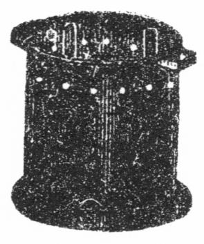
新工風万年スープ火鉢の図
台所の経済法は主人より聞得たり。
然れども小山はなおいまだ不満足の点なきにあらず「中川君、お登和さんのお料理も随分結構だがあんまり手数のかかるものが多くってちょいと試しにくい。手数が少しもかからんで
軽便に
美味いものを食べる
工風がないかしらん」と人の得手勝手には際限なし。中川も
張合なき顔して「それならば
生物ばかり
噛っているに限る。野蛮人種のように煮もせず焼きもせず、肉でも野菜でも
生で食べるのが一番無造作だ。しかしそれでも体内へ入って消化されるまでの手数はやっぱり同じ事だよ。体外で焼いたり煮たりしない代りに体内で胃と腸とが煮たり焼いたりするだけの手数をかけている。世が文明に進むほど体外の料理法へ手数をかけて胃と腸との手数を省いて遣るのだ。薩摩芋を食べるにしても
丸噛じりにすると消化の悪い繊維がそのまま腹へ入るから胃と腸とはそれを消化させるに非常の手数をかける。体外には
裏漉だの
擂鉢だのという便利の機械があって造作なく繊維を
除れるけれども胃と腸とは何の機械も持っていない。それへ手数をかけさせるのは気の毒でないか。体外の機械は段々進歩して軽便精巧な物が出来るけれども胃と腸とは古往今来いつでも同じ道具で働いている。
可哀想なものさ。体外の裏漉や擂鉢で筋を取ればその手数は料理する人一人だけで済む。食べる人は幾十人あっても
皆な体内の手数を免れる。その一人が手数をかけずに幾十人の体内へそのまま押込めば数十人の胃腸が尽く
大手数をかけるのだ。こんな不経済な事はない、あるいは
牛肉のバラーを三、四時間煮通してシチュウにしても胃腸へ入ってそれだけに柔くする手数を省いて遣るのだ。牛乳だってコップからガブ飲みにすれば手数がかからんで一番よかろう、その代り腹へ入って胃液のために
凝結したり、あるいは外の酸類に
逢て凝結するから胃と腸とがその
凝固を
釈いて消化させるまでに何ほどの手数をかけるか知れない。散々手数をかけてもよく消化し尽せないから沢山牛乳をガブ飲みにすると
下痢を起す。それを体外で少し手数をかけて何か料理に交ぜて使えば胃腸はそれだけの手数を免れるでないか。何でもその通り、料理の時少しく手数をかけると胃腸は大手数を免れる。料理の時手数をかけるのが
嫌いな人は胃と腸とに大手数をかけさせる事が好きな人だ、我が手足を
憐む事を知って胃腸を憐む事を知らない人だ。ちょこちょこと料理を済ませて生同様なものを腹の中へ押込むのは我が胃腸を虐待して
憚らざる人だ。
我邦には動物虐待廃止会が起ったけれども僕はそれよりも胃腸虐待廃止会を起したいと思う。西洋人の家庭ではどうして食物を
美味く料理しようと研究している。我邦の妻君は食物
拵えをさも余計な仕事のように
蒼蠅がってどうしたらちょこちょこと早く
副食物が出来るだろうと手数を省く工風ばかりしている。自分一人が手数を省くために亭主や小供やお負けに自分の胃腸までがどれほど余計な手数をかけるか更に頓着ない。実に野蛮だね。文明の世に生れて文明の何物たるを知らんのだね。僕は世間の心ない人たちから折々そういう苦情を聞くがアア浅ましいと思って歎息するね。文明風の料理法はなるべく体外の手数をかけて体内の手数を省くにありという事を忘れてはならんよ」と
頻に我が料理法を弁護する。
中川の説は言うべくして容易に行わるべからず。小山もなお反対の意見を抱き「中川君、道理上より言えばその通りに違いないが日本人の妻君は西洋人の妻君のように一日の仕事を料理の方へ
向られない事情がある。一例を挙げれば西洋人は二週間に一度か三週間に一度の
外風呂に入らない。日本婦人は大概毎日入浴して二
時以上ずつも顔や手足を
磨いている。それに日本の妻君は三日に上げず髪を結うという手数もある。だから自然と料理のことを嫌ってお
化粧の方へ手数をかけたがる。西洋人の家へ
往ってみると妻君はいつでも料理の研究かその話しをしている。日本人の妻君は寄ると
障るとヤレ
丸髷の
形状が
好いの、
何処の
髪結さんが結いました、私の髪結は
下手ですから今朝結ったのをむしりこわしてまた外のに結わせましたなんぞと一日に二度も髪を結って騒いでいる人もある。これではどうしたって料理の事へ心を向けられんよ」と弁護するのか悪く言うのかイヤに笑って我が妻を
顧みる。妻君も苦笑いして下を向くは折々二度の髪を結う
性と見えたり。主人の中川幾分か
笑を含み「そこだテ、西洋婦人だって身を綺麗にする心は日本婦人に劣らん。かえって一層盛んな位だけれどもその方法が違う。西洋婦人のは内部から皮膚の色を清潔にする主義でなるべく料理へ手数をかけて営養分の多い食物を喫して内の方から顔の色を出す。実際日本人が長く洋行していると色が白くなるのは多く食物の結果だ。日本婦人は外からばかり磨く、お湯に入って一時間も二時間も磨いて磨いて遂には顔の皮まで
摺り
剥く人があるけれどもそれがためにかえって食物の事を度外視して粗悪な無造作な手数のかからない
生煮の物ばかり食べるから顔の
光沢は内部から悪くなって青いような黒いような陰気な色になり、お負けに年を
積ると顔へ
汚点が出来たりソバカスが出来たりする。医学上の説によると汚点やソバカスは営養の不足から出来るのだ。大病の後に出来る人のあるのはその証拠だ。日本婦人が外から顔を磨いて内からの食物を閑却するのは目的と結果とが反対になる。顔を磨きたいと思ったら料理法を研究して食物で色を白くするがよい。西洋人は
滅多に入浴せんけれども毎日
襯衣を取かえたり、
夜具蒲団のシーツを
取かえるから
垢が身につかない。日本婦人は折角磨いた
身体を垢と油で黒光りになった夜具蒲団へこすりつけるから一晩で垢が付く。西洋婦人は髪の代りに帽子を
蒙るから帽子へ金をかけると万事こう違う。全体西洋婦人は食物の事を自分の一番大切な用事と信じて貴夫人が自ら馬車へ乗って食料品を買いに行く。東京市中の西洋食品屋へ往ってみても分る。西洋人の馬車が
店前に
停まって盛装した婦人が自分でハムの
片腿を下げている事も沢山ある。日本の貴夫人が食品屋へ入ったのは見た事がない。貴夫人でなくとも
御新造さん位の処でも買物は下女任せだ。外の品物は下女に買わせても食品ばかりは自分で買わないと品質に非常の相違があって金銭に
換えられん。西洋婦人と日本婦人とは
平生の
心掛がそれほど違う。料理に手数がかかるといって面倒がるような人は
亜弗利加の土人生活をするがいい。お登和なんぞは牛肉でも野菜でも
皆んな自分が往って買って来るよ」とこの様子にて
推す時はお登和嬢ほど家庭に徳用なる妻はなけん。かかる人を妻にする我身こそ幸福なれと座にありし大原満が
独りニコニコ恐悦顔。
未婚の人が結婚後の事を想像するほど愉快なる事はなし。大原満は今こそ愉快の
焼点に立てり。愉快度に過ぎて帰る事を忘れたれども小山夫婦が遅くなるとて
別を
告ぐるに自分独り留まらん事なり
難く、お登和嬢に心の
名残を惜しみつつ
夜に
入りて中川の家を出でたるが下宿屋へは足の進まずしてとかく心は
後方へ戻る「ウフフ、有難いな、こう早く事が
極まろうと思わなかった。最初の形勢では容易に中川君
同胞が承知しそうもなかったけれども案じるよりは
産むが安く、今では向うの方がかえって
此方より熱心だ。この近所へ家を捜そう、勝手道具は此方で買おうと中川君の意気組は大したものだ。これというのも全く小山君夫婦の尽力に違いない。小山君夫婦が僕のために中川君同胞を
説てその心を僕の方へ傾けしめたに違いない。さもなければ中川君はともかくも御本人のお登和さんがなかなか急に此方へ心の向きそうもなかったもの、アア持つべきものは朋友だ。小山君夫婦があればこそ僕にこういう幸福が来たけれども朋友の尽力がなければ僕の独力では到底お登和さんを得られない」と誠実なる人だけに朋友の
情誼を感ずる事深し。さりながらいまだ心に一点の安からざる所あり「だが待てよ、中川君の御両親は婚礼のためにわざわざ御出京なさるというから此方の両親も
郷里から
呼ねばなるまい。呼ぶも呼ばないもまだ何とも今度の事を申して
進げない。うっかり申して進げて例の方から故障でも起ると大変だから事の確定した後と思ってまだ何とも申上げなかったが、
最早これほどに確定した上は早速申上げて御出京を
乞わなければならん。何と申上げよう。別に
偽りを申上げる
訳にはならん。小山君という親友の御夫婦が御尽力で同じ親友の妹を
貰う事になった、その娘は料理もよく出来て誠に神妙な女だからなにとぞ御許し下すって婚礼の節には御出京を願いたいとこう申して進げるより外に仕方がない。それで御両親が
直ぐ御承諾下さるだろうか。例の一件がなければ親友の妹を貰うのだから
悦んで御承諾下さるに違いないけれどもあの方の事が心がかりだ。しかしまだ公然と僕へ対して
従妹を貰えと命令の
下った訳でもなし、
外の人へお話のあった訳でもない。ただ僕の推測に留まるのだからこれも案じるより産むが安く、向うの方は何事もなく済むかもしれない。どうかそう済ませたいものだ。
伯父様の恩になっているからその娘を貰えといわれては断りにくいけれども恩は外の道で返す方法がある。恩と婚礼とは別の事だからな。しかしこれが東京辺の風習だと親が息子に嫁を
強い付ける事も
寡いけれども
郷里の風では全く親の一量見で息子の嫁を
極めるのだ。当人同士の見合もさせずに親が
好いと思うと直ぐ
取極めて貰って来るという風習だからな。もしやお登和さんの事を御承諾がなかったらどうしよう。そうしたら僕も
殆どこの世に生存する張合がない。アア考えてみれば御両親の
諾否が僕の運命の
岐るる所。今こそ一大事の場合だ」と独りで思案しつつ下宿屋へ戻るに、下女が待兼ねたように差出す一通「大原さん、お郷里からお手紙が来ていますよ」「そうか」と大原手に取りて「ナニ大至急と」
大至急の手紙には
如何なる事を
言来りけん、大原はその夜
終宵懊悩して
寝もやらず、翌日も心の
苦みに堪え難くてや起きも上らで昼過ぐるまで床の内にあり。ところへ
訪い
来れる親友の小山先ずこの
体を見て眉を寄せ「大原君、また病気か」大原「イヤ病気ではない。少し思案に余る事があって寝ていて考えた」小山「アハハ大変な
考方だ。時に大原君
悦び給え。万事好都合で、好い時には好い事のあるものさ。君も知っているだろう、中川君の家の一軒置いた先に
門構の
小綺麗な家がある。あの家が今朝引越しさ。中川君がそれを見て
家主に聞いたところが今日明くのでまだ後の
借人は
極まらない。しかし割安の家だから直ぐに借人が出来るだろうといった。中川君は君のために適当な家を捜している所だし、あの家ならば殆ど注文通りだから君の承諾不承諾はともかくも外の人に借りられない内にと手附金を五十銭渡して君のために借りる事を約束しておいた。僕も今家の中を見たけれども
普請が新しくって間取が好くって実に申分がない。君だって不満足の
気支はなかろうが今直ぐ僕と一所に行って家の事を極めて来給えな」大原「ウムありがとう。ありがたい事は実にありがたくって僕も
昨日から君らの恩に
感泣しているがね、少々ここに困った事があるテ」小山「それは知っているよ多分金の事だろう。新に家を持つとなかなか金はかかるけれども少し位な事は僕の方で立替えてよし、それに中川君がお登和さんのために勝手道具や何かを買って遣るつもりだから君は
入婿同様大手を振って引越しが出来る。婚礼の事は延ばせても君が家だけ早く持っておかんと中川君の両親が
郷里から来た時下宿屋
住居の人に嫁に遣るとも言いにくし。君だってどうせ家を持たねばならんから適当の家があったのを幸い今日
往って見て明日にも
直ぐ引越しを済ませ給え。お登和さんはモー君の家の人になった気で
先の人の荷物が出てしまったら直ぐに自分が掃除に行きますといっている。勝手道具も中川君の家から不用な品を持って行くし、持って行かれないものは双方共通にしてもいいとお登和さんが一生懸命に世話を焼いている。それにしても君一人では当分の内不便だろうから
雇婆さんでも置かねばなるまい。僕の知った
桂庵があるからその方へ頼んでおこうと僕が今寄って来た。君の方は別にむずかしい支度はあるまい。机と
書笈と
夜具と
人力車へ
載せて笠の
破れた
洋灯を君が手に持って書生の引越のように車の後から
尾いて来ればそれで済むだろう。マアともかくも一遍
往ってその家を見て来給え。今頃は定めてお登和さんが
襷掛で
手拭を
頭髪へ
被って家の中を掃除しているだろう。お登和さんは実に働きものだよ。君の幸福
想い
遣られる」と今度は事が先方より進歩する。大原いよいよ感じたる如く「実にありがたい。お登和さんがそれほどに働いてくれる志は何ともお礼の言いようがない。しかし小山君、僕は実に困った事が出来たよ。
郷里から急に嫁の事を言って来てね」小山「ナニ、嫁の事」と驚き顔。
大原は心の
苦みに
堪えざる如く
幾度か溜息を
吐き「小山君、君の奥さんには先日ちょいとお話ししたが僕の郷里に年頃の
従妹がある。即ち本家の娘だ。その本家から僕は今まで学資を半分ずつ
助けてもらったが、本家の両親は行く行くその娘を僕にくれたいという下心らしい事は僕も先年帰省した時始めて推測した。僕の両親も多分その事を承知しているらしく思われる。しかし僕に向って今日までいまだ公然の発表もないから僕はその相談を受けない内に早く東京で嫁を
極めたいと思っていたのさ。最も去年中から卒業祝いに是非一度帰れと毎度の催促が来るけれども今帰るとその相談を受けるに違いないと思って帰らずにいた。
昨夜中川君の処からここへ帰って来て、モー
此方の事は極まったから郷里の両親へ委しい手紙を出して婚礼の承諾を
受たいと思っていたところ
郷里から至急の手紙が来ていよいよ従妹の一件を宣告されたね。モー少し早く僕が手紙を出しておくとまだよかったけれども
手後れになったため向うの方に先んぜられた。ここに手紙があるから読んでくれ給え。その通りの
言渡しだ、去年中から
頻りに帰国の事を申し
遣わして今か今かと待っていたけれどもそちらにも忙しい事があって帰れないというのは是非もない。今まで
和郎の帰国を促したのは
予ねて和郎と本家のお代さんとを婚礼させる事に話しが極まっている。和郎が帰国したら卒業祝いを兼ねて立派な婚礼式をさせるつもりだったが急に帰れないという訳ならばお代さんを東京へ連れて行って東京で婚礼をさせてもいい。和郎の方の都合でいずれにでもするから急に帰国するかそれとも
此方から東京へ出ようか、二つに一つの返事をしてくれろとこういう訳だ。ナント小山君、僕は実に困ってしまったよ」と正直なる男だけに途方に暮れて泣かぬばかり。小山も意外の
妨げに驚きけるが当人ほどに失望せず「大原君、しかしこういう事は本人同士の意向によって決するものだ。君がその事を不承知だといったら
強ゆる訳になるまい」大原「ところがね、東京
辺ならば本人の心を聞いた上という事もあるが、僕の郷里の習慣では
一切本人にお構いなし。親たちの心次第でサッサと息子の嫁を極めて本人の知らない処へ明日は
和郎のお嫁さんが来るよなぞと出し抜けに宣告される
風だからね。この手紙だって相談ではない宣告だ。異議の申立が出来ない宣告だ」小山「それにしても血族婚礼は生理上に害がある。モー一層社会が進歩したら
従兄弟同士の婚礼は法律上で禁ずるかも知れんという
有様だ。その事を君から委しく通知したら君の御両親だって
御諒解にならん事はあるまい」大原「それは随分諒解せんでもないが
何にしろ向うは本家
此方は分家、僕の母が本家から財産を分けてもらって僕の父を養子に貰った次第だから両親に諒解されても本家の人たちに諒解されんと両親もそれを拒絶する事が出来まい。随分事が面倒だよ」と
平生の元気も消え失せて
独り心を苦しむる。世間いまだかかる事情の
跡を絶たざるもあるべし。
親友の小山はかかる事情を聞きて今までの意気組も
俄に失せたり「大原君、それではどうするね」大原「サアどうしようと思って
昨夜から思案している。僕は
固より最初からその
従妹と婚礼する心はない。
殊にお登和さんの事が極まって中川君
同胞が僕のためにそれほどまで尽力せられると聞いては僕も
感泣してその恩に
酬ゆるつもりだ。それについては
郷里の方へ何といって返事を出したらいいか、その事に
苦んでいる。尋常一様の返事ではとても承知する
気支がなし。といって僕は
偽りを構えたり事を
工んだりするのは
大嫌らいだから嘘は言って
遣れず、ありのままの事情を述べて両親の反省を
乞うより外に仕方がない。ありのままの事情を述べれば郷里の方ではただ僕の
我儘だと思うばかりで正当の理由と認めてくれんからね」小山「しかし大原君、そこが少し我々と外の人と違う
処だて。我々文学者は社会の悪い風習や野蛮な旧慣を改良して
世人を善道に導かねばならん天職を持っている。父母の意見ばかりで我子の承諾もないのに嫁を決定するのは悪い習慣だ。お負けに血族婚礼は生理上に
乖いている。支那では同姓を
娶らずといった位だから昔風の老人にもその訳は解るだろう。君は社会を改良すべき文学者の天職としても生理上に乖いた悪い習慣に従う事が出来ん。文学者自ら人の道を実行する事が出来なければ
如何にして世人を感化し得るだろうと、第一にその点を述べて御両親に反省を求めたらどうだ。習慣に従うのと道理に従うのといずれが重いという場合である。外の人なら便宜上習慣に従う事もあろうが社会を改良すべき文学者の責任としてはどうしても道理に
従ねばならんという意味を委しく
書て
進げたらどうだね」大原「ウム、それも書くがね、その代り道理上からいえば父母の承諾なしに子が
肆に嫁を
定る事も出来ん。従妹の方を断ったために両親がもしお登和さんの事を不承知だったら僕は到底婚礼が出来ん」小山「それは感情から来るのだ。感情は多く道理と
背馳する。君がお登和さんと結婚すべき正当の道理があれば御両親もそれを拒絶さるべき訳はない。拒絶されれば間違った感情から来るのでそれは充分弁明しなければならん」大原「それがね他人の事だと弁明も出来るし
勧告も出来るけれども自分の事を親に向って道理だの理屈だのと言出しにくいからね。殊に僕は親だの伯父だのに向って反抗の言葉を
吐く事が出来ない性分で、たとえ自分の方に正当の理由があると思っても向うは長老の言う事であるし、自分よりも経験に富んでいるだろうし、自分の強情を張ると後に悔ゆる事があるだろうと思っても何でも長老の意見に服従する方が多い。だから僕の口より道理を争う事は実にむずかしいよ。誰か親類の人に僕の方の賛成者があって両親に説いてくれるといいけれどもそんな人もなしね」小山「僕が君の御両親を知っているとあくまでも
説付ける。けれども知らんから困る。ではこうし給え、今いった道理とお登和さんの事情とありのままに委しく書いてともかくも君の御両親に一応東京へ来て戴いて先ず本人のお登和さんをよく見てもらい給え、そうすれば従妹を貰ったよりお登和さんを貰った方が
遥に
優しだという事もお分りになるだろう。僕も君の御両親と御懇意になって一生懸命にお登和さんの事を勧告しよう。そこで話が
纏まればちょうど御両親御立会の上で
直ぐ婚礼も出来るからなお好都合だ。そういう風に手紙を出し給え」大原「なるほどね、そうしようかしらん」ととんだ苦境に
陥りしものかな。
ここは奥州の山の中、都を離れし
片田舎ながら村中にて指を折らるる大原の実家、家も
邸も手広くして人出入さえ多き中に去年当家の若旦那が大学校を卒業されて文学士というエライお方になられたげなと評判隣村にまで広がりしより取分け人の
訪い
来る事多く主人夫婦は応接に
遑あらず「イヤこれは八
兵衛さんよくおいでだね」八兵衛「ヒエー、マア今日もお天気で
好い
塩梅です。時に若旦那様はまだお帰りになりませんか。わしは若旦那のお帰りには花火を沢山
揚げべいと思って去年から
狼烟を十三本
拵えました。お帰りの日が分りましたらどうぞ早くお知らせなすって下さい」と語る
後方に若者の
権蔵「ヒエー、わしは若旦那のお迎いに一の関辺りまで参りますべいと思って、ヒエーまだお分りになりませんか」と誰も彼も
皆な若旦那の帰期を問わざるなし。この村より東京へ留学して仮にも大学校を卒業せしはただ一人、その一人のために村の名誉は隣村を圧するばかりと村中の人皆な大原学士のために一大祝典を挙げん事を思う。大原の父母も鼻が高く一々来客に接して
悴の事を
吹聴する。
後れて来りし
半白の老人大原家とは同格の家柄と見えて
横柄にツト庭先へ入り来り「ヤア今日は、
満さんはまだ帰るとも帰らねいとも分らねいかね。多分帰っては来めい。だから私は若い者を東京へ出すのがイヤだというのさ。
旨く行かなけりゃ途中で銭を
費って始末に
了ねい道楽者になってしまうし、旨く行って少しでも出世するとモー国の事を忘れてしまって以上たっても帰らない。それにな、東京で女に引かかるとモー
駄目だよ。悪い女でなくても東京で女房を貰ったら自分は帰って来る気があっても東京の女なんぞはこんな田舎へ引込む気はないからね。国の事なんぞは夢にも見なくなってしまうだ。満さんは本家のお
代さんと縁組するはずになっているそうだから国の事を忘れる
気支もあるめいけれど、こういつまでも帰らねいのを見ると何だか少し怪しいようだ。堅い堅いといったって東京には
好い女があるからなあ。この道ばかりはどうも別だよ。今頃はどんなものが出来ているかも知れねい。この村が海になろうと川になろうと
滅多な事で帰って来そうもないのう」と余計な事を言いたがるも村での
口利き、一度は村会議員に出たほどの人物なんめり。大原の父は少しく不平の色あり「イイエ悴に限って決してそんな事はない、大丈夫だ。あの通りぼくねん
人だもの」老人「それが
当にならねいだよ」ととかく何事にも反対する癖あり。折から門の
方より足音高くドシドシと入り来るは本家の娘お代さん。先に大原が小山の妻君に話せし通り、どんぐり
眼に
団子っ鼻、赤ら顔に縮れっ
毛、
大兵肥満の大女なれども鬼も十八の娘盛りとて薄黒い顔に
白粉をコテと塗り、太き地声を細く殺して「
伯母さん
今日は」と妙に気取って歩み来る。口の悪き老人その顔を見て笑い出し「イヨお代さん、大層おめかしだね。東京の満さんに嫌われめいと思ってこの頃はめかしてばかりいさっしゃる。だけどもお代さん駄目だよ、満さんは東京で
可愛い可愛い女が出来ているとよ」お代驚き「アラ、ホント」老人「アーニ、出来たろうと思ってよ。マア折角めかさっせい、さようなら」とイヤにクスクス笑って帰り行く。お代は今の言葉が気になる様子「
伯父さん、満さんはまだ帰らねいのう」とさもその帰りを待つ
如し。
村中の人よりも誰より彼よりも一番熱心に満の帰りを待ち
詫けるはこの娘なり。満がこの村より
出でて文学士というエライ者になりたるさえ村中
一統の
誉れなるに我身そのエライ人と縁組せんこそこの上もなき誉れぞと玉の輿に乗る心持「伯父さん、満さんはいつ帰るとも言って来ねいのう」と心持にそぐわぬ物の言いよう。伯父は
幾分か眉を
顰めてその
思慮無きを
疎んずる色あれども伯母なる人は
親身の
姪とてその
心根を哀れに思い「今度こそモー
直きに帰るよ。帰って来なければ
和女を連れて東京へ行く事になっている。今までは和女の事を何ともそういって
遣らなかったから満も帰る気にならなかったろうが、今度始めて和女の事をそういって遣ったからきっと
大悦びで帰って来るよ。帰って来なければモー何とか返事が来そうなものだ。返事の来ないのを見るときっと自分が帰って来るよ」とお代には何事も隠さぬと見ゆ。お代は厚き唇をまくり
挙げて嬉しそうに笑い「早く帰ればよいなあ」と後ろを振向きて思わず門の外を眺むるに門外より
入り
来れるはこの村の郵便脚夫、
背戸の方へ廻らんとするをお代がドタドタと庭口より走り出で「
何処から来たのう」と自分が手紙を受取りて伯父の前へ持ち来り「伯父さん、満さんの手紙よ。何といって来たろう。
読で御覧な」と礼儀も知らぬ
山家育ち。伯母も側へ来り「手紙をよこすようでは東京へ来いというのかしらん、何といって来て」と左右よりの催促。伯父も養子の身の上とて伯母に逆らうこと成り
難くてや封を
披きて二、三行読み
下し「エート東京
辺は追々暖気に向い
候えども
御地はいまだ寒さ
烈き
御事と
存候処御両親様始め御本家の伯父上伯母上お代どのまで御一同御無事に
御暮し
被遊候由何よりの御事と
奉賀候。次に小生儀も息才に
罷在候間御安心被下度候。さて先頃の御書面は委しく拝読
仕候。それに就き、ウムムウムム」と
俄に
口籠りて後は口の内、伯母は
戻かしく「帰るというの、帰らないというの」お代は失礼にも手紙の上に顔を突出して
覗き込み「マア長い手紙ね」と
窃に本文を読まんとするに伯父はクルクルとその手紙を巻いてしまい「アハハあんまり長いから奥へ持って行って
緩々読まなくっては訳が分らん。お代ちゃん、
胡桃餅でも
拵えてお
食りな」お代「胡桃餅なんぞ食いたくねい。満さんは帰えらないのう」と手紙の後を読まれぬが気にかかる。伯母も気にかかりて聞きたくはあれど老いたるだけに手紙の文のお代に聞かせ
難き事あらんを察し「お代や、胡桃餅を拵えよう。
和女鉄槌を持って来て割っておくれな。
丁寧に頭から割らないと中の身が取れないよ」と胡桃を前へ持出してお代とともに割りかける。伯父は奥に入りて我子の手紙を読み始めぬ。
細字にて
認めたる長文の手紙、中には議論文もあり歎願書もあり、
一たび読みおわりてまた繰返し、再び読みおわりて思案に沈み、「こういわれてみると
悴の言う所も無理はない」と両眼を閉じ腕を
拱きて黙然たり。横合より顔を出す伯母「満の処から何といって来たの」
○胡桃餅は奥州の名物にて鬼胡桃の実をよく摺り豆腐を交ぜ水に溶きて砂糖醤油を交ぜその中へ搗いたばかりの餅を入れたるなり。餅の代りに白玉を使うもよし。
○胡桃は蛋白質弐割八分、脂肪五割九分を有す。
妻に問われて
伯父なる人はその手紙を示し「満からはこういって来た。
従兄弟同士の婚礼は大層悪いといって西洋の学者が色々な証拠を挙げている、自分はいやしくも文学者となった以上には世間の人に
好い手本を見せて悪い習慣を
廃めさせなければならん、お代さんの事は誠にありがたく思うけれどもそういう訳だからどうぞ思い
留まって下さい、それに今の学説では遠方の人と婚礼するほど
良い子が出来るといっている、ちょうど自分の同学生の妹が去年長崎から出て来て東京で嫁入口を
捜がしているからその人を
貰いたいと思うが一応御両親にもその人をお目にかけて御許しを受けたいについてどうぞ父上様と母上様とで御出京を願いたい、自分もこの頃下宿屋生活を廃めてその同学生の住んでいる近隣へ家を持ったからお
両方が御上京になってもお宿を申すに差し支えないとこう書いてある」
伯母は聞く内に顔の色変われり「ソラ御覧なさい、
先刻杢兵衛さんの言った通りだ。いつの間にか東京でそんな女に
引かかってそれで何といっても帰らない。だから私が言わない事じゃない、去年卒業した時
此方へ帰らなければ此方からお代を連れて行って
直ぐに婚礼させなければきっと魔がさして
碌な事にならないとあれほどやかましくそういったでありませんか。それでなければ早くお代の事を言って
遣って満の心を
極めさせておくようにと私がヤイヤイ言っているのに、ヤレ今に帰るの、手紙では解らないのと今まで黙っていたからこんな事になってしまった。従兄弟同士の婚礼が悪いの
善いのといったってこの村では昔から他村の人と縁組をしない、
皆んな親類同士で縁組をするから大概な家では従兄弟同士が夫婦になっている。それが悪いとは聞いた事がない。ナーニ満が東京の悪い女に引かかってお代がイヤになったからそんな事を言うに違いない。イヤだといっても親たちが極めた事だ、今更何といっても承知するものか」と到底理窟はこの人の耳に
入らず。伯父は幾分か我子に対して同情あり「それにね、お代ちゃんがモー少し女らしいと無理に
勧めても構わんけれども、大学校を卒業した文学士の夫人としては少しどうも
不似合な処があるからね」伯母「何ですとえ、何とお言いです。お代が不似合ですと、
何処が不似合です。ちょうど従兄弟同士ではあるしこれほど
好く似合った者はないでありませんか。それに何でしょう、
貴老も承知してお代の事を極めたのでありませんか。今になってそんな事を言うのは満の
贔負ばかりしてお代を見捨てるおつもりですか。東京の怪しい女を
納れさせて満の嫁にするつもりですか。満は本家から半分ずつ学資を出してもらってそれで卒業も出来たのに今になってそんな事が言えた義理でしょうか。貴老だってよく考えて御覧なさい」と伯母の怒りは容易に
釈けず、伯父は
頻に伯母を
宥め「マアそう
一図に怒らんでもよい。ナニも満が私たちに黙って自分の好きな女を引入れたのでなし、ともかくも東京へ来て本人を見てくれろというのだ。私と
和女と二人で東京へ
往ってよく満とも相談した上にしよう」伯母「相談とは何の事です。これほど極まっている事を相談もナニも
要るものですか。東京へ往くならお代を一緒に連れて行って
直ぐに婚礼をさせましょう」伯父「お代ちゃんは後からでも呼べる」伯母「イイエ直ぐでなくってはいけません」と二人が頻に言い争う
彼方にヒーッと泣声の聞えて大きな
身体がドタリと
畳に倒れたる様子。伯母は顧み「お代やお泣きでないよ」と言えどお代はオイオイ泣きながら起上り、どんぐり
眼より大きな涙をポタリポタリ落して
我家の
方へ走り行く。
お代が本家へ帰りし間もなく、本家の父は
面相変えて大原の家へ入り来れり。お代の
言告口を聞きてよほど心の激昂しけん、足音荒くツカツカと奥へ
蹈込み来り「コレお国、東京の満から手紙が来たそうだ。その手紙を見せろ」と妹にまで怒りの声、伯母はハイと手紙を取りて兄へ渡すに伯父がそれ渡してはと争いかけしも力及ばず、本家の父
劇しく手紙を読み下し「ナンだこの手紙は。お代の事がイヤになった、東京に
好い嫁があるから来て見てくれろとは何の事だ。お負けに従兄弟同士の婚礼はどうのこうのと生意気な事を抜かしおって
体好くお代の事を断わろうとしている。満に学資を出して
遣って今まで勉強させたのは外の人よりなおよく親孝行をして我々の言う事を聞かせようと思うからだ。それが
反対に西洋にはこういう例があるの日本の医者がこういうのと悪い
言草の種ばかり覚えて今更お代をイヤがるとは
以ての
外だ。
己たちが相談ずくで
極めたのだ。イヤもオーもあるものか。満の返事次第でお代を東京へ連れて行こうとその
支度もしてあるがこんな様子では一日もうっかりしていられない。お代の荷物は後から出す事にして明日の朝
直ぐに
和女たちと一緒にお代を連れて東京へ行こう。暗い内に村を出て一の関まで車で飛ばせたら一番汽車の間に合うだろう。ナニ一応手紙を出すと。手紙を出すより自分たちの行く方が速い。一の関へ着いたら電報をかける。何でも構わないから明日行こう。明日の晩東京へ着いたら
明後日にも直ぐ婚礼をさせて、それから己たちは大阪の博覧会見物に出掛ける。今になってどうのこうのと満に何も言わせる事があるか」と本家の主人は分家に対して
無上権を有す。分家の伯母もその事に賛成なり「明日といっては急だけれどもぐずぐずしていられないからそうしましょう。ネー
貴老、兄さんの言う通り今になってどうもこうもありはしない。お代を連れて行って婚礼させればそれで
済むのでさあ。早くサッサと
旅立の支度でもなさいよ」と
頻りに伯父を
急き
立てる。伯父はいまだ思案にあまりて心進まず「だけども一応はよく満の心を聞いてみなくっては」伯母「貴老はよく満の心とお言いだけれども満の心よりもお代の心を察してお遣りなさい。満の方では今まで知らなかったかもしれないがお代の方では二、三年前から満のお嫁になる事を知っていて明けても暮れても満の噂ばかりしています。去年満が腸チブスとか何とかいう病気を
煩ったと聞いた時お代は毎日向う畑の
鎮守様にお百度を上げた位です。それが今になって満に嫌われたとなったらあの子がどうするか知れやあしない。力を落して病気になったら後で悔んでも
追付きません。それに満の方ではあの子がこんな
好い娘になっている事を知るまいからそれで東京の女が
好くなったのです。お代を東京へ連れて行って今の娘っ
振を見せれば満だってイヤと言うものですか」伯父「ウフフ、あの姿で東京へ連れて行った日には」伯母「ナニ」伯父「マアサ、東京へ連れて行ったら
和女にも分るだろう」と伯父は最初よりお代の事に心進まぬを伯母や本家の父母に
強いられて満の嫁に定めしと見ゆ。今は本家の手前争う事もならず、まして自分は養子の身の上
家付の娘に
逆らう事も
叶わねば言わるるままに
身支度して明日はいよいよ東京へ出発する事となれり。お代の
悦び一晩寝ずに顔ばかり洗いて濃き
白粉を
塗立てつらん。
故郷の
消息聞く
由もなし、東京なる大原満は小山夫婦と中川兄妹の尽力によりて近頃新なる家に引移れり。下宿屋
生活より一躍して仮にも一家の
主となれば
自ら心
寛ぎて何事も愉快ならざるはなし、勝手を働くは小山が世話せし
雇婆さん、これとて当座の間に合せ、今にお登和嬢の嫁ぎ来りて妻と呼び
良人と呼ばれん日とならば婆さんの代りに
小女を
抱え、三度の食事も総がかり、毎日御馳走を
拵えて楽しき月日を送らばやと主人の心は空想の愉快に充たさるる。雇婆さんはまだ勝手に
馴れず「旦那様、お昼の
副食物は何に致しましょう」大原は旦那様と呼ばるるさえ耳馴れぬ心地にて新なる尊称のように嬉しく感じ「オー婆や、お昼を何にしていいか僕にも分らんがの、
和女ちょっとお登和さんの処へ行って聞いて来てくれないか」と何事もお登和が頼り。雇婆さんもおかしく思い「オホホ、三度三度副食物の事をあのお嬢さんに
伺うのですか。お嬢さんもお大抵でありませんね」主人「だって僕に分らんもの。和女だって
副食物拵えは出来まい」雇婆「ハイ私には出来ません。私は以前奉公人を沢山使って台所へなんぞ出た事がありませんのに亭主が損をして
零落ましてからも娘を女郎に売るまでは万事娘任せで何にもした事がありません。だから御奉公するにしてもお留守番位なら出来るけれども水仕事は出来ないとよく
桂庵へ断わっておいたのです。ナーニ旦那お一人きりでお留守番の外に用はないと言いますから
此方へ上りましたが、
御飯炊や副食物拵えはとても出来ません」とかかる人物が年老いて人の家に雇わるるなり。主人も
呆れたように「道理で今朝の飯なんぞは
心があって
生米を
噛るようだ。お登和さんに聞かなければ何一つ拵えることも出来ん。その代り今にお登和さんが家へ来てしまえば三度三度
美味い御馳走を拵えて二人で仲好くお
取膳で食るけれども」雇婆「オホホお
楽みでございますね」主人「楽みさ、この位な楽みはないの、
和女が見たってお登和さんは
好い女だろう、あの位な女は
滅多にないだろう」雇婆「ホンに好いお嬢さんです。お
容色ばかりでありません。お気立がお優しくって御親切で
昨日も私に
半襟を買って下さいましたよ」主人「そこが和女の好いという処か。僕が今にあの人と夫婦になったらよく似合うだろう」雇婆「イイエ」主人「似合わんかね」雇婆「
貴君には過ぎています。あのお嬢さんならどんな好い処へでもいらっしゃれそうなものですのに貴君の処へいらっしゃるのは少しお
可哀想のようですね」主人「イヤハヤこれはしたりだ。しかし過ぎているような人を
貰うのだから僕は
幸福者さ」雇婆「お仕合せですとも。あのお嬢さんがいらしったら大事にしてお
進げなさいまし。粗末にすると
罰が当ります」主人「大事にするとも
真綿へくるんで桐の箱へ
蔵っておこう」と大原が心はこの言葉よりもなおお登和嬢を大切に思う。そのお登和嬢は今しも裏口より入り来り大原を呼ばずして先ず「婆やさん」と小さく呼ぶ。
末には我身の家なれども今はまだ他人なるお登和嬢、
男主人の大原に近しく言葉を交えん事も
憚りありて台所口よりそっと婆さんを呼び「婆やさん、今朝はどうでしたね、御飯が無事に出来たかね」と自分は婆さんに尋ぬる気なれど主人の大原が今はお登和嬢を
余所人と思わず、奥よりその声を聞付けて台所へ出で来り「お登和さん、マア
此方へお上りなさいな。ナゼそんな処に
立ているのです、ズット奥へお通りなさい。今も婆やを
貴嬢の処へ上げてお昼の
副食物を伺おうと思っていた処です。イヤモー貴嬢が一々教えて下さらなければ三度の食事も戴く事が出来ません。今朝なんぞは
心のある飯が出来て生米のような処もあるし、といってグチャグチャしてお
粥のようでもあるし、さすがの僕も閉口して食べられません。それでお釜の底の方は半分
焦げて狐色になっているのです。何という飯だか僕も初めてあんなものに出逢いました。婆や、ちょいとその御飯をお目にかけて御覧」と婆さんをして
飯櫃を持出さしむ。お登和嬢もツイその話しに
惹入れられて台所口より勝手の小座敷に入り何か風呂敷に包みたる皿のようなものを婆さんに渡して「ちょいと
其処へ置いておくれな。オヤマアこれが今朝の御飯かえ。オホホ、なるほど妙なものが出来ましたね。大原さん、
貴郎は今まで下宿屋の御飯を召上っていらしって急にこんな御飯をお
食りですからなおお驚きでしょう。下宿屋の御飯は大釜で沢山
炊きますからお米が少し悪くっても
美味しく出来ます。
小勢な
家では大きなお釜で少し炊くからどうしても美味しく出来ません。それに
薪の堅いので炊いたのと柔いので炊いたのとは火の通りが違って味も変ります。井戸の水で炊いたのと水道の水で炊いたのとは硬水と軟水ですから味も違いますし夏なんぞは水道の方が長く持ちます。
磨ぎたてを炊くと
硬く出来ますし、磨ぎ置きは柔く出来ます。水車で
搗いたお米はどうしても水分がありますから水を引かないで柔く出来ますし、機械や臼で搗いたのは水を沢山引きますからその加減をしないと硬く出来ます。これは水車のお米へ水を沢山張り過ぎて火が強かったり弱かったりした上に
幾度も
蓋を取って少しも蒸れなかったのでしょう」大原「蓋を取りましたとも。火を引くまでに婆さんが二十遍も蓋を取って中ばかり
覗いていました」お登和「オホホ蓋を取ってはいけません。蓋を取ると蒸汽が
漏れて御飯がフックリ出来ません。手桶へ水を汲んで蓋の上へ載せておく位です」大原「
何にしろ今日の飯には閉口しました。お負けに味噌汁が
淡くってお湯を呑むようで味も何もあったものでない。これにも弱りましたよ」お登和「味噌汁の淡いのはしようがありません。全体料理の心得に味噌汁は濃い加減に立てろ、吸物は淡い加減に立てろという事があります。味噌汁の濃いのはお湯を
注して淡くする事が出来ますけれど淡いのは始末になりません。吸物の淡いのは食塩を加えて直ぐに味を直せますけれども
鹹過ぎたのへお湯を注すとまるで味が抜けてしまいます。
鹹い田舎味噌は摺鉢で摺る時少しばかりお砂糖を
交ると美味しくなります。しかしそれは惣菜で上等のお料理には
鰹節で味を出さなければなりません」と得意の料理談になりければ我れ知らず腰を据えぬ。大原はいつまでも腰を据えられたし。
大原は何か
話頭を
惹出してお登和嬢を引留めたし「お登和さん、僕も朝は日本食事を廃してパンにしようと思いますが中川君は毎朝どういう風な食事をなさいます」お登和「兄ですか、兄は何でも食事法を変える事が好きで毎朝料理法が違います。十日まで毎日変って行って十日目にまた
後戻り致します」大原「それは大変ですね、十日が間毎日変ったものが食べられますか」お登和「食べられますとも。一月まるで変った物ばかり
拵える事も出来ます。季節によって色々に取かえますが
只今の処ではその月の一日には必ずオートミルのマッシを食べて
珈琲を一杯飲みます。これは
亜米利加風の
朝食で、オートミルとは西洋の
燕麦の
挽割にしたようなもの。それをお
飯の茶碗へ一人前なら八分目位前の晩から水へ漬けておいて朝起きると鍋へ入れて火にかけて食塩を少し入れて
沸立って来ると
杓子でグルグル
掻き
廻しながらよく煮る事が先ず四十分以上一時間位です。そうすると段々粘って固って
糊のようになります。それをスープ皿へ盛って牛乳とお砂糖をかけて食べます。どんなにお
美味うございましょう。今度拵えて差上げましょうか」大原「どうぞ頂戴、そのオートミルというものは
何処に売っています」お登和「西洋の食品屋へ行けば大概売っています。二
斤入か四斤入の
鑵詰になっていて私の使いました中では英国のモルトン製造所のが好いようです。サック入といって沢山袋入にしたのが亜米利加から来ていますが暖い時分には腐敗していけません。亜米利加で新しいオートミルを買って拵えますと一晩水へ漬ける世話もなし、湯を沸立ててその中へ
交ぜれば三十分で出来るそうです。けれども日本へ来ているのはヒネになっていますからどうしても長くかかります。
馴れない人は塩を入れる事を忘れて水っぽいものを拵えて味が悪いと言いますけれども塩加減が好ければ大層結構なものです」大原「それが第一日ですか、二日目は何です」お登和「二日目はパンの
餡かけと名をつけたもので先ず牛乳を一合沸かしてその中へ少しの塩かあるいはバターとお砂糖を入れて溶いた米利堅粉を加えてドロドロになった時火から
卸して
直ぐ玉子を一つ掻き混ぜます。それからパンを両面焼いて小さくちぎってスープ皿へ盛ってその上へ今の牛乳と玉子の餡をかけます。外の人はよくパンを牛乳の中へ入れて煮ますがそうするとパンの味が抜けてしまいます。今のような料理にしますとパンの味もあるし餡の味もあるし双方の味で一層好いようです。この日にはチョコレートへクリームを加えて一杯飲みます。外に
林檎か何か
菓物を一つ戴く事もあります」大原「それから三日目には何です」お登和「三日目は玉子と牛乳の
淡雪といいまして先ず大きな玉子の白身二つばかり
茶筅で泡の沢山立つまでよく掻き廻してそれを一合の沸立っている牛乳の中へ交ぜて一度よく混ぜますと牛乳が白身へ交って白い泡がフーッと盛り上ります。それを
網杓子で西洋皿へ
掬い取ってもまだ半分ほど牛乳が残っています。今度は二つの黄身へ塩と砂糖を交ぜてそれを牛乳の中へ掻き混ぜるとちょうど好い加減に固まりますから、それを掬い取ってお皿の上の白い泡へ載せます。いかにも綺麗で味も結構です。その外にこの日はパンへバターをつけて少し食べて
錫蘭の紅茶を飲みます。この淡雪を拵える時白身の
釈きようが足りないといけません。
細い泡ばかりになればすっかり釈けたのですが大きな泡がフクリと出て来る内はまだよく釈けないのです。白身を釈くのはよほど気長にしないといけません」大原「白身は茶筅で釈きますか」お登和「沢山の白身なら西洋風の車の付いた玉子釈きもあります。和製の針金の網棒のようなものもありますけれども二つや三つなら茶筅で沢山です」
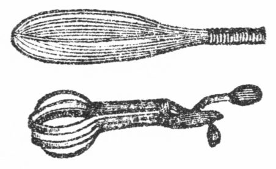
玉子の白身を泡立たる器械の図
○オートミルは西洋にて滋養分多き食物と称せらる。即ち蛋白質壱割弐分、脂肪六分、含水炭素五割四分ありて米および麦に優れり。
○玉子の白身が全く泡になる時はその器を倒さにして落ちず、これを度とすべし。
○玉子の白身は原と泡の如き小球より成立つものなり。故にこれを釈き泡にせしむれば大に消化を良くす。何の料理にも本式は多く白身を釈きて泡となしその上にて黄身と交ゆるなり。
○オートミルは弐斤入一鑵四十五銭、四斤入七十五銭なり。
○チョコレートは一斤七十五銭、クリームは一鑵弐十八銭なり。新鮮なるクリームは牛乳を一夜皿に置き上面へ浮きたるものを取るべし。
朝食の種類も多きものなり。大原は珍らしそうに「それから四日目は何です」お登和「四日目はタピオカかあるいはセーゴです」大原「タピオカというのは先日中川君も胃病の
食餌箋の話しにお言いでしたが何です」お登和「
印度の穀物でタピオカもセーゴも似たものです。一時間ばかり水に漬けておいて鍋へ牛乳を沸かしてタピオカを入れて塩と砂糖で味をつけて三十分間ばかり煮ると
葛のお
粥のようなものが出来ます。あるいは先へお砂糖を入れずに出来てからそれへ砂糖とクリームをかけて食べても結構です。セーゴもその通りです。セーゴの方が粒の小さいだけ早く出来ます。
孰方も食品屋にありますから今度買って来て差し上げましょう」大原「どうぞ願いたいもので、その朝は何をお飲みです」お登和「この朝はココアを飲みます。ココアもチョコレートも同じようなものですが、チョコレートはココアへバニラなぞを加えて精製したもの、それを削ってお湯で煮出しますが、ココアの粉になったものは直ぐに牛乳へ混ぜて煮出します。味も
幾分か違います」大原「ヘイなるほど、五日目の朝は」お登和「先日差上げた玄米のマッシです。それに豆入の麦湯を飲みます。大麦の黒く
炒ったのと大豆のよく炒ったのと半分ずつ交ぜてよく煮出したのです。私どもはそのまま飲んでも味が大層好いようですが兄は牛乳かあるいはクリームを加えて飲みます」大原「六日目は」お登和「ジャーマン・トーストと申して牛乳と玉子をよく溶き混ぜて塩とお砂糖を加えてそれへ焼きたてのパンを
浸しておきますと十分間ほどで大きく
膨れます。フライ鍋へバターを敷いてそのパンを両面とも狐色になるほど焼いてそれへまた少しの牛乳をかけて食べます。もっともそのままでも食べられますが牛乳をかけた方が
喉の通りが好いのです。飲むものはまた前の
珈琲に戻ります」大原「七日目は」お登和「ロールオーツと申して
燕麦の
潰したものをオートミルのようなマッシにしたのです。オートミルよりも少し早く出来ます」大原「八日目は」お登和「ポークエンドビーンスといってサザキの
湯煮たのと塩豚とへ蜂蜜を加えて蒸焼にしたのですがこれはちょいと
素人に面倒です」大原「九日目は」お登和「コーンミルと申して
玉蜀黍のマッシです」大原「十日目は」お登和「十日目は日本風の朝食で、味噌汁に御飯で
沢庵のお
香物を食べます」大原「沢庵もお
食りですか、あんな不消化なものを」お登和「ハイ日本の御飯には沢庵は是非必要です。お米は全体秘結させるもの、大根は下剤ですから双方がちょうどよく調和します。それに不消化物を沢山食べてはいけませんが折々は固いものを少しずつ食べると胃筋の働きを助けます。鶏が茶碗の
破片だの小石だのを食べて食物をこなすように胃の機械的作用が食物を砕く時中に固いものが少し交っているとかえってよくこなれます。だから沢庵だとかスルメだとか
蒟蒻だとかいうように固いものも折々は少しずつ食べる方がいいそうです」大原「なるほど色々な事があるものですな。僕も今に
貴嬢がいらしったら毎日の朝食を取かえるようにしましょう」と嬉しそうに嬢の顔を眺むる。嬢は
俄に顔を
紅くして勝手口へ逃げ
出さんとす。
○チョコレートにはミルクと砂糖を混じ鑵に入れたるものも食品屋にあり。それを湯にて溶き直ちに用ゆるを得。
○玉蜀黍は滋養分多きものなり。かつ蚕豆豌豆等より消化良し。その上等は蛋白質壱割二分、脂肪四分五厘、含水炭素六割一分なり。
○味噌汁は前にも言える如く滋養分多く、その上等は牛乳に優れり。甘味噌よりも鹹味噌の古きもの善し。
○鯣は不消化なれども蛋白質は六割九分、脂肪は三分にて滋養分多し。
○蒟蒻は蛋白質一分三毛、脂肪八毛、含水炭素六分四厘七毛、繊維三厘、鉱物質三厘六毛にて一種の粘液素に富む。
○タピオカ一斤十八銭、セーゴ十二銭なり。
○ココア一斤七十五銭。
○ロールオーツ弐斤入四十銭なり。
逃出されては
張合なし。大原は熱心に呼留めて「お登和さん、まだ色々
伺いたい事がありますからモー少し遊んでいて下さい。ここへ引越の時
貴嬢のお家から分けて下すった醤油がモーなくなりかけましたから一樽買おうと思いますが醤油はどういうのが良いのですか」と用事を問われてお登和も
無下に去り
難く、再び台所へ腰を掛け「そうですねー、私どもではお吸物に使うのと煮物や掛醤油に使うのと別々にして二色のお
醤油を買っておきます。醤油を買う時にはよく気を付けて検査しないと折々人の悪い小売屋が
偽物を持って来ていけません。
亀甲万をくれろとか山サをくれろとか言っても外の下等の醤油を亀甲万や山サの樽へ詰め換えて知らん顔をして持って来ます。ですから一々その
度ごとに検査しないと同じ印でも以前の品物と変っている事が毎度あります」大原「それは
怪しかりません。全く商人の徳義心が欠乏して信用という事を重んじないからそんな悪策をするのですね。しかし醤油を一々検査して以前の品物と違うか違わないかという事を見出すのは随分面倒でしょう」お登和「イイエ簡略な検査法は少しも面倒な事がありません。一つ試してお目にかけましょうか。婆やさん、
其処の棚に一合入の
正宗の
壜の明いたのがあるね。それをよく洗ってお
醤油を半分ほど入れてお酒の
燗をするように
鉄瓶の中へ入れてよくお湯を煮立たせておくれ。それからね、ちょいと横町の酒屋へ行って悪い醤油を一合買って来ておくれ」と遂に再び台所へ上り込みて自ら火鉢の火を
煽ぎ「大原さん、お醤油は何処の台所でも一年中使うものですから簡略な検査法位知っていなければなりません。
極く無造作な事です。
硝子壜へ入れてお酒の燗をするようにしてよく
湯煎にして見れば
直ぐ分かります。コラ御覧なさい、モー出来ました」正宗の壜を鉄瓶より抜き出して明るき方へ透して見「大原さん、お
醤油の中へ白いような雲のようなものがいくつも出来ましたろう。ちょうど
真綿をちぎって
撒いたように壜の中へ沢山見えます。これが
蛋白質の
凝結で上等の醤油ほど多く出来るのです。醤油の
質によっては真綿のようでなくって白い筋が糸のように沢山現われるのもありますし、小米を撒いたようになって
雪降の景色に似たのもあります。いずれにしても蛋白質の多いほど上等の品ですが悪い醤油は何時間湯煎にしても極く
僅より蛋白質が現われません。極く下等なのは少しも蛋白質の凝結がなくっていつまで煮ていても中が透通っています。見た時はかえって
綺麗ですけれども品物は極く悪いのです。オヤちょうど婆やさんが悪いお
醤油を買って来ましたから湯煎にして比べて見ましょう。婆やさん、そのお醤油を外の壜へ入れて鉄瓶の中へ入れて下さい」と新しき醤油を湯煎にして抜き出し見るに更に何の凝結も見えず、壜の中は透明にして湯煎にせざる時に同じ。お登和嬢二つの壜を並べて大原に示し「この通り違います。色々な種類の品を一度に試験すると
皆んなそれぞれ違ってよく分ります。ですから新しい樽を買った時には必ず最初に五
勺ばかり壜へ入れて古いお醤油も五勺ばかり壜へ入れて一つの鍋の中で一緒に二つの壜を湯煎にして同一の温度で試験します。同じ印の醤油で同じ品物なら蛋白質の凝結も同じように現われますがもし一方のが
偽物だと蛋白質が多くありませんから
直に分ります。その時はいつでも偽物を小売屋へ突戻して上等の品物に取換えさせます」とかかる検査法を一々台所にて施されなば不誠実なる小売商人は泣くものあらん。
○醤油の上等は蛋白質八分四厘以上あり。中等の品は蛋白質四分一厘なり。下等の物はいよいよその量を減す。蛋白質の多少は主として原料たる大豆の良否に因る。
○醤油の醸造期限は気候の関係上土地によりて大差あり。銚子の醤油は十七か月にて出来、野田の物は二十二か月を要す。
○醤油の外に溜りと称するものあり。名古屋辺または京坂地方にて料理に用ゆ。大豆のみにて製したればその味濃厚にて刺身照焼煮物等によし。殊に数の子を漬けるに妙なり。上等の品は醤油の上等よりも価高し。尾州産および三州田原の産を有名とす。
小売商人の徳義心なきは歎ずべしといえども食品を買う者も常に自ら注意して品質の良否善悪を択ばざるべからず。大原
頻に感心し「お登和さん、
醤油の検査法は実に妙ですな。こうすれば誰にでも直ぐ分ります。以来は醤油を買う時に必ず検査を施しましょう。オヤオヤ今の蛋白質が段々底の方へ
沈澱しますね、こうした醤油は食べるのに
差支ありませんか」お登和「別に差支ありません。一度
湯煎にしたのは長く置いてもカビが生えません」大原「そうですか。こう手軽に検査が出来れば
狡猾な商人に
偽物を押付けられる
憂もありませんがモット精密に検査する法がありますか」お登和「精密に検査すると第一が香気、第二が
味、第三が足といって粘着力の三点を調べなければなりません。その外に色の濃いのと
淡いのとありますが濃いのは
醸造の時高い温度を与えたので、その代り香気が幾分か減じます。味といっても
鹹い
中に一種の甘味がなければなりません。足というのは
醤油の粘着力で醤油が利くと利かないとはこの粘着力にあるのですから大切なものです。下等の醤油やあるいは上等の偽物は甘味と粘着力を加えるためサッカリンといって砂糖より四百倍甘い薬品を交ぜて
素人を
欺しますが、純粋の醤油は全く上等の豆と麦から出た甘味と粘着力でなければなりません」大原「全体
醤油の原料は何です」お登和「大豆と麦と塩が
重なる原料です。大豆は
常陸の
赤莢といって土浦近傍から出るのを全国第一としてあります。麦は
相州藤沢近傍のが最上等です。常陸の豆と相州の麦と播州の赤穂塩とで醸造した醤油でなければ最上等の品になりませんが近頃の粗悪品は支那の豆でも朝鮮の豆でも
価が安ければドシドシ使う風ですから段々品が悪くなって
醤油の本味を失なうためにサッカリンの
付味をするようになったのです。食物を料理する時には第一に原料を択ばなければなりません。醤油が悪いと折角骨を折っても味がよく出来ません。世間の人は
直段さえ高く出せば上等の品物が買えると思って更にその品質を検査しませんけれども徳義のない商人の
跋扈する
世中では決してそう参りません。あの家へは何を持って行っても済むと思うと高い直段を取って悪い品物を売付ける事が毎度あります。醤油は一家族の人が毎日口へ入れるものですからよくその直段の高下と品質の善悪を調べておかないと一年中の経済になかなか相違があります。一番良い方法は最初に少し
路が遠くっても極く確実な商人から上中下色々の醤油を五種か六種位少しずつ買って今の蛋白質検査法を施してどの醤油は蛋白質が何ほどある、上等品と下等品とはこれほどの差があるとよく
記臆しておいて今度外で醤油を買うときに一々それと
対照せて見るのです。
飲酒家の家族は毎日お酒の
燗をしますから
稀に醤油の燗をして検査する位何の手数でもありません。また同じ印の醤油を二、三軒の小売店から買って一緒に試験すれば
何処の店の品が本物で何処のは偽物だと分ります」と家庭の経済を
掌るものは常にかかる事を注意せざるべからず。大原は何を聞いてもお登和嬢の講釈がありがたく「それがやっぱり食物上の智識を
蓄えるのですね、今の世の妻君にその智識を蓄えている人は滅多にないが
貴嬢に台所の経済をお任せ申したら少い入費を以て
美味しい御馳走を食べる事が出来ますね。アア有難い実に有難い。僕は何という幸福者でしょう。国から両親が出て参って貴嬢の御馳走を食べさせたらさぞ
悦びましょう。両親もモー一両日中に出て参ります。
此方の手紙が
昨日向うへ着く勘定ですから今夜か明日は返事がありましょう。両親がいよいよ出て参ると知れましたら貴嬢に一つ腕を振って出来るだけの御馳走を拵えて戴くのですね。是非どうぞ願いますよ。オヤ表へ誰か来た」と振返る時配夫が門口へ立って「大原さん、電報」
○大豆は最も滋養分多き植物にしてその上等は蛋白質四割二分、脂肪壱割三分、含水炭素弐割三分なり。
○小麦の上等は蛋白質壱割四分、脂肪一分二厘五毛、含水炭素六割八分なり。
電報の
封紙は
忽ち大原に
披かれたり「ナニ、今日夕方その地へ着くと。ハテナ、
何処から出たろう。一の関の
停車場だ。お登和さん、僕の両親は
昨日手紙を見て今朝
直ぐに向うを出発したと見えます。きっと
貴嬢の事を申して
遣りましたから
大悦びでどんな人だか早く顔が見たいと老人の気忙しく、取るものも取りあえず向うを出たのでしょう。
昨夜出て一の関へ泊りましたか、それとも今朝
闇い内に一の関まで
駆け
付けましたか、一番汽車へ乗れば晩の六時頃上野へ着く勘定ですが日本一の不規律鉄道、時間通りに着く事は
当になりませんから、多分七時か八時頃になるでしょう。そこで貴嬢にお願いがあります。今夜両親が着きましたらば何よりの御馳走に貴嬢のお手料理を食べさせて思い入れ感心させたいと存じますが、どうぞ一つ腕を
揮って出来るだけの大御馳走を拵えて下さい。今日はカロリー表なんぞを応用してはいけません。老人ながらも僕の親たちです。田舎で一升飯を
平げる勢いですから沢山の品数を用意しなければなりません。願くはどんな大食家にも食べ切れないほどの大御馳走を拵えたいと思います。日本料理でも西洋料理でもあるいは支那料理でも品数の沢山出るのは何でしょう」と親たちに向って前代未聞の
饗応をするつもり。お登和嬢も折角の頼み
黙し
難く「そうですねー、品数の沢山出るのは支那料理です。上等の御馳走は三十六
碗といって三十六品のお料理が出ます。その上の大御馳走となれば六十四碗のお料理が出ます」大原もさすがに驚き「ヘイ、三十六碗だの六十四碗だのとそんなに沢山出ては
如何に大食の僕でも少々閉口しますな。支那人はそれを
尽く食べるのですか」お登和「食べるのです。その代り六十四碗の御馳走となれば
一箸一匙といって一品を一箸かあるいは一匙より余計は食べないと極めてあります。それでも六十四碗を少しずつ食べたら、
腹が張りましょう」大原「張りましょうとも。三十六碗でも随分沢山です。全体それは何と何が三十六碗になるのです」お登和「支那料理の本式は何でも四
色ずつ出るので、先ず生の
菓物が四色、即ち芭蕉の実に
林檎に
蜜柑に
竜眼肉というようなもの、それから
乾した菓物が四色、それから
西瓜の種に
南瓜の種松の
実に
杏仁といって
杏の種とその四色を四
瓜子と申します。その次に四冷菜といって
家鴨だの豚だの冷えた料理が四色出ます。西洋料理のコールミートのような者ですね、それから四大碗といって、魚肉鳥肉を盛った大碗が四色、四中碗といってこれも野菜と肉類を色々に料理したのが四色、四大盤といって
東坡肉やら
海参やら
鴿のようなものを盛ったのが四色、四点心といってこれは
魚鳥や豚の肉と野菜とを固めたような料理が四色、それだけを食べてしまうと四
大海といって
汁物が出ます。これは西洋料理のサラダが出るような場合で一番最後の御馳走です。これで三十六碗になりましょう。この外に四
鹹菜といって
香の
物が四色出ますから
皆んなで四十品です。御飯も
乾飯に
稀飯といって固い御飯とお粥のようなものと二色出ます。ナンボ
貴郎でもそれを残らず食べ尽す事は出来ますまい」大原「とても出来ません。しかし僕の両親へ御馳走する時には食べても食べなくてもその三十六碗だけ並べて見たいものです。どうでしょう。日本料理で三十六品のお料理を拵える事は出来ますまいか」と
臍の
緒切っての大奮発。
お登和嬢も行末は我身の親とすべき人を
饗応するなり。なるべくは田舎に珍らしきくさぐさの料理を用意して新来の客に満足せしめたけれど時間の迫りしが何よりの当惑「大原さん、支那料理の三十六碗を
拵えるには四、五日前から用意しなければなりません。何ぼ急いでも今から晩までに三十六品のお料理を作る事はとても出来ませんね」大原「出来ない処を無理にでも出来るようにして下さいませんか。何でも極く手軽なお料理ばかりで品数さえ揃えばいいのです」お登和「それにして人の手が足りません。宅の下女を連れて来て手伝わせてもまだ間に合いません」大原「では小山君の宅へ行って奥さんと女中を頼んで手伝ってもらいましょう。僕も
停車場へ向いに行くまで何でも手伝います、どうか一つ御奮発なすって下さいませんか」お登和「それではこうしましょう、台所も
此方ばかりでは
狭過て仕方がありませんから宅の台所と此方の台所と両方を使って宅の方では兄に手伝ってもらいますし、此方へは小山の奥さんや女中をも呼んで戴きましょう。それにしてもどういう風に三十六品の献立をしましょうか、それがなかなか大変です。エート、やっぱり支那料理に
傚って四
色ずつとしましょうか。先ずお吸物が四色、お魚が四色、お酒の
肴にちょうどよいものが家に沢山ありますから、それを四色、豚のお料理を四色、牛肉と鶏肉のお料理を四色、野菜を四色、お米のお料理を四色、手製のお菓子を四色、
菓物の煮たのを四色とそれでちょうど四九三十六品になりますね。その外にお
香の物を四色取揃えて
椎茸の御飯でも炊きましょう」大原「どうぞそうして下さい。それだけ揃えば両親もさぞ
悦びましょう。では早速小山君の処へ行って奥さんと女中を頼んで来ましょうか」お登和「ハイ、私も原料を買出して参りましょう。三十六品の
中でお酒の肴にすると申した長崎のカラスミ、鹿児島の
鰹の
煮取り、
越前のウニ、小田原の
塩辛、これだけは宅にありますから直ぐ間に合います。それから
先刻此方へ持って来ましたのはお昼の
副食物に差上げようと思った牛の舌のシチュウと
独活の
酢煮ですがあれがまだ宅に沢山出来ておりますから持って参って晩の御馳走に加えましょう。お昼はお香の物位で
我慢なさいまし」大原「イエ昼飯は食べずにいましょう。僕も晩の大御馳走をお
招伴しますからなるたけ腹を減らしておきます。先刻持って来て下すったのはタンシチュウとウドの酢煮ですか。
婆や、その頂戴したものをここへ出してお見せ。なるほどこれがタンシチュウですな、これはどうしてお拵えになるのです」お登和「これは先ず牛肉屋から牛の舌を買って十分間ばかり水へ漬けておいて塩をつけてゴシゴシ洗うと牛のヌメリがよく取れます。それから深い鍋へ湯を沢山入れてその舌を一時間半位よく
湯煮てザラザラした厚皮を手で
剥くと中から柔い肉が出ます。それを二分位の厚みに
截って湯と一緒に極く少しの塩を入れて
弱火へかけてザット二時間位煮ると肉が
柔になります。そこで先ずジャガ芋と薄く切った大根と
人参とを入れるのですが人参が多過ぎると臭くなっていけません。宅ではその外に
蒟蒻も入れます。それが三十分ばかり煮えた処で
玉葱か普通の葱を加えますがそれはその時の
見計いでいいのです。そうして塩と
胡椒とバターで味をつけて三十分ばかり煮て
翌日まで置きます。さて食べる前にまた火へかけて
葡萄酒を少し加えて
赤茄子のソースを
交ぜて
米利堅粉でその汁を濃くするのですが略式にすれば加える物を
減しても構いません。牛肉のバラーをシチュウにしてもその通りですがこれは最初湯へ入れてから二時間ほど煮て野菜を加えてまた一時間煮ます。シチュウには上等の羊の肩肉が一番結構です」と相も変らず料理談。
○鰹の煮取りは一名煎じという。鰹節を湯煮たる液を煎じ詰めたるなり。
○カラスミは鰡の子なり。
○ウニはカゼといえる貝の卵巣なり。
○塩辛は鰹魚の腸なり。ソーダ鰹より製したるは色黒し。
○独活は半日ほど水に漬けてアクが抜けたらば別段湯煮こぼさざるもよし。また独活は蛋白質一分六毛、脂肪一厘、含水炭素二分四厘七毛、繊維七厘、鉱物質五厘七毛にて九割五分一厘は水分なり。
書生上りの大原も一家の主人となりてより今はよほどに
世帯じみてお登和嬢の料理談に耳を傾く「そこでこの
独活の
酢煮はどうしたのです」お登和「それは独活を一寸ばかりの長さに切って、一度
湯煮漏して塩とお砂糖と
味淋と酢とでよく
柔になるまで煮たのです」大原「そうですか、シチュウも酢煮も大層
美味そうで今戴きたいけれどもマア晩の御馳走に取っておきましょう。ところで僕は早速に小山君の家へ奥さんと女中を頼みに行って来ましょう。今日は日曜日で小山君も在宅でしょうから都合がいい。
貴嬢は
直ぐにお料理の方へ取かかって下さいますか」お登和「ハイ私も家へ帰って第一に料理の取調べを致します。家にあるものはそれを使うようにしてなるたけ余計な物を買わないように致しましょう」と
余所事に思わぬ経済主義、大原も心嬉しく「そうなすって下されば何より有難い。僕の両親に貴嬢のお料理を御馳走して貴嬢の御親切なるお志を知らしめたらばさぞかし
悦ぶ事でしょう。日本一のお嫁さんだといってどんなに嬉しがるかしれません。僕は実に幸福者です。世界中に類の
寡い幸福者です。アアありがたい」とあまり露骨に語り出されてお登和嬢急に顔を
紅くし半分は聴かぬ
振してサッサと我家へ帰り去りぬ。去られても今は惜しくなし。大原は留守番を婆やに頼みて家を出で料理方の加勢を乞わんと親友なる小山の家に到れり。小山夫妻は今しもちょうど大原の噂をなしいたる所なり「大原君、今日はね、日曜日だから僕とワイフと二人で朝から料理の研究を始めたところだ。
美味い物を沢山
拵えて君の家へ持って行こうと思っていた。君もお登和さんと婚礼してしまえば美味い物が食べ
方題だけれども今の処ではさぞ不自由だろうと
思てワイフが一生懸命に御馳走を拵えるつもりだ。時に大原君、
郷里の方はどうなったね、君の方からモー手紙を出したかね」大原「ウム、その事について君の奥さんに御加勢を願うつもりで
遣て来た。僕の手紙が
昨日郷里の方へ着いた訳だが僕の両親は手紙を見ると大悦びで直ぐ
出発て来たと見えて今晩
此方へ着くという電報が来た」小山「そうかねそれは大層急だ。御両親お揃いで御出京かね」大原「そうだろうと思う。僕の父の名で電報が来たから
委しい様子は分らんけれども多分母も一緒だろう」小山「御一緒なら結構だが、しかし君のいう通り君の手紙を見て大悦びで来られるのか、それとも外に訳があって急に御出京だか、少し
其処に疑問がある。そんなに急ぐほどの事でもなし、一応君の方へ御返事の手紙が来て引続て直ぐに御出京というのなら訳が分っているが、少しは御支度もあろうに取るものも取り
敢ず
俄の御出京は少しどうも気になるね」と
傍観者の
眼より
視れば疑わしき点を認めらるれども事に当る本人は心の悦びに判断力も空想と変じぬ「イヤ大丈夫だ。僕がよく解るように血族結婚の弊害とお登和嬢の事とを書いて送ったから父は必ず賛成するに違いない。母の方は自分の身内だけに向うへ
贔負をするかも知れんが東京へ来てあの
天女の
如きお登和嬢を見れば誰だって賛成しない人はなかろう」小山「アハハ君の眼からは天女に見えても
猜疑という
色眼鏡で視られると天女が悪魔と思われる事もあるからね。しかしマア君の御両親だからそんな事はあるまいが僕のワイフに加勢を
乞うとはどういう訳だ」
大原はお登和嬢と相談の結果支那料理三十六碗の献立を応用して三十六品の料理を作らんため応援を乞いに来たりと物語りぬ。小山も
頷き「それは大奮発だ。
劈頭第一にお登和さんのお料理を御両親へ差上げるのは至極好かろう。後にお登和さんを説明する上において
大に力ありだ。ちょうど幸いな事がある。僕の家でも今日料理研究のために十余品の御馳走を
拵えているからこれを
悉皆持って行ってその献立中に加えよう。第一が菓子だ。君一つこの珍菓を
賞翫してくれ給え、今出来たてだ。ナニ
頗る妙だと、妙に違いない。手製の珍物だもの。それはね先日僕のワイフがお登和さんに教わった薩摩芋料理の一層進化したものだ。即ち薩摩芋を
湯煮て塩と砂糖で味をつけて
裏漉にしたものが中身さ。衣は湯煮玉子の黄味と
小豆の
餡とをおよそ半分ずつ
摺り
交ぜて味をつけたのだ。誰の家でも出来る。形は
円くでも長くでも手で丸めれば自由自在だ。芋の菓子というと下品に見えるが
黄金芋とでも名を
命ければ味も上品で上等の席へ持出せる」と
頻に自慢をいう
傍から妻君が小さき皿へ
羊羹の如きものを載せて出し「大原さん、
杏の羊羹を一つ召上って下さい」大原「ナニ杏の羊羹と。これは大層お綺麗ですな、見たばかりで
美味そうです。一つ
頂戴、ウム実に
美味い。これはどうしたのです」妻君「それは
乾杏を煮て拵えたのです。舶来の上等か信州物の上等で色の柿色のような
透き通るような
綺麗な柔いのでなければいけません。色の黒ずんだ
硬いのではいけません。その上等の乾杏を鍋へ入れて沢山の水にして弱い火で二時間ばかり煮てお砂糖を加えて一時間ばかり煮ますと
溶けるように柔くなります。その杏の
液を裏漉しにしてゼラチンで寄せたのです」大原「ゼラチンとは西洋
膠ですね、先日僕もお登和さんから聞きました」妻君「ハイそうです。ゼラチンを三枚水で濡して柔になった処を杏の液一合へ入て少し煮立ると直に溶けます。それを火から
卸して直ぐに
葡萄酒を少し加えて四角な鉢へ移して水の中で冷しますと寒い日なら一時間位で固ります。これこそ極く上品なお菓子でしょう」大原「なるほど上品この上なしです。それではこの羊羹をお菓子四色の中に加えて煮た杏を果物四色の中に加えると二色の役に立ちますね」小山「そうし給え、一挙両得だ。時に大原君僕が今妙な菓子を作るから見てい給え。ソラこの通り大きなスプーン匙で米利堅粉を六杯
掬うだろう。粉が大サジ六杯だと砂糖が中匙六杯さ、それに塩が小匙一杯にベーキングパウダーが小匙二杯さ」大原「ベーキングパウダーとは何だね」小山「即ち
焼粉さ、西洋菓子の膨らんでいるのはこの粉が入るからだ。食品屋に売っているよ。焼粉がなければ
炭酸曹達と
酒石酸を交ぜて焼粉の代りにしてもいい。この粉とカステラ鍋と菓子型さえあれば大概な西洋菓子は出来る。今日のはカステラ鍋を使わずに普通の火鉢でも七厘でも
容易く出来る西洋菓子だが今の品物へ大きな玉子を六つ加えて粒のないようによく溶くのだ。この溶き加減が少々むずかしい。
柔過ぎてならず、固過ぎてならず、固過ぎたら牛乳を加えてもよし水を加えてもよし、柔過ぎたら粉を加えるのだ。全体なら粉と焼粉とを
篩って玉子も黄身と白身と別に溶いて白身を一番後に入れなければならんが僕のは略式だ。ソラ出来たろう、ドロドロのものが。これで僕がワッフルを焼いて
進げる」大原「ナニ、ワッフル、あれは大好きだ」
○ゼラチンにて固めたる菓子を型より抜出す時には先ずちょいと型を湯に入るべし。その温気にて型と菓子と分離するなり。
小山「君のいうワッフルは菓子屋で売っているジャム
入だろう。あれはジャム入ワッフルといってこの原料よりモット玉子を多くして
焼粉を少くしてワッフル型という鉄板の型で皮を焼くのだ。それへこの上等
杏を入れれば
直ぐ出来るけれども僕が今拵えるのは純粋のワッフルだ。即ちジャム入らずでカステラのような味だ。ここに
円い
形のワッフル鍋がある。中が四つに仕切って高いボツボツが出て
両蓋になっているがこの鍋はまだ
滅多に売っていない。食品屋へ頼むと横浜から取り寄せてくれるが
鋳物だから
価は少し高いけれどもこれさえ一つあると、普通の火鉢で軽便に出来る。見給え、この中へラードという豚の
脂を
刷毛で塗るが外の油でも構わん。中匙で今の原料を
掬って四つの
扇形の仕切りへ一つずつ落して上からピタリと蓋をして強い火で二、三分間焼くとソラ中でジュウっと
膨らむ様子が分るだろう。今度は
火箸で円い蓋の端を強く押すと円形の鍋が自分でクルリと裏返しになって両面を自由に焼ける。モー出来上った。この通り両面とも狐色になればいい。五分間かからんでワッフルが一度に四つ出来る。一つ食べてみ給え、極く淡泊な味だろう。甘くも
鹹くも好き自由になる。僕はこれへチョコレートを煮て加えたり、あるいは
胡麻を加えたり、レモンを加味したり、バニラ、アルモンド、シンナモン、ナットメックなんぞと色々な味をつけて
楽みにするが家庭の
慰みには極く好いよ。
殊に大きな小供のある家では小供たちに自分で拵えさせるとどんなに
悦ぶだろう。味も淡泊で膨らんだ品だから餅菓子や駄菓子のように腹へ毒でなし、食べるという事の外に拵えるという楽みがあってこの鍋を一つ与えると
買食なぞを
止してしまうね。ソラこの通りまた出来た。いくつでも訳はない。お客の顔を見てからでもお茶菓子が直ぐに出来る。菓子屋の菓子を買うと折々
昨日の
蒸返しを持って来たり、腐った玉子を使ってあったりして気味が悪いから僕の家ではなるべく手製の菓子ばかりをお客に出す。それにはこのワッフルが一番軽便でいい。
我邦の子供は悪い習慣でとかくに買食が好きだ。衛生に悪い事も構わず、兵士の残飯で出来た駄菓子だの、危険千万な
色付菓子だのと毒になるものばかり食べたがるが、たとい親がその事を厳禁したくも外の子供と遊ばせなければイザ知らず、近所
合壁の
腕白息子と友達になってはどうしても絶体的に買食や
間食を禁ずる事が出来ん。ところでこういう軽便な器械を買って与えると男の子も女の子もともに悦んで毎日拵える。自らそのために料理の法も覚えるし、普通の日本菓子のように甘過ぎるものを腹へ入れて胃を壊さずに済む。原料も精選が出来る、それを食べる時間も毎日一定して親たちが監督する事も出来る、自分で菓子を作る事を知っていると外の菓子をねだらない、お客の前へ小供が
馳出して
阿母さんアレなぞと菓子皿へ指をさすのはあんまり見っとも
好い事でない。かつ自ら食するものは自ら作らねばならんという自営心をも養うから僕は子供のある親たちによくこのワッフル鍋を
勧めるよ」大原「僕も今にお登和さんと婚礼して子供が出来たらこの鍋を買って与えよう」小山「アハハ大層長い話だ」大原「しかし乳を離したらモー食べさせていいだろう」小山「イヤそれはいかん。
乳離れの子には禁物だ」大原「
何故」
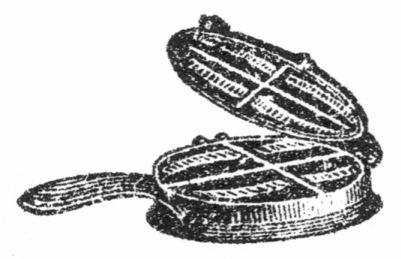
ワッフル鍋の図
○チョコレートやココアをワッフルへ加えんとするには一旦煮たる者に限る。煮ざる者は中にて溶け出す。
○焼粉は二十五オンス入一鑵六十銭なり。
○バニラとアルモンドは香料なり。
○バニラ一オンス入三十銭、アルモンド同四十銭なり。
○シンナモンは
肉桂の粉、ナットメッグは
肉豆
の粉。
○色付菓子には危険のもの多し。青き色には緑青毒の混じたるあり。紅き色には砒石の混じたるあり。坊間に販売する染色料の唐紅は多量の砒石を含有するを以て最も危険なり。安菓子にこれを用いたるものあり。また小児の玩具にこれを塗りたるもあり。
○小児の玩具に色を塗りたるは最も危険にて往々舌にて舐め中毒を起す事あり。紅き色と青き色が最も悪し。
○砒石の中毒は羽毛筆などにて喉をくすぐり食物を吐かしむるが応急の手当なり。その後生玉子を飲み、医士の投薬を待つべし。
世には
小児の食物に注意する人
寡し。
然れども小児の発育は主として食物の良否に関す。食物を精選せずして小児の発育せん事を望むは肥料を与えずして我が麦の大ならん事を祈るが
如し。食物を精選するは先ず食物に関する智識を養うにあり。世間の親たちよ、
鶯の
摺餌を作る事が非常にむずかしきものと知らば小児の食物は一層大切なる事を
懐え。小山は我が説の誤解せられん事を憂い「大原君、
膨らんだ物が腹へ入って小さくなるから小児にいいといってもバターや焼粉を入た西洋菓子だのビスケットだのというものは
乳離れの小児に極く悪い。何となれば焼粉は
酒石英だの
曹達だのと薬品が交っているから小児の胃に堪えられない。軽い菓子がいいと信じてビスケットなぞを小児に与えては甘い菓子よりなお悪い。乳離れの
赤児にちょうどいい菓子は僕が今拵えて
進げるよ。お徳や、例の軽焼餅を持っておいでな。大原君、この軽焼餅は別製だぜ。僕が餅好きだから折々拵えさせるが、先ず関東一という
越ヶ谷の
糯米を
糠のついたまま決して水で洗わずに
碾臼で粉にさせる。もし洗えば
天日で干すと
碾きにくいから水を切って
塗物の箱へ入れて乾かすのだ。それを蒸す時は水で少し
捏ねてそれをサラサラするようにほごして蒸す。よく蒸してそれから臼で
搗くが
手水を少しも入れずに砂糖を少し
蒔いて少し搗いては砂糖を交ぜまた搗いては交ぜ段々に砂糖を交ぜて最後に餅の
真中へ残りの砂糖を入れて四方から餅で包んでそれを搗き抜く。手速くしないと冷めては搗けない。砂糖の分量は糯米二升に百四、五十
匁だね、それに少しの塩を加える。そうして
海鼠形に取って
直ぐに薄く切って干すが外の物へ並べるとベタベタ着いて取れない。干す物はアンペラに限る。それを焼くとソラこの通りよく膨れるだろう。非常に膨れる。これが即わち別製の軽焼餅だ。糯米は滋養分も多いし、
一旦粉にしたものを蒸して搗いたから消化もよし、非常に膨らんで大きく見えても実際の分量は少いし、これこそ乳離れ以後の小児に最も適当だね」と軽焼を沢山鉄網に載せ置きて客の方を向き「全体
我邦に小児用の食品がないのは衛生上の大欠点だ。
拠なく
塩煎餅や玉子煎餅を与えるが悪い菓子屋では腐りかかった玉子を材料に使うから随分危険だし、塩煎餅も腹へもたれる、外に品質の適当な物があっても味が甘過ぎて小児に毒だし、よく考えてみたら親たちは一日も安心が出来ないはずだ。しかるに百年も安心な顔をしている親たちが多いから不思議さ。その癖目白の
摺餌を一々
衡器にかける人はあるけれども
小児の食物に注意する人が
寡い。小児の食品として今の処ではこの軽焼が一番だと思うね。既に上流社会の
和子様たちは
下谷の名物風船あられといってこの軽焼の精製したものを召上ると申す事だ。風船あられに色々の種類もあるが特に小児用として製したのがいい。しかし小児用適当の食品が一種や二種では心細いね。食品製造に従事するものは
奮て天下のために衛生上の良品をドシドシ製出すべしだ」と夢中になりて火鉢の上を
顧みず。妻君が勝手より出で来り「アラ
貴郎、軽焼が
焦げてしまうではありませんか」
○この軽焼餅を製するは熟練を要す。第一湿し加減と蒸し加減がむずかしくして適度に湿しよく蒸さざれば搗けず。搗く時少しにても水を加うべからず。砂糖を手水の代りに振まくなり。搗上りたるものは即座に薄く切るべし。柔き処を切るは熟練を要す。干すにも天日にてなるべく速に干上ぐべし。雨天ならば火気にて遠方より干すべし。この軽焼餅はテンピかカステラ鍋の中にて狐色になるまで焼くをよしとす。
○風船あられは下谷区東黒門町七番地東英堂にあり。
半ば
焦げたる軽焼煎餅は大原の前に供せられたり。大原はもっともらしく
賞翫し「なるほどこれは軽くって
美味い。今にお登和さんと婚礼して小供が出来たら
乳離れ時分に必ずこの軽焼を
拵えよう。それから小供の衣服も在来の日本風は大学のベルツ氏が竹の子着物と悪く言った通りで
甚だ小供の発育を害する。
付紐で腹を
括りつけるから日本人の男女は大きくなってもいわゆるベルツ氏
溝という溝が腹の真中に出来ているそうだ。してみると最初から洋服で育てなければならんが小児用の洋服を売っている所があるまいか」小山「そうさねー、横浜の八十九番へ行けば小児用の品物は何でもあるが東京では近頃
素人の家で小児用の洋服を仕立てるものが沢山あるよ。現に僕の親戚の女の子は最初から洋服で育てたが手足の発育が非常に速くってちょうど六か月目にはズンズン
匍匐出すし、丸一年にはドシドシ立って歩いた。大人になれば日本服でも衛生上の害は
寡いけれども発育盛りの小児は是非とも洋服にしなければならん。しかるに今の世は
阿父さんが洋服を着てシガーを吹かして西洋然としているのにその小児は
天保時代の日本服へくるまって手も自由に働けず足も伸ばせない有様だ。阿父さんは西洋料理の進歩した食物を食べる癖に
小児は天保度以来少しも改良せざる塩煎餅や餡ころ餅を食べる有様だ。こんな間違った事はない」大原「なるほどそうに違いない。僕も小供は最初から洋服にしよう。君の御親類に見本があるなら今度一つ借りてくれ給えな」小山「ウム借りて
進げよう。しかしまだ生れないではないか、生まれないどころかまだ婚礼も済まないのに小供の
衣服も手廻しが早過ぎるね」妻君も側にて笑い出し「オホホ、その位に手廻しをなさる方がよろしゅうございます。私が嫁に参る時母が古い
浴衣を沢山くれましたから何にするのだと聞きましたら小供が出来た時おむつにすると申されました。嫁入道具におむつがあるのも
早手廻しでしょう」大原「なるほどね、そんなものですかしらん、僕も今からおむつの用意をしておかなければなりませんね。時に小山君これで菓子は四色揃った。外にまだ何かあるかね」小山「あるともあるとも、
蜜柑の丸煮が出来ている。お徳やあれを一つ進げて御覧」妻君立って台所より煮たる蜜柑を皿に盛り来る。大原何でも遠慮せずして口に入れ「これは結構。皮ぐるみ丸で煮たのだね。少しも苦くない所が妙だ」妻君「その苦味を取るのが少し面倒で、最初幾度も幾度も
湯煮漏して苦味が全く抜けた時分に
味淋とお砂糖を加えてよく煮詰めるのです。蜜柑でも
金柑でも気長によく煮ればこういう風になりますよ」大原「これも沢山ありますならば四色の菓子の
中へ加えたいもので」妻君「お加えなさいとも。それからまだ牛肉のロース焼も二、三日分と思って沢山拵えましたから差上げましょう。牛肉はロース焼にしておくと
何時でも
副食物になってどんなに便利でしょう。牛肉屋から
脂の寡いロース肉かあるいは三角肉を買って大切のままブリキ箱へ載せてカステラ鍋へ入れて塩を振りかけて二時間も
蒸焼にすると訳なく出来ます。お弁当のお
菜には極く調法ですよ」とロース肉をも持出し来る。主人の小山はなお客に誇りたき事あり「大原君、牛肉のついでに僕は牛肉の
味噌吸物を拵えたから差上げよう。ちょうどモー
正午だ。これで一緒に食事をしよう」と妻君を
促して
昼食の用意にかからしむ。
○ロースを焼く時よく塩を浸み込ませるよう折々蓋を取り、下にある汁を匙にて肉の上へかくべし。箸にて二、三か処孔を穿ちそれへ汁を注ぐもよし。
○小児の洋服は東京銀座弐丁目伊勢幸にあり。
昼食の用意は
忽ち
調いぬ。妻君が持出す吸物鍋「
貴郎、少しその火鉢へ載せておいて下さい」と軽々しく取扱うを見て大原不審がり「奥さん、見馴れないお鍋ですね。台所のお道具が一新しましたか」妻君「ハイ残らず改めました。先日中川さんのお話を
伺って
銅鍋や
青銅鍋は気味が悪くなりましたから銅製の
食器を全廃して西洋鍋を買いました。西洋風の鉄鍋は勿論、ソース鍋、フライ鍋、スープ鍋、二重鍋、色々な鍋がありますけれども西洋鍋の中には日本風の火鉢や七厘へかけるのに工合の悪いのもありますからこの節
流行るアルミニューム製の鍋も買てみました。これがその鍋です。綺麗で軽くって変色もせず
緑青も出ないといいますから大層便利です。大原さんアルミニュームというのは金属だそうですけれども紙より軽い位ですね。不思議ではありませんか」大原「それは非常に軽いそうです。ただその金属の接合法が発明されないので広く行われませんがもしも接合さえ出来れば鉄の代用品になって何事にも用いられましょう。第一軍艦や汽船をそれで製造すると大利益です。
仏蘭西では小さい軍艦を製造してみたそうです。この金属は妙な特質があって外の金属が
尽くレントゲンのエッキス光線に不透明であるのにこの金属ばかりは最も透明です。アルミニュームでレンズを拵える事が出来たらエッキス光線の写真が取れると研究中だそうです。今出来ている鍋や皿のような物はプレッス即ち
圧搾器で圧し出したものですね。軽い事はこの上なし、外国ではアルミニュームの名刺が流行するといいます。道理でそのお鍋を大層軽そうにお持ちなさると思いました。ところで牛肉の味噌吸物はどうしてお拵えなすったのです」妻君「これは
普通の落し味噌のように、
鰹節の出しを沢山取って、それへ三州岡崎の八丁味噌を落して
実には牛の赤肉と米利堅粉と玉子の白身をよく叩き交ぜてお団子にしたものを入れてありますが、牛肉は
清し
汁へ入れるよりも味噌汁へ入れた方が良い
様ですね」と功能を並べながら吸物を盛りて出す。膳の上にはなお数々の御馳走あり、主人の小山が自慢顔「大原君、
牛蒡の柔煮を遣ってみ給え。それは最初昆布を入れて牛蒡を二時間ばかり
湯煮たのだが昆布を入れると妙に柔くなるね」大原「そうかなあ、竹の子と昆布と一緒に湯煮ると双方ともに柔くなる事は聞いて居たが牛蒡にも利くかね。なるほど柔い、牛蒡が舌で潰れる」妻君笑いながら「だけども大原さんは柔い物がお嫌いだったでありませんか」大原「イヤモーあの時から急に好きになりました」妻君「オホホ、しかし牛蒡なんぞはあんまり柔くすると味が抜けるようです。その蓮根の
梅干和を召上って下さい」大原「これもやっぱり薩摩芋の梅干和を衣にして蓮根の煮たのを交ぜたのですか。蓮根が大層白くって
綺麗ですね」妻君「それは蓮根の白煮といってお米を
磨いだ
白水で湯煮るのです。その時木で押えておかないと、白水の外へ出た所が黒くなります。湯煮た蓮根を塩とお砂糖で煮たのです。そっちの
慈姑の揚物はどうです。それは慈姑を
山葵卸しで卸して米利堅粉と玉子と塩とで味をつけて油で揚げたのです。この品々も
皆んな沢山ありますから晩の御馳走にお加えなさい」と期せずしてここに十余品の料理あり。
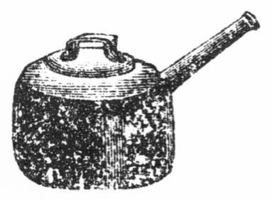
ソース鍋の図
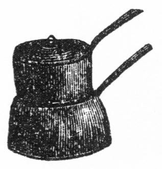
二重鍋の図
○牛肉の代りに鳥肉または魚肉を本文の如く団子にしてもよし。
○牛蒡は蛋白質三分二厘、脂肪一分三毛、含水炭素弐割六厘一毛、繊維一分九厘四毛、鉱物質八厘二毛あり。
○昆布は蛋白質七分一厘一毛、脂肪八厘七毛、含水炭素四割七分七厘、鉱物質弐割一分二厘にて多量の沃度を含む。
○蓮根は蛋白質一分七厘、脂肪八毛、含水炭素壱割八厘六毛、繊維八厘四毛、鉱物質一分一厘三毛なり。
○慈姑は蛋白質四分二厘七毛、脂肪二厘、含水炭素弐割四分、繊維四厘五毛、鉱物質一分四厘四毛にて滋養分蓮根牛蒡に優れり。
三十六品の
献立に大原は図らざる援兵を得て
昼食を済ませし後小山の妻君と下女とを伴い急ぎ我家へ帰り行きぬ。大原の家には
最早お登和嬢が自分の家の下女とともに材料品を買い来りて今や支度の真最中。小山の妻君も
甲斐甲斐しく
襷をかけて台所の
手伝を始め「お登和さん、何から先へ致しましょう」お登和「そうですね今豚を
湯煮ていますがこれが出来ましたらば豚料理を拵えましょう」妻君「豚のお料理は何と何が出来ますか」お登和「今日は
豚饅頭を拵えましょう、豚饅頭にも色々ありますが、今日のは豚のロースといって赤い肉を細かく叩いて少しの
胡麻の油と塩と
玉葱あるいは
葱と一緒にまた叩き
交ぜて置いて、それから
米利堅粉をお酒で
捏ねて柏餅の皮の様な皮を拵えて豚を包みます。それを食べる前によく蒸すのですが温かい処をお客に出して酢醤油をつけて薬味を添えて食べるのです。支那人は御飯の代りに沢山食べるそうです。また牛肉の生をこうしてお饅頭にしても結構ですよ」妻君「それは調法ですね。私も折々拵えてみましょう。ここに竹の子がありますがこれはお
湯煮になりますか」お登和「ハイそれは皮を
剥かずに
糠を水へ交ぜて湯煮るとエガ味がとれて
柔になります。また
唐辛一つと
昆布とを一緒に入れ長く湯煮ても唐辛で竹の子のエガ味がとれますし、昆布で竹の子が柔になります。竹の子は一旦鍋へ豚の
脂肉をジューと摺りつけたものでよく
炒りましてそこへ豚の湯煮た肉を少さく切って入れて少しお湯をさして味淋と酒と醤油で味をつけてよく煮ます。豚と竹の子のお料理は
美味いものですよ」妻君「それからまだ豚のお料理が出来ますか」お登和「ハイ、その次は三段肉の湯煮たのへ醤油と酒で味をつけてよく煮ておいて別に
蛤を油で炒って豚の中へ交ぜてそれへお豆腐と大根を加えてよく煮るのです」妻君「妙なお料理ですね、モー一つは」お登和「モー一つはハムを薄く切ってフライ鍋へバターを敷いてハムを焼いてお皿へとってその
跡で玉子を半熟に焼いてハムの上へ載せたのがハムエッグです」妻君「それで四色出来ます。ここに
雛鶏の肉がありますね、これは何になさいます」お登和「それは二色に使います。一つは
緑煮といって細かく切った肉を酒と味淋と醤油でよく煮ましてそれから湯煮た青豆を入れてまた煮て溶き
葛でドロドロにします。モー一つは支那風のシャウ
鶏と申して
腿の肉を
大切のまま胡麻の油で炒ってそれへ酒と醤油を
幾度も塗りつけては火の上で焼くのです」妻君「色々変ったお料理が出来ますね。お魚も色々出来ますか」お登和「ハイ、
比目をお
刺身にして
梅干酢で出すつもりです」妻君「梅干酢とは」お登和「梅干の肉を
裏漉しにして
摺って
酢を交ぜたのです。急ぐ時には小皿の酢へ梅干の肉を掻き交ぜてもよいのです。それから鯛の
塩辛煮といって
鰹のしおからを湯で煮出してその汁で鯛の切身をよく煮たのです。大層味が良いものです」妻君「ヘイ妙ですね、この
鰆は」お登和「それは焼いて玉子ソースをかけるのです。玉子ソースは先ずバターを鍋で溶かして米利堅粉をいためてそれへスープと玉子の黄身と塩と酢を交ぜて
弱火でよく掻き廻しながら濃くなった時火から
卸して
柚の絞り汁を加えるのです。柚の代りにレモンを使えばなお結構です。それを焼いた鰆へかけて出しますが外のお魚へかけてもようございます。それからムツも買ってありますからこれは小さく切って塩を振って大根卸しと一緒に酢へ漬けておいて柚の皮をすりかけましょう」と台所は料理に忙がしし。
○豚饅頭には支那風にニンニクと木耳とヤエナリ小豆のモヤシとを豚肉に交ぜ米利堅粉にてツナぎたるがよし。薬味にもニンニクを刻む。
○豚饅頭を蒸す時湿りたる布巾を下に敷き別々に並べざれば互に粘着す。皮は真中を厚く端を薄くす。
○豚饅頭に生肉を用ゆるは蒸す故に蒸汽消毒を行うと同じ功能あればなり。
○豚は蛋白質壱割四分、脂肪弐割八分位なれどもハムにしたるものは蛋白質弐割四分、脂肪三割六分に増加す。ハムは滋養分多し消化も良し。
○竹の子は孟宗竹にて蛋白質三分二厘八毛、脂肪一厘三毛なれどもその蛋白質中の七割は純粋の蛋白質にあらず。
○竹の子を糠にて湯煮ても昆布にて湯煮ても火を引きたる後釜の中へ冷ゆるまで蒸らしおくべし。これ大切なり。
○蛤は蛋白質壱割三分、脂肪八厘一毛、鉱物質一分八厘八毛あり。
○大根は蛋白質一分八厘、脂肪五毛、含水炭素二分七厘三毛、繊維六厘八毛、鉱物質四厘六毛あり。
○鶏は腿の肉が味最も好きなり。
○比良目は蛋白質壱割九分、脂肪四厘七毛あり、比良目と鰈は魚類中最も消化の良きものなり。
○鯛は蛋白質弐割ありて滋養分略比良目に同じ。
○この塩辛煮に用ゆる塩辛は秋田県新屋産を良しとすという。
○鰆は蛋白質一割九分、脂肪一分六厘。
○ムツは蛋白質一割七分、脂肪六分二厘。
○竹の子は昆布若布あるいはヒジキ等の海藻類と共に煮る時は化学作用にて双方共に柔くなりかつ消化を良くす。
お登和嬢らのお蔭にて御馳走の用意は
荒増しに
整えり。大原時計を眺め「オヤモー四時過ぎだ。時間通りに来れば六時に汽車が着く勘定ですから僕はソロソロ上野の
停車場まで出迎いに行って参ります。小山の奥さん、これでモー大概の用意は出来ましたね。お
膳やお皿は中川君から借りて来たしと
外に
入要の者は何だろう。オーそうだっけ、僕の家にはまだお客の
夜被蒲団が一つもない。両親が揃って来ると二人前
要る訳だがこれに困りましたね」小山の妻君「私の宅まで取りに
遣れば一人前だけはありますがもしや中川さんで拝借が出来ると都合がようございます。
如何でしょうお登和さん」お登和「ハイ、家にも一人前はございます。外にモー
両組新しいのがありますけれども」と少し考えて貸さんとも言わず。小山の妻君早くも推測し「なるほど、
貴嬢のお
嫁入支度に今度出来たのですね。お嫁入の時まで使わずにおきたいとお思いでしょうがどうせ大原さんの家の物になるのですから中川さんにお断りなすってそれを
此方へお廻しなさい。お国の御両親もそれをお聞きなすったらこれほどまで事が運んでいればモー何も言う事はないと早く御承知なさるかもしれません。それに台所道具だって残らずお登和さんがお持ちなすったりお買いなすったりなすったのだし、外の
世帯道具も大原さんがお買いなすったものは
滅多にありますまい」大原「滅多どころですか、一つもありません。僕が下宿屋からここへ引越して来た時何でも入要な品は残らず揃っていて
雪隠に紙まで入れてあったには驚きましたね」妻君「それも
皆んなお登和さんのお世話ですからよっぽど大切にお思いなさらなければいけません。オホホお登和さん、そんなにお
羞かしがりなさらないでもようございますよ。外の事はともかくも夜具蒲団の事はどうでしょう、
外ならぬ大原さんの
親御さんにお
被せ申すのですから
跡でお気味の悪い事もありますまい」と
頻に頼まれてお登和も拒みかね「それでは宅へ戻って兄に聞いて参りましょう。ある事はちょうど
両組揃ったのがございますけれども」と
独りで家に帰り行く。大原は父母の出迎いに行く事とて礼義正しく
袴を着し
羽織を
被「小山の奥さん、それでは何分
願ます。夜具の事は大丈夫ですかね」妻君「エー大丈夫ですとも。お登和さんの方で御都合が悪ければ損料を借りるともどうともしてお間に合せ申します」大原「それではちょっと
往って参りますよ」と家を
出でて車にも乗らず、路程もあまり遠からねば例の重き足を
曳ずりて
停車場へ
赴きぬ。着車時間は迫りけれども停車場内
寂として急に汽車の着すべき様子も見えず。大原は待合室に入りて人を待つ間の
手持無沙汰に独り未来の事を想像する「アア愉快だな、実に愉快だ。御両親が御着き遊ばしたらズーットお車へお乗せ申して家へ着くと直ぐ例の三十六品の料理が
更る更る出て来る。御両親もさぞお驚き遊ばすだろう。どうしてこんなに用意が出来た、料理屋からでも取ったのかとおっしゃったら、イイエそうではございません、一つ残らず手製なのでと料理法の説明を申上げる。それでモーお登和嬢の価値は
荒増分るだろうが、ともかくもどんな人だか
逢ってみたいとおっしゃってそれからお逢わせ申したらさぞお
悦びになるだろう。ウフフ有難い、我身ながら天より幸福を授かったのだ」と妄想は常に自分勝手。
自分勝手の妄想は到る処に行わる。今や上野に着せんとする汽車の二等室内には大原家の一行五人が
毛布を
畳み
鞄を締め、網棚の物を
卸し、帽子の
塵を払いて下車の支度をなす中に心の急かるる大原の母は
姪のお代に向い「モー向うに見えるのが浅草の十二階というものだよ。私が先年東京へ出た年にちょうどあれが出来たっけ。あの時分から見るとさぞ東京も変ったろう。
和女は東京が始めてだから婚礼を済ませたら毎日満に
各処へ連れて行ってもらうがいい。これからはちょうどお花見になって向島でも上野でもどんなに人が出て
賑やかだろう」お代「
鎮守様のお祭りより賑やかなの」
伯母「鎮守様どころか、あの十層倍も百層倍も人が出るよ。その中へ
和女が
丸髷に結って満と一緒に歩いたらさぞ人が振返って見るだろうね。あれが大原文学士の奥様だってどんなに評判するだろう。文学士というと国の郡長さんよりエライのだよ。郡長さんが村へいらしっても村中の人が迎いに出てあんなに大騒ぎをするだろう。その郡長さんよりも上の人だから和女だって
何処へ
往ってもどんなに
威張れるか知れない。大原様の奥様がお通りだといって人が
駆出して見るよ。だから和女も行儀を好くして村にいる時のようにお芋の立食なんぞをしてはいけないよ。オホホ和女も嬉しいだろう。今朝電報をかけたからきっと満が
停車場へ迎いに来ているよ。晩に着くと言って
遣ったばかりで誰々が行くと言わないから満もきっと
吃驚するよ。よもや和女が一緒だと思うまいからさぞ
悦ぶだろう。それに満だって和女がこんな好い娘になっている事は知るまいし、いつぞやの夏休みに帰って来た時分和女はまだ男の子と一緒に真黒になって
荒れていたからこんなに変ろうとは思うまい。きっと満が
大悦びだよ。だけどもこんなに大勢が急に押かけて往ったら泊る処があるかしらん。東京の家は
田舎のように広くないから寝る事も出来ない様では困りますねー」と
良人や兄を
顧る。良人よりもお代の父が
当推量「ナニ大丈夫さいやしくも文学士の家だもの、いくら狭くっても五人や十人寝る事の出来ないような
気支はない。東京では上等の人が馬車へ乗って歩く。満だって今に馬車へ乗るようになるだろうからそんな狭い家にいるはずがない」お代の母は心配性「ですがね、家は広くっても寝道具や何かがまだよく揃いますまい」父「イヤそれはどうでもなる。東京は便利な処で
借賃さえ出せば夜具は
何時でも貸す処がある。それに
跡から直ぐお代の荷物を汽車で送らせる事にしたからあれが着けば夜具も五組ほど有ったっけ。ソラモー向うに停車場が見える。満が迎いに来ているかしらん」娘のお代は満に逢うが何よりの
楽みなり「来ているといいだねー」と窓より顔を出してキョロキョロと
差覗く。満の父のみ何事を考えてや
独り少し浮かぬ色あり。やがて汽車は着きぬ。ドヤドヤとブラトホームに立出ずる乗客。大原満は父母を捜して
此方へ来り「これは
阿父さんも
阿母さんもお揃いでオヤ
伯父さんも、オヤ
伯母さんも」と驚きたる時横合より「満さーん」と懐かしそうに
縋り
着く娘、大原思わず「ヒャー」といって
後ろへ
飛退きたり。
［＃改ページ］
［＃ページの左右中央］
［＃改ページ］
ここに掲ぐるは食品中に含有する成分の百分比例にて、水田玄米の水分一四・三〇とあるは百分中の一割四分三厘を含むという意なり。また
蛋白質八・六〇とあるは八分六厘なり。以下
皆なこの例によりて成分を知るべし。水分、蛋白質、脂肪、含水炭素、繊維、鉱物質の六者の
中繊維は
如何に調理するも人の胃腸中に消化せられずまた体中に吸収せられず、糞便となりて体外へ
排泄せらるるものなるがその他は皆な人体の営養に必要なり。なかんずく蛋白質、脂肪、含水炭素の三成分は人体に最も必要なり。
蛋白質は体中に
入りて二種の役目を
勤む。一は体中の諸液を製造して血液、
唾液、胃液、腸液、
膵液、
胆汁、粘液その他必要の液を
尽く供給し、一つ体中諸機関の
消耗を補いて肉ともなり、皮ともなり、毛ともなり、骨ともなりて常に人体の要部を補給するなり。
譬えば蒸汽機関を運転するに蛋白質が石炭ともなりまた自ら器械の修繕をも兼ねる
如し。
故に最も人体に必要なる要素にして人の発育期、病後
恢復期および妊娠期等には
殊に多量の蛋白質を要す。食物を調理するものはその事を忘るべからず。同じ蛋白質にても動物の肉にある者は野菜等にあるものよりも営養分優等なり。また
筍の蛋白質は他の野菜の蛋白質に劣れり。
脂肪もまた体力と体温を生ずるものなり。体温の必要なる時即ち寒き季節の如き、あるいは他の原因によりて脂肪を要する時は殊に脂肪分の多きものを食すべし。
平生といえども脂肪分不足する時は蛋白質を消耗せしめて営養力を減ぜしむ。たとえば蒸汽機関を運転するに油を
注す事を怠りてそれがために器械を消耗せしむる如し。日本人の食物は脂肪分に欠乏せる傾きあり、よく注意せざるべからず。
然れども脂肪分多きに過ぐれば消化力を害す。
含水炭素とは
澱粉、糖分、
糊精等にてこれもまた体力と体温とを生ず。含水炭素と脂肪とは
互に
相融通するものにて含水炭素体中に不足すれば脂肪来りてその役目を助け、脂肪不足すれば含水炭素
往きて脂肪に化す。脂肪と含水炭素と共に不足すれば蛋白質を消耗せしめて人体は
痩せ
衰うるに至る。家庭料理を
掌る者はこの理を忘るべからず。
而して三成分の人体に必要なる分量は『食道楽』の本文を見るべし。
人は自ら食物成分の不足を感ずる事あり。時によりて脂肪分多き物が欲しくなり、時によりて
饂飩の如き澱粉の物が欲しくなりまた肉類を食せんと思う事あり。特別の習慣にて養いたる
嗜好は或る場合に有害なれども、自然に生じたる嗜好は自ら成分の不足を感ずるなり。かかる時はその好む物を害とならざる範囲内において食すべし。
また人自ら食物成分の不足を自覚せざるも食物に教えられて自ら悟る事あり。
平生食し習わぬ珍らしき物を
喫して非常に
美味を感ずる事あり。また以前好まざりし物を喫して
俄にその味を好むようになる事あり。それらは食物が成分の不足を教えたるなり。故に食物はなるべく多種類を用いざるべからず。
この表を
観るものは食物の成分と季節の寒暖と人体の
健否と消化の善悪と嗜好とをよく考えて生理上に
適いたる食物を作るべし。
食品／成分 水分 蛋白質 脂肪 含水炭素 繊維 鉱物質
通常水田玄米 一四・三〇 八・六〇 二・〇〇 七二・九〇 一・三〇 〇・九〇
同 伊勢産 一一・九六 四・七九 〇・九〇 七七・九一 二・九八 一・四六
同 一一・七九 六・七八 一・二七 七四・八〇 二・五六 一・三一
同 一三・六三 五・三八 三・七三 七二・八五 四・九一 一・四五
同 美濃産 一三・〇二 五・〇七 一・二一 七六・〇四 三・一三 一・五三
同 一一・五四 五・九七 一・五七 七六・三三 二・五四 一・三二
同 仙台産 一二・六三 五・六九 〇・九四 七六・四八 二・三五 一・四二
同 一一・九六 七・一八 一・〇七 七五・三〇 三・六八 〇・八〇
同 大和産 一一・一八 六・一三 一・四三 七四・七五 五・二九 一・二二
陸田玄米 一四・三〇 九・六〇 二・二〇 七一・四〇 一・四〇 一・一〇
加賀産白米
（水洗） 二〇・一四 六・五六 〇・三四 七二・二六 〇・四〇 〇・三〇
武蔵
忍産同
（水洗） 一九・六九 八・一四 〇・二〇 七一・一三 〇・四八 〇・三六
肥後産同
（水洗） 二〇・五六 五・七七 〇・三二 七二・四六 〇・四五 〇・四四
越ヶ谷産上白飯 六二・八五 三・〇〇 〇・〇四 三三・三七 〇・二三 〇・一六
同 中白飯 六二・〇六 三・四九 〇・〇五 三四・〇三 〇・二三 〇・一四
庄内産中ノ下白飯 六四・八五 三・〇六 〇・〇六 三一・五五 〇・三〇 〇・一八
秋田産下ノ中白飯 六六・五六 三・〇九 〇・〇五 二九・七九 〇・三三 〇・一八
普通種
糯米 一四・三〇 八・五〇 三・二〇 七二・一〇 一・〇〇 〇・九〇
越ヶ谷産同 一二・四一 四・三〇 一・三〇 七七・五九 二・七九 一・六一
葛西産同 一二・六〇 四・三〇 一・一八 七七・二一 二・六七 二・〇四
同 一〇・五六 六・三六 二・四八 七四・二一 三・六三 一・五〇
河内産同 一四・〇〇 六・〇七 二・三六 七一・八三 四・六〇 一・一四
米糠 九・五〇 六・〇〇 三・三〇 四四・一〇 二五・一〇 一二・〇〇
同 一〇・九六 一三・四一 一三・二〇 四五・六六 七・六六 九・一一
同 一一・〇五 一三・五五 一五・五〇 四二・〇八 八・六〇 九・二二
美濃米糠 一二・〇九 一七・四六 二一・四八 四二・〇〇 九・一一 九・八七
越中米糠 一三・〇一 一七・一五 二二・三六 三五・八四 一一・二九 一三・三六
大麦 一四・三〇 一〇・〇〇 二・五〇 六三・五〇 七・一〇 二・二〇
同 一三・三〇 九・〇〇 二・五〇 六三・四〇 八・五〇 二・三〇
同 一三・七八 一一・一六 二・一二 六五・五一 四・八〇 二・六三
同 （水洗） 一二・三五 九・九七 一・六三 七三・〇〇 一・六四 一・四一
同 （外国産平均） 一五・〇六 一一・七五 一・七一 七〇・九〇 〇・一一 〇・四七
裸麦 一三・四九 九・四〇 〇・九七 七四・一二 ― 二・〇二
同 一四・四〇 一三・〇〇 一・五〇 六六・一〇 三・〇〇 二・〇〇
外国産同 一五・〇〇 一二・五〇 二・三〇 六二・六〇 三・二〇 四・四〇
小麦 一四・四〇 一三・〇〇 一・五〇 六六・四〇 三・〇〇 一・七〇
同 一二・三八 九・五〇 一・五六 七四・六三 ― 一・九三
同 一四・五〇 一一・〇〇 一・二〇 七一・六〇 ― 一・七〇
同 （外国産平均） 一三・五六 一二・四二 一・七〇 六七・八二 二・六六 一・七九
武州玉川産一番小麦粉 一四・九七 一一・七〇 〇・九七 七一・〇三 〇・七六 〇・五七
同 二番小麦粉 一四・〇六 一三・七四 一・四一 六九・〇二 一・〇四 〇・七三
常州産小麦粉 一四・九九 一四・二二 一・二五 六八・〇七 〇・八二 〇・六五
英国産上等小麦粉 一三・〇〇 一〇・五〇 〇・八〇 七四・三〇 〇・七〇 〇・七〇
ライ麦 一四・三〇 一一・〇〇 二・〇〇 六七・四〇 三・五〇 一・八〇
オート麦 一四・三〇 一一・〇〇 六・〇〇 五六・七〇 九・三〇 二・七〇
日本
麺麭 三七・三一 五・五一 〇・二〇 五五・一六 一・〇九 〇・七三
同 三八・〇九 七・九七 〇・〇九 五二・二七 〇・七六 〇・八二
同 三八・一四 六・七二 〇・〇九 五三・一九 一・一二 〇・七四
同 三七・五五 七・六一 〇・一〇 五三・二三 〇・八四 〇・六七
外国製小麦パン 一五・二〇 一四・三〇 一・五〇 六七・六〇 ― 一・四〇
同 裸麦麺麭 一四・七〇 一四・五〇 三・三〇 六五・一〇 三・四〇 ―
同 米粉麺麭 七・三〇 八・二〇 一・〇〇 八三・〇〇 〇・五〇 ―
同
豆粉麺麭 八・六〇 二七・二〇 四・四〇 五六・九〇 三・一〇 ―
同
玉蜀黍パン 一七・一〇 一九・八〇 一・五〇 六〇・五〇 一・一〇 ―
乾饂飩 一七・七〇 一一・九〇 〇・五五 六三・八七 〇・四四 五・五四
煮饂飩 六八・三二 四・八六 〇・一〇 二五・九三 〇・二六 〇・五三
同 七三・四八 二・九五 〇・二一 二二・五四 ― 〇・八二
素麺 一四・〇五 一一・二五 〇・八八 六七・四七 ― 六・五一
同 一九・五八 八・四五 〇・七四 六五・七八 〇・二九 五・一六
煮素麺 七九・九六 二・四五 〇・〇七 一七・一一 〇・一二 〇・二九
生麩 七一・四六 一三・三一 〇・一七 一四・五三 〇・一五 〇・三八
玉蜀黍 一四・五〇 九・〇〇 五・〇〇 六四・五〇 五・〇〇 二・〇〇
同 一九・二七 一二・三三 四・二五 六一・六六 二・〇三 〇・八七
同 （外国産） 一四・四〇 九・五〇 五・〇〇 六八・五〇 一・三〇 一・三〇
同 （外国産平均） 一一・〇〇 一〇・八二 五・二九 六九・五八 一・八〇 一・五一
粟 一三・三四 一一・五七 五・五五 六五・三四 一・六五 二・五五
同 一三・〇五 一三・〇四 三・〇三 五七・四二 一〇・四〇 三・〇五
同 一四・〇〇 七・二〇 三・八〇 七二・六〇 一・三〇 一・一〇
同 （外国産平均） 一一・二六 一一・二九 三・五六 六七・三三 四・二五 二・三一
粟飯 五八・八〇 四・九六 二・七三 三一・九七 〇・七六 〇・七九
黍 一三・六〇 一〇・三七 三・六〇 六九・七二 〇・九一 一・八〇
同 一二・〇〇 八・二〇 四・二〇 七〇・六〇 三・一〇 一・七〇
同 一四・七〇 一〇・八九 二・九五 六〇・九五 五・九五 四・五五
稗 一三・〇〇 一一・七九 三・〇二 五三・〇九 一四・七五 四・三五
同 一三・二三 八・九七 〇・九八 七二・九八 三・〇一 〇・八三
同 一四・〇〇 一〇・四〇 四・二〇 六三・二〇 四・一〇 四・一〇
蘆粟 一二・〇四 七・四二 三・八七 七四・二四 一・三六 一・一一
同 一四・〇〇 一〇・六〇 五・三〇 六一・一〇 四・五〇 四・五〇
 苡
苡 一二・〇〇 一七・六〇 五・八〇 六二・六〇 〇・九〇 一・一〇
蕎麦 一四・〇〇 九・〇〇 一・五〇 五八・七〇 一五・〇〇 一・八〇
蕎麦粉 一二・九〇 一三・一三 二・七二 六八・六六 一・一六 一・四三
蕎麦切 六五・二二 一二・九七 ― 二一・〇七 〇・二八 〇・四五
熊笹の
実 一一・九八 一〇・七五 一・五二 七一・四四 三・二九 一・〇四
食品／成分 水分 蛋白質 脂肪 含水炭素 繊維 鉱物質
大豆 一〇・〇〇 三三・四〇 一七・六〇 二九・二〇 四・八〇 五・〇〇
同 （野州沼田産白種） 一三・四六 三六・七一 一七・四三 二四・九三 二・四七 五・〇〇
同 （武州秩父産青種） 一二・二八 四二・八五 一三・五八 二三・六八 二・九一 四・七〇
同 （白種） 一三・三三 三五・九一 一六・七二 一七・三〇 一一・五七 四・八九
同 （白種） 一三・七二 三六・五七 一六・三八 一八・二八 一〇・三四 四・四九
同 （白種） 一一・三二 三七・七五 二〇・八九 二四・五八 一・五〇 三・八六
同 （青種） 一二・五一 三六・一二 一六・九五 一七・七四 一一・三八 四・五九
同 （独逸産） 八・六二 三四・三七 一八・二五 二八・三二 四・三〇 四・七六
白味噌 五五・九七 一一・一二 四・九二 一四・〇二 三・八三 一〇・一四
同 五〇・七三 五・六四 ― 二四・一二 一二・九三 六・五八
同 五九・二七 一〇・一八 五・一〇 一四・六三 一・九九 七・七八
大阪産赤味噌 五〇・四〇 一〇・〇八 ― 一八・八三 八・二五 一二・五〇
江戸味噌 四八・四五 一二・八四 五・二六 一七・八一 一・七九 一一・九三
田舎味噌 五〇・三六 一三・九三 五・五二 一三・六〇 二・四六 一三・〇六
仙台味噌 五〇・一六 一四・二九 六・四六 一三・一二 二・三一 一二・四八
鹹味噌 四八・五四 一五・四二 五・九四 一一・三六 四・七二 一四・〇二
甘味噌 五一・五〇 一〇・七一 六・〇四 一九・一五 四・五〇 八・一〇
醤油 六三・二九 八・三一 一・三〇 三・八〇 ― 一九・四五
同 六三・九七 八・四七 ― 三・七六 ― 二六・九四
同 六四・〇一 四・一〇 ― 三・一〇 ― 一九・五二
同 （野田最上） 六四・八三 八・四一 ― 九・〇〇 ― 一四・六六
豆腐 八八・七九 六・五五 二・九五 一・〇五 〇・〇二 〇・六四
同 九〇・二四 五・三四 二・五二 ― 一・三九 〇・五一
同 八六・二三 七・六五 三・六一 ― 一・九三 〇・五八
同 八九・二九 四・八七 三・三二 二・〇四 ― 〇・四八
凍豆腐 一八・七五 四八・八〇 二八・八〇 二・〇五 ― 一・六〇
油揚 五七・四〇 二一・九六 一八・七二 〇・四九 〇・〇八 一・三五
雪花菜 八五・六六 三・六六 〇・八四 六・三五 二・九〇 〇・五九
豆腐皮 二二・八五 五一・六〇 一五・六二 六・六五 〇・四六 二・八二
納豆 六一・八二 一九・二六 八・一七 六・〇九 二・八〇 一・八六
宇都宮産小豆 一二・七〇 二二・〇一 〇・四〇 五五・三九 六・四四 三・〇六
室蘭産小豆 一七・〇〇 二二・九七 〇・三八 五一・六七 四・四四 三・五四
赤小豆 一二・二〇 一八・三四 一・四三 五九・五五 六・〇六 二・六〇
同 和泉産大粒 一六・〇八 一七・七五 〇・三四 四八・一〇 一四・九六 二・七七
同 同 小粒 一三・〇一 一八・四四 〇・三二 四六・八〇 一八・四〇 三・〇三
同 武州産大粒 一三・一〇 一八・五五 〇・八九 五五・七二 八・八〇 二・九四
同 同 小粒 一三・三〇 一八・九二 〇・八九 五五・二五 九・〇六 二・五八
豌豆 一四・三〇 二二・四〇 二・〇〇 五二・五〇 六・四〇 二・四〇
同 一四・九三 二三・六九 〇・五六 五一・〇三 七・三〇 二・四九
同 一四・三〇 二二・四〇 二・五〇 四九・一〇 九・二〇 二・五〇
蚕豆 一五・七六 二八・八八 一・二九 四九・七四 一・二二 三・一一
同 一四・五〇 二五・五〇 一・六〇 四五・九〇 九・四〇 三・一〇
同 （外国産平均） 一四・三一 二二・六三 一・七二 五三・二四 五・四五 二・六五
同 （外国産未熟品） 七九・七四 六・〇六 ― 一三・〇三 ― 一・一二
隠元豆 一七・五一 二〇・三〇 一・〇七 五三・一九 四・四六 三・四七
同 一四・〇〇 二三・〇〇 二・三〇 五二・三〇 五・五〇 二・九〇
同 （外国産） 九・九〇 二五・五〇 二・八〇 五五・七〇 二・九〇 三・二〇
同 （未熟品） 八八・五三 三・六八 〇・二〇 三・八〇 二・八八 〇・九一
同 （外国産未熟品） 九一・三四 二・〇四 ― 五・九九 ― 〇・六三
 豆
豆 一二・〇五 二二・五八 一・七八 五二・二八 六・九二 四・三六
奴豆 一五・二一 二一・七七 三・一八 五七・三二 一・一七 一・三六
畑豆 一二・九〇 三七・八三 一七・二一 二〇・五四 七・五一 四・〇〇
緑豆 一一・八五 二五・五九 〇・七〇 五三・六〇 五・〇一 三・二五
刀豆 一五・二八 二一・七二 一・五〇 四六・七二 一一・五一 三・六〇
同 （未熟品莢共） 八八・九六 二・三九 〇・一四 五・三二 二・二八 〇・九二
鵲豆 （未熟品莢共） 九二・一六 二・二六 〇・一五 二・三五 二・四六 〇・六二
落花生 （脱皮） 七・五〇 二四・五〇 五〇・五〇 一一・七〇 四・〇〇 一・八〇
同 （脱皮せざる物） 六・三〇 二八・二〇 四一・二〇 七・二〇 一三・九〇 三・二〇
食品／成分 水分 蛋白質 脂肪 含水炭素 繊維 鉱物質
大根 九三・九〇 〇・九〇 〇・一〇 三・七〇 〇・八〇 〇・六〇
同 九四・五五 〇・七三 〇・〇一 三・七〇 〇・五二 〇・四九
同 九三・四五 〇・八〇 〇・〇六 四・九三 〇・七〇 〇・四〇
同 九四・三六 一・八〇 〇・〇五 二・七三 〇・六八 〇・四六
同 九五・〇〇 〇・五〇 ― 三・三〇 〇・六〇 〇・六〇
同 九四・九七 〇・五七 ― 三・二五 〇・六〇 五・六一
沢菴漬 八二・七二 一・三八 〇・〇六 六・〇一 一・五三 八・三〇
蕪菁 九三・〇六 〇・〇七 一・二六 三・三一 〇・八一 〇・五六
同 九一・〇〇 一・一〇 〇・二〇 五・一〇 一・一〇 〇・七〇
同 九四・〇〇 一・六六 〇・〇七 二・七九 〇・七一 〇・七八
同 九二・〇〇 一・一〇 〇・一〇 五・三〇 〇・八〇 〇・七〇
同 九四・〇〇 一・六二 〇・〇七 二・八二 〇・七一 〇・七八
同 （
晩種） 九一・五〇 〇・九〇 〇・一〇 六・〇〇 〇・八〇 〇・七〇
甘藷 （白種） 六四・二四 一・四八 一・〇八 三一・八二 〇・九七 〇・六三
同 （同） 七四・五〇 一・〇二 〇・二九 二一・七一 一・三九 一・〇九
同 （同） 六六・二八 一・三五 〇・一九 二八・七七 二・四八 〇・九三
同 （赤種） 六五・五六 一・八四 〇・三六 二八・〇一 〇・一九 〇・七八
同 （同） 七五・二〇 〇・九二 〇・二六 二〇・九五 一・三二 一・三五
同 （ぼけいも） 六九・一〇 〇・八四 〇・三九 二四・二三 四・三七 一・〇七
馬鈴薯 七六・八〇 一・四九 〇・一〇 一九・二二 一・三六 一・〇三
同 七五・〇〇 二・一〇 〇・二〇 二〇・七〇 一・一〇 〇・九〇
同 七五・〇〇 二・三〇 〇・三〇 二〇・四〇 一・〇〇 一・〇〇
同（外国産平均） 七五・七七 一・七九 〇・一六 二〇・五六 〇・七五 〇・九七
菊芋 八〇・〇〇 二・〇〇 〇・二〇 一五・五〇 一・三〇 一・〇〇
里芋 八一・二〇 二・〇〇 〇・二〇 一五・一〇 〇・七〇 〇・八〇
同 八五・二〇 一・四〇 〇・〇八 一一・七〇 〇・六三 〇・九九
九面芋 六八・八一 二・七八 〇・二九 二五・六九 一・一五 一・二八
芋茎 二二・三四 四・〇八 二・〇九 四一・〇三 二一・六三 八・八三
薯蕷 八〇・七四 二・四〇 〇・一六 一五・〇九 〇・九〇 〇・六四
同 七六・二〇 二・七五 〇・一二 一七・九七 一・七九 一・一七
仏掌薯 八〇・三二 二・八五 〇・一一 一四・七一 〇・七五 一・二六
人参 八九・一二 一・二五 〇・三五 七・四一 一・一〇 〇・七七
同 八七・〇〇 一・二〇 〇・二〇 六・三〇 四・三〇 一・〇〇
同 （外国産） 八三・〇〇 一・三〇 〇・二〇 一三・五〇 ― 二・〇〇
牛蒡 七三・九三 三・二〇 一・〇三 二〇・六一 一・九四 〇・八二
同 七〇・五三 一・三六 〇・〇七 二五・二三 二・一八 〇・六三
同 七三・八〇 三・五〇 〇・〇一 一九・七〇 二・一〇 〇・八〇
蓮根 八五・三九 一・七〇 〇・〇八 一〇・八六 〇・八四 一・一三
同 八五・八〇 一・一〇 〇・二〇 一一・二〇 一・〇〇 〇・七〇
百合 六九・六三 三・三四 〇・一一 二四・一五 一・四二 一・三五
鬼百合 七一・五〇 四・五〇 〇・二〇 二一・七〇 一・〇〇 一・一〇
蒟蒻 九一・七六 一・〇〇 〇・七九 六・四三 〇・三五 〇・三五
同 九六・一五 〇・〇一 ― 三・一〇 〇・二六 〇・四八
氷蒟蒻 九・九〇 三・八〇 ― 六〇・一四 五・二六 二〇・九〇
慈姑 六九・二八 四・二七 〇・二〇 二四・三六 〇・四五 一・四四
食品／成分 水分 蛋白質 脂肪 含水炭素 繊維 鉱物質
葱 九二・六三 一・四七 〇・〇七 四・三三 一・〇六 〇・四四
同 九一・〇〇 一・五〇 〇・二〇 四・八〇 二・〇〇 〇・五〇
韮 八七・七〇 二・七〇 〇・二〇 七・四〇 一・一〇 〇・九〇
三河島
菜 九二・九八 二・四四 〇・六二 〇・七九 一・八三 一・三四
同
菜漬 九一・二五 二・二一 〇・三一 三・五二 二・二三 〇・四八
甘藍 九三・四〇 一・七五 ― 四・〇五 ― 〇・八〇
同 （外葉） 九一・〇八 一・六三 ― 五・〇六 ― 二・二三
同 （中心） 九四・四八 〇・九四 ― 四・〇八 ― 〇・五六
同（外国産外葉） 九一・一〇 一・六〇 ― 五・〇〇 ― 二・二〇
同 （同中心） 九四・四〇 〇・九〇 ― 四・一四 ― 〇・六〇
白甘藍（外国産） 八九・〇〇 一・五〇 〇・四〇 五・九〇 二・〇〇 一・二〇
水芹 九三・六〇 二・〇一 〇・一三 三・二二 ― 一・〇四
独活 九五・一〇 一・〇六 〇・一〇 二・四七 〇・七〇 〇・五七
蕗 九五・六〇 〇・四〇 〇・〇四 二・七三 〇・七一 〇・五二
蕨 九一・一八 二・八三 〇・一三 一・四一 三・二七 一・一八
薇 一・三〇 二〇・二六 〇・四九 四一・九六 二〇・二五 一〇・七四
菠薐草 九三・九一 二・三〇 〇・二七 一・六五 〇・五七 一・三〇
小松菜 九二・六二 二・五一 〇・五二 一・一八 一・七九 一・三八
トウ菜 九五・〇五 一・七四 〇・二二 〇・九三 一・一七 〇・八九
三ツ葉 九三・九六 〇・八六 〇・一二 二・四六 一・二八 一・三二
京菜 九五・二八 二・一二 〇・一六 〇・二一 一・一六 一・〇七
芹菜 八六・三〇 二・八七 ― 四・四〇 四・三九 二・〇四
根芋 九五・一三 一・一二 〇・〇八 二・五一 〇・四八 〇・六八
筍 九〇・二六 一・八二 〇・一二 五・六四 一・四二 〇・七四
同 九一・四〇 二・二〇 〇・二〇 四・四〇 一・〇〇 〇・八〇
同 （孟宗竹） 九〇・二一 三・二八 〇・一三 四・四七 〇・九〇 一・〇一
同 （真竹） 九一・七九 二・五九 〇・一一 三・三一 一・一〇 一・一〇
茄子 九四・〇〇 一・〇〇 〇・〇六 三・一一 一・四一 〇・四二
同 九三・五〇 〇・八〇 〇・二〇 四・〇〇 一・一〇 〇・四〇
胡瓜 九六・六四 〇・八五 〇・〇八 一・九六 ― 一・四七
甜瓜 九二・四四 一・一五 〇・四八 四・一〇 一・二四 四・五九
南瓜 九〇・二四 〇・六五 〇・一三 六・〇八 二・一五 〇・七五
冬瓜 九七・四二 〇・二六 〇・〇二 一・七二 〇・三五 〇・二三
西瓜 九四・七六 〇・一六 ― 四・七七 〇・一〇 〇・二一
乾瓢 二〇・三五 八・一九 一・五四 五四・三一 一〇・六九 四・九二
食品／成分 水分 蛋白質 脂肪 含水炭素 繊維 鉱物質
浅草海苔 一三・五三 一九・三五 一・七三 四六・一八 ― 一九・二一
同（大森産上品） 一四・四〇 二六・一四 ― 四四・五一 五・五〇 九・四五
同 （同中品） 一二・六〇 一八・一一 ― 五六・八三 五・六六 六・八一
同 （同下品） 一九・四〇 四・四八 ― 五七・七一 七・四六 一一・九〇
同 （伊予産） 一二・九八 一七・四一 ― 五一・一〇 九・八三 八・六八
同 （遠江産） 一二・九一 一九・八八 ― 四八・五九 九・九八 八・六四
同 （伊勢産） 一五・六一 六・三二 ― 五二・六三 八・七一 一六・七三
青海苔 一三・五三 一九・三五 一・七三 四六・一八 ― 一九・二一
同 一三・六〇 一二・四一 ― 五二・九九 一〇・五八 一〇・四二
昆布 二三・〇八 七・一一 〇・八七 四七・七〇 ― 二一・二四
同 （北海道産） 二六・八〇 七・七九 ― 三三・五八 九・三三 二二・五〇
同 （若狭産） 二四・八二 六・〇二 ― 四五・六六 四・九七 一八・九三
羊栖菜 一五・七四 一一・三七 〇・四九 五四・八四 ― 一七・五六
同 （伊豆産） 一六・四〇 八・四二 ― 四一・九二 一七・〇六 一六・二〇
黒菜 一八・七五 九・五八 〇・四六 五一・六三 九・七九 九・七九
同 （下総産） 一三・一七 八・九九 ― 四五・〇九 七・四〇 二四・七四
若布 一八・九二 一一・六一 〇・三一 三七・八一 ― 三一・三五
同 一五・一一 八・二九 ― 四〇・六二 二・一六 三三・八二
石花菜 一八・五〇 九・八〇 ― 五二・二〇 五・〇〇 三・四四
寒天 二二・八〇 一一・七一 ― 六二・〇五 ― 三・四四
食品／成分 水分 蛋白質 脂肪 含水炭素 繊維 鉱物質
乾柿 三一・四九 一・五〇 〇・一二 六五・二二 ― 一・六七
樽柿 八三・六五 〇・五八 〇・〇二 一二・五六 一・七六 〇・四三
キザガキ 八二・〇三 〇・六一 〇・〇二 一三・六二 三・二九 〇・四三
栗 五七・八九 二・九〇 〇・三八 三六・四九 一・一二 一・二二
銀杏 五〇・〇〇 三・八七 二・一八 四一・七一 〇・三九 一・八五
椎の
実 三一・九八 三・三七 〇・七三 六〇・五二 二・二八 一・一二
橡の
実 三二・〇〇 八・五〇 二・三〇 五二・〇〇 四・〇〇 一・二〇
胡桃 四・七四 二八・四七 五九・一八 三・一九 一・五四 二・八八
白胡麻 六・九三 二〇・五四 五一・五七 一二・六〇 ― 八・三六
黒胡麻 六・六五 一九・六五 四四・一五 一九・四三 ― 一〇・一二
食品／成分 水分 糖分 遊離散 蛋白質物 ペクトース質及ゴム質等 鉱物質 仁、皮等不溶解物
葡萄 八四・八七 一〇・五九 〇・八二 〇・六二 〇・二二 〇・三八 二・五二
林檎 八二・〇四 六・八三 〇・八五 〇・四五 六・四七 〇・三六 三・〇〇
桃 八四・九九 一・五八 〇・六一 〇・四六 六・三一 〇・四二 五・六二
梅 八〇・八四 二・九六 〇・九六 〇・四八 一〇・四八 〇・三二 三・九四
杏 八二・一二 一・五三 〇・七七 〇・三九 九・二八 〇・七五 五・一六
梨 八三・九五 七・〇〇 〇・〇七 〇・二六 三・二八 〇・二九 五・一五
桑の
実 八四・七一 九・一九 一・八六 〇・三九 二・〇三 〇・五七 一・二五
枇杷 八四・〇〇 六・三七 一・四六 ― 〇・一六 〇・六〇 六・七〇
食品／成分 水分 蛋白質 脂肪 含水炭素 鉱物質
松茸（新鮮） 八一・七三 三・七七 〇・七七 一二・七四 一・〇〇
椎茸（乾燥） 一四・四九 一一・八五 一・六九 六七・五一 四・三七
英国産洋菌 九〇・〇〇 五・〇〇 〇・七〇 三・八〇 〇・五〇
外国産松露 七二・〇〇 一七・五六 〇・五九 八・二三 一・六二
外国諸菌平均 九一・〇一 四・六八 〇・四〇 三・四六 〇・四六
食品／成分 水分 蛋白質 脂肪 鉱物質
鯛 （脂肪多きもの） 七七・九〇 一七・六五 三・〇七 一・三八
同 （脂肪少きもの） 七七・六一 二〇・二八 〇・七五 一・三六
同 でんぶ 一〇・六七三 七六・八四四 七・八四〇 四・六一九
松魚 七二・七三 二五・〇六 一・二一 一・〇〇
鰹節 一四・二七 七五・六〇 五・一一 五・〇二
鰻
六九・二四 一八・〇九 一一・五三 一・一四
同 （外国産） 七〇・四四 一八・六六 九・八〇 一・〇〇
同 七五・〇〇 九・九〇 一三・八〇 一・三〇
同 六二・〇七 一三・〇〇 二四・一六 〇・七七
同 （欧洲産） 六四・五一 一五・八二 一八・七二 〇・九三
生鮭 （東京湾産） 七三・〇二 一六・八〇 七・九〇 〇・九九
同 （白子産） 六七・〇五 一二・八一 一五・五三 三・八三
塩鮭 （西別川産） 五八・〇〇 一八・三五 九・二七 一二・四六
同 （本邦産） 六一・五六 二六・一〇 三・一四 九・二〇
同 （欧洲産） 五三・四八 二二・六八 一二・一九 〇・四四
生鮭 （欧洲産） 六五・七六 二〇・七七 一二・〇九 一・三八
同 （米国産） 六八・七八 一七・三二 一二・五五 一・三五
同（カリフォルニヤ産） 六三・六一 一七・四六 一七・八七 一・〇八
同 燻製 （欧洲産） 五一・四七 二四・六三 一一・八六 一・一七
同 鑵詰 （米国産） 六一・八八 二〇・〇六 一五・七〇 一・三二
鱒 （東京湾産） 六六・六七 一八・一八 一三・六一 〇・八八
同 （外国産） 六八・六九 一七・七〇 一二・二六 一・三五
同 （同） 七五・七〇 一九・九二 三・〇二 一・三六
同 （欧洲産） 七五・三五 二〇・八三 二・四九 一・三二
同 （米国産） 七七・七二 一八・九七 二・一〇 一・二一
塩鱒 （本邦産） 四六・二五 三四・一四 三・九九 一五・六三
鰯 （本邦産） 七〇・二五 二一・三九 六・七二 一・六四
同 （本邦産鑵詰） 七三・一八 二〇・六五 三・三五 一・六三
同 （欧洲産鑵詰） 五六・三七 二五・三一 一二・七一 五・六一
同 （同燻製） 五九・八九 二三・七一 一五・九四 〇・四六
鯉 （本邦産） 七八・八六 一八・九四 〇・八三 一・三七
同 （欧洲産） 七八・四三 一九・〇七 一・二六 一・二四
鯉味噌 五五・二〇 一九・九五 四・八九 九・二九
鮎 （本邦産） 七八・九〇 一七・六六 一・八九 一・五五
同 （米国産） 七九・一六 一七・三六 一・八〇 一・六八
同 （欧洲産） 七八・三八 一六・九七 三・〇八 一・五七
塩鮎 （欧洲産） 四七・一二 二六・三八 八・〇三 五・三三
塩鯖 （米国産） 四三・〇一 一八・八八 二五・一二 二・五九
鯖 （本邦産） 七二・五〇 二一・一〇 四・四八 一・五二
鯖 （欧洲産平均） 七一・六二 一八・七七 八・二一 一・四〇
塩鯖 （本邦産） 七五・〇〇 一六・一〇 二・八七 六・〇三
鯖鑵詰 （米国産） 六八・一八 一九・九一 八・六八 一・三〇
比目魚 （本邦産） 七九・二五 一九・一六 〇・四七 一・一二
同 （米国産） 八四・一二 一三・八二 〇・六九 一・二八
鮪鑵詰 （米国産） 七二・七四 二一・五二 四・〇五 一・六九
鮪 （脂肪多きもの） 七一・七五 一五・七九 一〇・六四 一・八二
鮪 （脂肪少きもの） 七七・〇〇 一七・〇七 四・五一 一・四二
鯡 （欧洲産） 七二・一〇 一八・一九 八・〇二 一・六九
塩鯡 （同） 四八・五八 二〇・一七 一四・四四 一・九〇
乾鯡 （本邦産） 一〇・八五 六八・四四 一三・八六 六・八五
鱈 （欧洲産） 八二・七八 一五・六七 〇・二四 一・二五
塩鱈 （本邦産） 七七・七〇 一八・六〇 〇・一五 三・五五
塩鱈 （米国産） 五三・五八 二一・四二 〇・三四 一・六二
干鱈 （欧洲産） 一七・〇二 七三・五五 〇・七〇 八・七三
同 （同） 一六・一六 七八・九一 三・三七 二・五六
同 （欧洲産平均） 八二・四六 一六・〇〇 〇・三〇 一・二四
鰤 七五・四三 二一・九六 一・四五 一・一六
鰈 七五・八八 二一・九三 〇・七四 一・四五
同 （欧洲産） 七七・三九 一九・三五 一・八〇 一・四六
同 （同） 七九・四一 一六・五九 二・〇六 一・九四
鰺 （本邦産） 七六・七二 二一・〇〇 〇・七五 一・五三
同 （米国産） 六九・八三 二二・〇六 六・四九 一・六二
同 （同） 七五・七一 一九・〇三 四・〇七 一・一九
同 （同） 七九・三二 一八・七五 〇・四九 一・四四
同 （同） 七七・七〇 一八・三一 二・八三 一・一六
同 （欧洲産） 七九・一三 一八・一二 一・五三 一・二二
鮒 七九・四六 一七・八六 一・四五 一・二三
鱸 七七・七〇 一八・六二 二・五九 一・〇九
白魚 七九・三九 一八・七三 〇・三〇 一・五八
竹麦魚 七七・三八 一八・一二 三・三〇 一・二〇
鰆 （米国産） 七七・七八 一九・二一 一・六六 一・三五
同 （同） 六八・一〇 二〇・九七 九・四三 一・五〇

七三・三四 二〇・四三 四・七八 一・四五
鯊 七九・一三 一八・三五 〇・五〇 二・〇二
同 佃煮 三六・七五 三八・八二 三・七三 二〇・七〇
鱚魚 七九・九九 一八・〇九 〇・六〇 一・三二
前魚 七七・九〇 一九・九八 〇・九一 一・二一
梅魚 八三・〇七 一三・二四 二・八三 〇・八六
鮟鱇 八五・八六 一三・〇七 〇・一二 〇・九五
石斑魚 七六・九五 二一・〇三 〇・四五 一・五八
むつ 七四・七一 一七・九五 六・二〇 一・一四
針魚 五六・八五 三九・一八 一・六〇 二・三七
同 七一・七七 一九・八四 七・〇六 一・三三
塩針魚 五六・七五 二八・七一 六・五九 七・九五
いさき 七八・二四 一九・六二 〇・八〇 一・三四
黒鯛 七四・七四 二二・一四 一・七二 一・四〇
梭魚 七八・六五 一七・九九 二・一一 一・二五
鯰 七九・〇四 一八・三五 一・四一 一・二〇
泥鰌 七七・三二 一八・四三 二・六九 一・五六
海鼠 七九・〇〇 一八・五五 一・一八 一・二七
かさご 七八・三八 二〇・〇七 〇・四一 一・一四
虎魚 八〇・一四 一八・四二 〇・二〇 一・二四
正覚坊 八〇・二三 一八・〇九 〇・五三 一・一四
かんぱち 七六・四三 二一・一二 〇・八八 一・五七
鞋底魚 七五・二九 二二・三七 〇・八七 一・四七
鮫 七三・五九 二四・八二 〇・五〇 一・〇九
ちょうざめ （欧洲産） 七六・〇二 一七・六七 五・一五 一・一六
同 （米国産） 七八・七一 一七・九六 一・九〇 一・四三
てんじくだい （同） 七八・四六 一九・〇二 一・二五 一・二七
あこう 八一・五二 一七・一四 〇・三八 〇・九八
いなだ 七六・七五 二〇・九〇 一・一〇 一・二五
ぼら 七二・六〇 二一・九七 四・二七 一・一七
ぎんぽ 七七・一九 一八・二六 三・〇六 一・五〇
牛尾魚 七八・八九 一九・六六 〇・三四 一・一二
あなご 八一・五一 一六・七三 〇・六〇 一・一七
海鰻 八〇・〇八 一七・一四 一・七六 一・〇三
河豚 七九・七八 一八・七四 〇・二六 一・二三
黄貂魚 七七・二三 二一・四五 〇・三〇 一・〇三
飛魚塩物 六六・三四 二三・四七 〇・五四 九・六六

の
目刺 五四・七一 二九・一八 六・二〇 九・九一
鰊鯑 七七・六六 二〇・六四 一・二五 〇・四五
しらすぼし 四四・五一 四九・六二 二・〇七 三・八〇
田作 三・六八 六九・二五 二一・七六 五・三一
海鼠腸 七二・四九 八・八四 二・六九 一五・九九
はんぺん 七七・一六 六・六二（
無窒素物）一三・七八 二・一三
蒲鉾 七〇・三七 二〇・八九 〇・〇七 二・四三
食品／成分 水分 蛋白質 脂肪 鉱物質
牡蠣 （本邦産） 八九・八九 八・四五 〇・八九 〇・七七
同 （外国産） 八〇・三九 一四・〇一 一・五二 二・七〇
同 鑵詰（本邦産） 七七・八四 一三・三五 三・一四 一・二四
鮑 七三・〇〇 二四・五八 〇・四四 一・九八
蛤 八四・一二 一三・一九 〇・八一 一・八八
蜊 八四・〇七 一三・二〇 〇・七七 一・九六
蜆 七九・五七 一八・四〇 〇・八四 一・一九
赤貝 八二・〇四 一五・七九 〇・四五 一・七二
ばか貝 八六・一六 一一・〇八 〇・五六 二・二〇
貝の柱 八〇・三七 一八・〇九 〇・二二 一・三二
田螺 七五・七七 一九・一〇 〇・五五 四・五九
食品／成分 水分 蛋白質 脂肪 鉱物質
烏賊 七八・九一 一九・一二 〇・五六 一・四一
鯣 二一・〇八 六九・五三 三・二二 六・一七
乾蛸 一八・八三 七三・一四 一・二八 六・七五
食品／成分 水分 蛋白質 脂肪 鉱物質
鯨鑵詰 六二・二六 二九・一六 三・六五 四・七九
食品／成分 水分 蛋白質 脂肪 鉱物質
竜鰕 七六・二九 二一・五二 〇・四二 一・七七
青鰕 七八・四九 一八・九八 一・〇二 一・五一
糠鰕 七七・六八 一六・二八 三・二六 二・七九
食品／成分 水分 蛋白質 脂肪 無窒素有機物 鉱物質
本邦産鶏肉 七六・五六 二〇・九八 痕跡 ― 二・四六
外国産鶏肉
（多脂） 七〇・〇六 一八・四九 九・三四 一・二〇 〇・九一
同 瘠肉 七六・二二 一九・七二 一・四二 一・二七 一・三七
同 鴨肉 七〇・八二 二二・六五 三・一一 二・三三 一・〇九
同 鳩肉 七五・一〇 二二・一四 一・〇〇 ― ―
同 諸種家禽平均 七四・〇〇 二一・〇〇 三・八〇 ― 一・二〇
食品／成分 水分 蛋白質 脂肪 鉱物質
外国鶏卵（全体） 七四・〇〇 一四・〇〇 一〇・五〇 一・五〇
同 卵白 七八・〇〇 二〇・四〇 ― 一・六〇
同 卵黄 五二・〇〇 一六・〇〇 三〇・七〇 一・三〇
食品／成分 水分 蛋白質 脂肪 鉱物質
牛肉 六〇・八〇 一八・〇〇 一六・〇〇 五・二〇
牛 （腿肉） 七四・〇〇 二六・〇〇 二・二〇 一・六〇
同 （赤肉） 七七・七一 二〇・六二 一・五〇 一・一八
同 （同） 七二・〇〇 一九・三〇 三・六〇 五・一〇
同 （中肉） 七二・二五 二一・二九 五・一九 一・一七
同 （脂肪肉） 五一・〇〇 一四・八〇 二九・八〇 四・四〇
同 （同） 五四・七六 一六・九三 二七・二三 一・〇八
同 （牡肉） 七二・二五 二一・三九 五・九一 一・一七
同 （牝肉） 七〇・九六 一九・八六 七・七〇 一・〇七
同 （炙肉） 五四・〇〇 二七・六〇 一五・四五 二・九五
犢肉 六三・〇〇 一六・五〇 一五・八〇 四・七〇
犢牛の肝臓 七二・三〇 二〇・一〇 六・一〇 一・五〇
同 七四・〇〇 一八・九〇 四・一〇 三・〇〇
牛の腸胃 七九・五〇 一〇・〇〇 一〇・〇〇 〇・五〇
牛肉平均 六八・〇〇 一三・二〇 一六・四〇 二・四〇
羊 （脂肪肉） 五七・三〇 一四・五〇 二三・八〇 四・四〇
同 （同） 五三・〇〇 一二・四〇 三一・一〇 三・五〇
同 （同） 四四・一〇 一〇・六〇 四二・〇〇 一・〇〇
同 （中肉） 七二・〇〇 一八・三〇 四・九〇 四・八〇
同 （脛肉） 七一・九〇 一八・八〇 八・四〇 一・〇〇
同 （調理せし肉） 五一・六〇 三六・六〇 九・四〇 一・二〇
同 （煮汁共） 五四・〇〇 二七・六〇 一五・四〇 三・〇〇
羊骨 三二・二〇 一八・七〇 九・〇〇 四〇・一二
豚 （本邦産） 五五・三〇 一四・〇〇 二八・一〇 二・六〇
同（外国産脂肪肉） 四七・四〇 一四・五四 三七・三四 〇・七二
同 （同瘠肉） 七二・一八 一九・九一 六・八一 一・一〇
同 （同脂肪肉） 三九・〇〇 九・八〇 四八・九〇 二・三〇
同 （同
燻腿） 二七・九八 二三・九七 三六・四八 一〇・七二
同 （同
燻肉湿） 二四・〇〇 七・一〇 六六・八〇 二・一〇
同 （同乾） 一五・〇〇 八・八〇 七三・三〇 二・九〇
馬肉 七三・六二 二四・四九 〇・七二 一・一七
食品／成分 水分 蛋白質 脂肪 エキス 鉱物質
鹿肉 七五・七六 一九・七七 一・九一 一・四二 一・一三
兎肉（外国産） 七三・一七 二〇・九一 三・一五 一・二三 ―
同 （野兎） 七四・一六 二三・三四 一・一三 ― ―
食品／成分 水分 蛋白質 脂肪 乳糖 鉱物質
本邦種牛乳 八五・八五 三・六一 五・〇九 四・六九 〇・七五
雑種牛乳 八六・六七 三・六二 四・二〇 四・七二 〇・七三
米国種牛乳 八六・九〇 三・六七 三・九七 四・七一 〇・六八
この表は衛生試験所その他専門学者の分析せしものを大村忠次郎氏の蒐集編纂せしものに拠る。
［＃改ページ］
現今
世に
行わるる者にて著者が知る所を
挙ぐれば
実用料理教本 大村忠二郎氏著、東京日本橋区通三丁目成美堂発兌、正価五十銭
日本料理法大全 石井治兵衛氏著、東京日本橋区本町三丁目博文館発行、定価弐円五十銭
実用料理法 同前博文館、二十五銭
西洋料理法 同前博文館、二十五銭
治庖会日本料理法 赤堀峯翁安西こま子二氏共著、東京日本橋区通一丁目大倉書店発行、四十五銭
西洋料理法 杉本新蔵氏著、同前大倉書店、四十銭
惣菜三百種 井上善兵衛氏著、東京銀座一丁目大日本図書株式会社、四十五銭
西洋料理厨の友 精養軒主人口授、大倉書店、三十五銭
西洋料理法 日本橋区本町三丁目金港堂、五十銭
家庭割烹講義録 神田佐久間町四丁目家庭割烹実習会、一冊三十銭
割烹新聞 同上、一部四銭
料理講義録 京橋区鈴木町大日本割烹学会、一冊二十銭
等なり。また医学書中食物に関するものは
食物彙纂 相模嘉作氏著、日本橋区通三丁目丸善株式会社、壱円
飲食物鑑定法 池口慶三氏著、本郷春木町半田屋書店、壱円四十銭
簡明食養論 金木三郎氏著、同前半田屋、七十五銭
中毒論 藤井喜三氏著、本郷竜岡町吐鳳堂、三十五銭
通俗胃腸病養生法 山本五郎氏著、神田南甲賀町宝文館、五十銭
これらは多く専門家の筆に成る。食物を研究する者は択んで読むべし。
 類
類